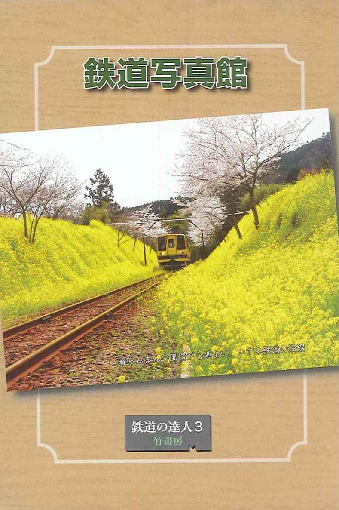
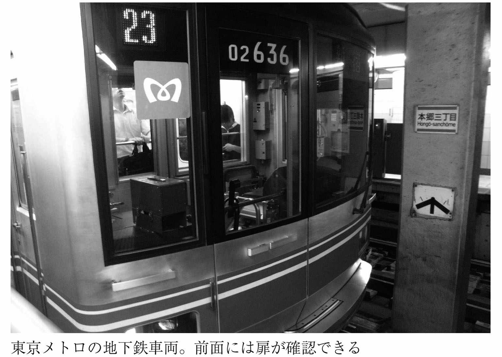
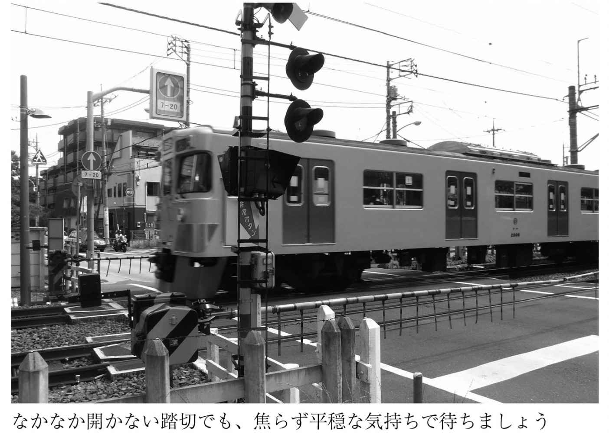

| 鉄道の達人３ 旅に出たくなる車両 知って得する切符 (竹書房文庫) | |
| Unknown | |
| (2010) | |

横見浩彦：監修
鉄道の達人３
旅に出たくなる車両
知って得する切符
この電子書籍は、縦組の底本を元に作成しました。
はじめに
シリーズ１作目となる『鉄道の達人』が刊行されて２年と少し。シリーズ２作目の『鉄道の達人２ 降りたい駅 乗ってみたい路線』の刊行からはわずか１カ月。
ついに３冊目が登場です！
この刊行ペースでお分かりの方も多いとは思いますが、本書は第２作目と対になるように内容を構成してあります。
第１章「この列車がすごい！」では、僕が注目する編成や珍しい車両についてご紹介します。ディープなテツにとってはおなじみの列車だらけかもしれませんが、入門編としては押さえておきたいモノばかり。機会と時間とお金があれば、ぜひ端から全部乗りつぶしてみてください。
第２章「レールに隠された秘密！」では、鉄道文化をその足下で支える、縁の下の力持ち的な存在に注目してみました。さして華はないものの、地味で渋くて不可欠なレールについての基礎知識です。
第３章「切符の裏ワザ・お得ワザ！」と第４章「読み込めばすべてがわかる時刻表！」では、鉄道に乗るために絶対に必要な、紙でできた宝物の小ネタです。みなさんのコレクター心もちょっぴり刺激してみました。
そして第５章「現場で働く鉄道員の世界！」では、外部からはうかがい知ることの難しい業界の中身をズバッとご紹介。僕たちが愛する鉄道世界も、その内部から見ると一風変わった景色が広がっているものなのです。
さあ、これでそろった入門編の３冊目。今度もまたまた自信作です。
「やっぱり鉄道は面白い！」
まとめて読んで、こう思っていただけたなら、僕はなにより幸せです。
２０１０年７月 横見浩彦
もくじ
本書に記載した情報・規約等は２０１０年６月現在のものです。法改正・ダイヤ改正等によって変更が生じる場合がありますのでご注意下さい。
第１章 この列車がすごい！
日本最速を誇った５００系「のぞみ」引退の理由
新幹線５００系「のぞみ」といえば、独特のシャープなデザインと、何よりその速さで人気の的となった車両です。
１９９７年に登場した５００系は、初めて営業運転で時速３００キロメートルを達成した車両として大きな注目を集めました。そのスピードは、当時５時間４分が最短だった東京駅～博多駅間の所要時間を15分も短縮するほど。「５時間の壁を破った」ことは大きなニュースとして全国を駆け巡りました。しかも同年には新大阪駅～博多駅間の平均速度（時速２４２・５キロメートル）が、世界一の営業速度としてギネスブックにも掲載され、「５００系＝最速」とのイメージを確固たるものとしました。
その後、汎用性を重視した後継車両７００系が開発されるも、最速の座を譲らなかった５００系（現在の最速の座はＮ７００系が占めています）ですが、なんと２０１０年２月28日には「のぞみ」を引退させられてしまいました。
しかも転用先は「のぞみ」の次に速い「ひかり」ではなく「こだま」です。デビューから十数年しか経っておらず、まだまだ快スピードで運行可能な５００系は、なぜこのような扱いを受けるようになったのでしょうか。
実は５００系の悲劇は、自慢のスピードが引き起こしたものとされています。速度をとことん追求し、最新技術を投入した５００系ならではの先鋭的な構造や特徴が、逆に「のぞみ」での現役生活の短さを強いられる結果となったというのです。
たとえば、のっぺりした７００系シリーズとは対照的に、シャープで鋭角的なイメージの強い５００系のデザイン。「あの顔つきがイイ」という声も多い５００系のチャームポイントであるこのデザインもまた、早期引退の理由のひとつとされています。
というのも、５００系のノーズ（車両先頭部分）は15メートルもあるロングノーズにしてあるため、ノーズのある前後両端の車両には、他の新幹線車両にはふたつある乗降ドアをひとつしか設けられないのです。つまり車両への乗降口が、他の車両と違うということ。
しかもその余波は他の部分にも及んでいます。ノーズが長くて乗降ドアが少ないということは、前後両端車両については、座席数も他の車両より少ないことを意味します。おまけに、ここで発生する収容人数の不足分を補うために、中間車両の乗車定員は、他型の車両より多くなっているのです。
こうして、他型の新幹線車両と異なる特徴を持ってしまった５００系車両は、安定した運行を目指すＪＲにとって「扱いにくい車両」というレッテルを貼られてしまったのでしょう。確かに、急なアクシデントが起こったために他型の車両と変更が必要......という場合に、５００系の持つ特徴は対応を難しくさせる要因でしかないようです。
そのためＪＲは安定性を求めて、「のぞみ」に関してはＮ７００系の投入と５００系の引退を決定したようですが、まだまだ速い５００系の勇姿が「こだま」でしか見られないというのは、やはり残念な話です。
最近の新幹線の顔はなぜのっぺり系に？
シャープで勇ましい顔つきだった５００系が「のぞみ」を引退させられた一方で、完全に主役の座を射止めたのが、７００系やＮ７００系といった「のっぺり顔」の新幹線車両です。
扁平な斜面が特徴的で、まるでアヒルやカモの顔のようにも見えるこの形状は専門用語では「カプス形状」と呼ばれています。そしてもちろん、新幹線界の新たな主役の顔つきにカプス形状が選ばれた裏には理由があります。
もともと新幹線車両の顔つきは、０系や１００系、２００系などのような丸形のフォルムが採用されていました。そしてこの丸形の進化形として生まれたのが５００系です。５００系の特徴は、「時速３００キロで走行しつつも、騒音をあまり出さない」というものでした。
列車が走行時に出す騒音にもいろんな種類がありますが、５００系の開発時に最も重視されたのは「トンネル走行時の騒音」とされています。そしてこれは、日本特有の事情から来る問題でした。
たとえばフランスを超高速で走るＴＧＶには、同様の問題はあまり発生しません。開けたフランスの大地を走るＴＧＶの路線にはトンネル区間があまりないからです。一方で、日本は狭い国土のほとんどを山地が占めており、しかも新幹線の路線は「できるだけまっすぐ」というコンセプトで敷設されています。結果、必然的にたくさんのトンネルが必要になり、トンネル走行時の騒音対策もまた必須のものとなるのです。
ここで問題となる、トンネル走行時に発生する騒音は通称「トンネルドン」と呼ばれています。正確には「トンネル微気圧波」といい、これは高速走行する列車がトンネルに突入すると、その列車に押された空気がトンネル出口で「ドンッ！」という大きな音を出すというもの。
ロングノーズが特徴的な５００系のデザインは、空気抵抗などを計算し、この「トンネルドン」をなるべく小さくするためのものだったのです。
しかし前項で紹介した通り、５００系のロングノーズ形状は、運行管理の面で、少々やっかいな結果を招いてしまいがちです。そこで、同じように「トンネルドン」対策の効果を発揮しつつも、ロングノーズにならないよう計算・開発されたのが７００系とＮ７００系、あるいはＥ４系、Ｅ５系などに代表される、アヒル顔の「カプス形状」でした。
扁平で急斜面な「カプス形状」であれば、５００系ほどのロングノーズにせずとも「トンネルドン」を抑制でき、なおかつ前後両端車両のドア数や定員数を他型の車両と合わせられる......。見た目だけのイメージで「なんかイマイチ」とも語られがちな７００系やＮ７００系の顔つきは、最新技術で難題を克服した日本が誇るべき顔なのでした。
新幹線０系に会いたい！
２００８年の年末、新幹線ファンは涙しました。
東京オリンピックが開催され、キング牧師がノーベル平和賞を受賞し、そして東海道新幹線が開業した１９６４年から、足かけ44年にもわたって活躍を続けてきた「新幹線の代名詞」たる０系電車が、その現役生活に完全な終止符を打ってしまったからです。
世界で初めて時速２００キロを超えるスピードで営業運転を果たし、今なおワールドワイドな人気を誇る０系新幹線ですが、その姿は21世紀に入るとなかなか見かけにくいものとなっていました。車両の大半は廃車となり、東海道新幹線では早々に運転を終了。数少ない編成が山陽新幹線で運行されるのみとなっていました。
そんな０系の定期営業運転ラストランは、２００８年11月30日。岡山駅発、博多駅行きの「こだま」でした。鉄道ファンにとって永遠のヒーローである０系の最後の勇姿を一目見ようと、博多駅ホームには多くの人がつめかけ、ニュースでも大きく報道されたものです。
その後、ファンのために同年12月６・13・14日に「さよなら運転」を行い、完全引退となった０系新幹線ですが、その姿を再び目に焼き付けたいというファンの数は少なくありません。
では現在、どこに行けば新幹線０系と出会うことができるのでしょうか。
新幹線０系に出会える場所としてまずご紹介したいのは、さまざまな鉄道関連施設です。鉄道ファンの新たな聖地として人気を集めている埼玉県さいたま市の「鉄道博物館」や、大阪府大阪市の「交通科学博物館」、愛媛県西条市の「四国鉄道文化館」などが代表的なポイントですが、中には意外な場所で出会える０系車両もあります。
それはイギリス。なんと遙か海の向こう、イギリスの「ヨーク国立鉄道博物館」にも０系新幹線が展示されているのです。
さいたま市の鉄道博物館が日本の鉄道ファンの聖地ならば、ヨーク国立鉄道博物館とは、世界の鉄道ファンの聖地ともいうべき施設です。世界初の鉄道を走らせたイギリスの鉄道文化や歴史を学べる場所として、約３００両の車両と無数の鉄道関連アイテムが展示・収蔵されており、世界最大規模の鉄道博物館といわれています。その展示車両は、基本的にすべてイギリス国内で使用されていたもので占められていますが、唯一の例外があります。それが、日本の０系新幹線なのです。
事の起こりは２０００年にさかのぼります。実はこの年、大阪市にある交通科学博物館、京都市にある梅小路蒸気機関車館と、ヨーク国立鉄道博物館が姉妹博物館として提携する運びとなりました。その際に日本側から記念品の寄贈が提案・検討され、日本の鉄道界を代表する車両として選ばれたのが０系新幹線だったというわけです。
こうして海を渡り、イギリスでも人気の展示物として話題になっている新幹線０系車両。もしヨークを訪れることがあれば、ぜひ異国での勇姿を、目とファインダーに焼き付けておきたいものです。
「見るだけでは満足できない。あの０系にまた乗りたいんだ！」
......そんな無茶でワガママな願望を、少しだけ叶える手段もあります。といっても、どこかでひっそり０系車両が走っているわけではありません。実は初期の０系「こだま」のシートを転用して走っている車両があるのです。
０系のクロスシートをリサイクル利用している列車は、北海道と九州にあります。ＪＲ北海道・石北本線と釧網本線を走るキハ54形と、ＪＲ九州・筑豊本線と三角線、肥薩線を走るキハ31形、ともに国鉄末期に造られた車両です。こちらもぜひ、機会があればゆっくりと腰を下ろしてみたいところです。
新幹線の名前はどう決まる？
新幹線に付けられた「ひかり」「こだま」「のぞみ」などの列車愛称は、どのように決められるか、ご存じでしょうか。
１９６４年の新幹線開業と同時に運行が開始された「ひかり」と「こだま」の名前については、一般公募によって決められました。といっても、もともと国鉄が「新幹線につける愛称を募集しよう！」と考えていたわけではなく、最初は愛称を付ける予定すらなかったものの、なんとなく内部でそのような気運が高まったため......というのが実情のようです。
そんな理由からか、新幹線開業の４カ月前に行われた「夢の超特急の愛称公募」は、募集期間がたった18日間という、その注目度からすると非常に短いものでした。しかし当時、開業に向けての試験走行が始まり、頻繁に「最高速度更新！」のニュースを目にしていた世間からの興味は、おそらく国鉄が考えていたよりも高いものだったのでしょう。短い公募期間にもかかわらず、なんと応募総数は約56万通にも達しました。
この公募によって決められた名前こそが、「ひかり」そして「こだま」です。
寄せられた56万の応募名称は、決してバラバラではありませんでした。最終的に名称が何種類あったかという資料によれば、その数字はたったの７８０。かなりの人が、共通の名称を応募していたことがうかがえます。
中でも、２万通近い票数を獲得して、文句なしの第１位として最速列車の愛称に選ばれたのが「ひかり」でした。もちろん由来は、何よりも速い「光速」から。東京駅、名古屋駅、京都駅、大阪駅にしか停車せず、約４時間で東海道を走り抜ける夢の世界最速列車にふさわしい名称です。
そして、最速が光の速さならば、と選ばれたもうひとつの名が「音速」を意味する「こだま」でした。こちらは、いわば「ひかり」ありきのセット選定。なにしろ「こだま」の名は、投票数では第10位にすぎなかったのです。
さて、最速の列車愛称が「ひかり」と決まってから28年後、それよりも速い列車が登場してしまいます。しかし物理的に考えて光速より速いものはありません。そこで少しコンセプトを変容させて候補が絞り込まれました。この時の愛称決定方法は公募ではなく、ＪＲ内で提出された案を検討委員会や一般モニター、有識者などが決めるというものでした。ここで選ばれたのが、最終候補として残っていた「希望」を、「ひかり」「こだま」と同様の大和言葉に変換した「のぞみ」というわけです。
新幹線の愛称は、このように公募を通して決められるものもあれば、ＪＲ内部で決められるもの、また公募の場合も最上位ではないものの列車イメージに近く評判がよかったもの、さらには既存の列車愛称が格上げされて採用されるもの......とたくさんのパターンがあります。
たとえば東北新幹線の「はやて」は公募ですが上位ではなく、「こまち」は公募１位でした。上越新幹線の「とき」「あさひ」「たにがわ」はどれも公募なしで決定されていますし、「あさひ」と「たにがわ」は在来線列車愛称からスライド流用した愛称です。
このカテゴリで最新の話題といえば、２０１１年春から東北新幹線の東京駅～新青森駅間を時速３００キロで走るＥ５系新幹線です。２０１０年５月に定められたその愛称は「はやぶさ」。公募に応募された名称のうち第７位のものでしたが、１～３位を占めた「はつかり」「はつね」「みちのく」を抑えて、スピード感があり親しみやすいという理由で採用されました。
新幹線に限らず、こうした列車愛称の公募は、わりと頻繁に行われています。鉄道ファンにとっては「あの新幹線の名付け親は自分だ！」という自慢ネタを作るチャンスともいえるでしょう。募集情報を見かけたら、まずは頭をひねってみてはいかがでしょうか。
現代の名工がハンマーで作る新幹線の顔
０系から始まりＮ７００系まで、歴代の新幹線は緻密なシミュレーションを繰り返して設計・デザインされています。大規模な風洞実験やハイスペックのコンピュータによる計算工程は、まさに現代技術の最先端。まるでＦ１マシンのように細心の注意を払って、安全と高速の両立がはかられています。
そんな新幹線の、まさに「顔」である前後両端車両の先端部は、オートメーション化された機械ではなく、実直な職人の手作業によって製造されていることをご存じでしょうか？
たとえば０系～２００系新幹線のダンゴ鼻や、５００系のアグレッシブに尖った面構え、７００系のアヒル口など、先頭車両の先端部分は専門用語で「オデコ」と呼ばれています。そして、このオデコ製造こそが、板金工の職人たちの腕の見せどころなのです。
空力的なベストを目指して設計された新幹線のオデコの繊細で複雑な曲面製造は、近年まで機械での実現が難しい分野でした。まして新幹線車両は、量産される自動車などとは異なり、多く作っても同じ型はせいぜい数十編成で、しかもオデコがあるのは前後両端車両だけという、少数限定生産品です。大金をかけて製造ラインを作っても採算が取れるはずもありません。
そこで有効なのが、低コストながらも丁寧で繊細な仕事が期待でき、なおかつ後から発生する細かな仕様変更にも柔軟に対応可能な「職人による手作り」という方法です。
しかも、ここで登場する職人たちが使う技が、ハンマー一本で金属板を叩いて曲面を成型していく方法だというのですから、驚かされます。「打ち出し加工」と呼ばれるこの板金技術は、ハンマーで叩かれてへこんだ部分の周囲が、元に戻ろうとする力を利用して曲面を成型していく技術です。
つまり表はきれいな曲面になっている新幹線のオデコも、裏面を見てみるとハンマーの後が無数に付いたデコボコの状態になっており、オデコ全体は、一辺50～１００センチほどのこうした金属板を何枚も隙間なく溶接したものなのだとか。まさに匠の技の結晶......それが新幹線のオデコなのです。
山口県にある山下工業所は、日立製新幹線車両のオデコ製作を一手に引き受けているこの道の権威です。会社の創業は新幹線開業の前年にあたる１９６３年。創業者であり職人である山下清登氏が、翌年デビュー予定の０系新幹線の先頭車両を製作するために興した会社です。
以来数十年、山下工業所ではいまもＮ７００系やＥ４系、Ｅ５系など最新型新幹線のオデコをカンカンとハンマーで叩きながら作り続けています。創業より作り続けてきた新幹線のオデコの数は、22種類で３４０両以上。創業者である山下氏の後継者たる工場長の國村次郎氏は、その繊細な技術で２００８年に国から「現代の名工」にも選定されたほどです。
超特急で列島を走る新幹線のオデコの裏には、匠の技が隠れている......。そう思うと、ますます新幹線の顔が輝いて見えてくるのではないでしょうか。
赤い帯の特殊な新幹線「イーストアイ」
鉄道列車とは、基本的に旅客か荷物を運ぶために運行されています。しかし中には、そのどちらも乗せることなく走っている列車があります。そんな例のひとつとして、シリーズ第１巻『鉄道の達人』では、幻の黄色い新幹線「ドクターイエロー」を紹介しました。
ドクターイエローとは、車体を黄色く塗装された、路線保守のための新幹線車両のことで、正式名称を「新幹線電気軌道総合試験車」といいます。お役目は線路のゆがみや架線の傷みなどの測定ですから、もちろん旅客も荷物も載せて走ることはありません。
けれど、目にも鮮やかなイエローの車体はそれだけで珍しい上に、もともと少ない運行時間は通常列車の営業運行が終わった深夜帯のため、明るい中で鮮明にその姿を見ることが難しい......と、ドクターイエローはまるで絶滅寸前の夜行性動物のような希少性もあいまって、鉄道ファンから大変な人気を誇っています。
そんなドクターイエローが走っているのは、東海道新幹線と山陽新幹線の路線です。では他の地域の新幹線の検測はどのように行われているのでしょうか。
まず九州新幹線。実は九州新幹線にはドクターイエローに相当する検測車両はありません。その代わり８００系のいくつかの編成に検測機能が与えられているようです。
では東北・上越新幹線の他、山形・秋田新幹線という路線を持っているＪＲ東日本はどうでしょうか。実はＪＲ東日本も以前はドクターイエローを使っていました。しかし２００１年からは違うカラーリング、違う愛称を持った別の検測車両を投入しています。その名は「イーストアイ」。
イーストアイはミニ新幹線規格を持つ山形・秋田新幹線にも乗り入れることを考えて、Ｅ３系をベースとした在来線サイズに作られています。トレードマークとなる車体カラーは、白地に赤い帯です。
ドクターイエローと比べると派手さはないものの上品なデザインにまとめられたイーストアイもまた、最近では鉄道ファンや子供達からの人気を集めています。
２０１０年12月の東北新幹線全線開業に向けて、その終着駅である新青森駅に初めてイーストアイが乗り入れた際には、出迎えのねぶた祭りのお囃子が鳴り響く中、集まった多くの親子連れ鉄道ファンから大歓声が上がりました。
全６両で編成され、それぞれの車両が通信測定や軌道検測、架線測定など役割分担を担っているイーストアイ。こちらもまた、見られそうな機会があれば、逃さずチェックしておきましょう。やはりドクターイエローと同じく、そうそう明るい中で拝みやすい車両ではないのですから。
新幹線用の線路を最初に走った電車
１９６４年に開業した東海道新幹線は、当時すでに輸送力が限界に達していた東海道本線の混雑解消のため、そしてアジア初の開催となる東京オリンピック開幕に間に合わせるため、時間的な猶予があまりない中、必死で開発された路線という一面を持っています。
そんな開発途中に、面白いエピソードが生まれました。なんと新幹線専用に作られた線路を最初に営業運転で走った列車が、新幹線ではなかったというのです。
「新幹線の線路を最初に走った列車とは？」
普通、こう聞かれたら「ひかり」か「こだま」かで悩むものでしょうが、実際の答えは、ズバリ新幹線どころか国鉄の車両ですらありません。
新幹線の線路を最初に走ったのは、大手私鉄のひとつである京阪神急行電鉄（現・阪急）京都線の電車だったのです。
時は新幹線開業の４年前にさかのぼります。当時、国鉄の担当者は東海道新幹線を敷設するルートに頭を悩ませていました。というのも、大阪府と京都府の境にある大山崎付近には、狭いスペースに国道と東海道本線と阪急京都線が走っており、新たに新幹線を割り込ませる余地がなさそうに見えたからです。
そこで国鉄は阪急と協議を開始。交渉はうまく進み、京都線を少しズラしてもらうことで合意しました。
ところが、この交渉は新たな問題を誕生させてしまいます。京都線をズラして空いたスペースに新幹線を走らせるための高架工事を行う場合、その高架の重さによって、横を走る京都線エリアに地盤沈下が起きてしまう可能性が指摘されたのです。
ならば、どうするか。結果、選択されたのは阪急京都線もこのエリアについては新幹線と共同の高架軌道を建設するというアイデアでした。
工事はまず阪急の路線を仮移設することから始まりました。そして次に、空いたスペースに新幹線の高架工事をスタート。......さて、計画がうまくいったと思いきや、ここで最後の問題が起こります。仮移設した先の阪急路線もこの後で高架化しなければならないのですが、ではその工事中に阪急電車はどこを走ればいいのでしょうか？
そう、ここでひねり出された答えが「工事中の間に限り、新幹線の線路を走らせてしまえ」というものだったのです。
日本の多くの鉄道では、狭軌（軌間１０６７ミリ）が採用されており、標準軌（軌間１４３５ミリ）規格の新幹線の線路上は走れないところですが、阪急は新幹線と同じ軌間だったため、こんな解決策が可能になったのです。そうと決まれば、残るハードルは国鉄と阪急で規格が違う架線の張り替えだけ。架線は線路に比べればずいぶんと簡単に張り替えができますから、大きな弊害にはなりません。......こうして高架工事期間中だけの特別コースとして、阪急の電車は新幹線よりも先に新幹線の線路を営業運転で突っ走ることとなったのでした。
もちろん今もなお、この高架は使われています。新幹線で京都駅から新大阪駅に向かう途中、よく目をこらしてみてください。大山崎付近からしばらく、阪急電車が同じ高架上を併走していることが確認できるでしょう。新幹線開業にまつわるドタバタ劇の名残のひとつとして、ぜひ微笑ましく眺めてあげてください。
リニアモーターカーは時速何キロまで出せる？
「鉄道は、いったいどこまで速くできるのか？」
少しでも鉄道に興味のある人なら、このテーマに胸がときめかないはずがありません。かつて「夢の超特急」と呼ばれた新幹線は、開業当時に時速２００キロ以上で営業運転して世界の耳目を集めましたが、いまやその速度は時速３００キロを超えています。それどころか、「夢の超特急」というキャッチフレーズ自体を、新世代の旗手たるリニアモーターカーに譲っていると言えるでしょう。
そもそも、リニアモーターカーの開発理由のひとつには「新幹線は近い将来に〝速度の壁〟当たってしまう」ということがありました。ここでいう「速度の壁」とは、理論的にそれ以上のスピードは望めないラインのことです。
新幹線は、鉄のレール上を鉄の車輪で走るシステムの鉄道です。重たい車両が前に進むためには、車輪とレールの間に生まれる摩擦力（＝粘着力）を使うしかありません。しかし実はこの摩擦力は、速度が上がれば上がるほど、ゼロに向かって小さくなってゆく性質を持っています。つまり一定の速度を超えると摩擦がゼロになり、車輪は空転を始めてしまうために、それ以上の加速が不可能となってしまうのです。これが「速度の壁」の正体です。
「速度の壁」がどこで訪れるのかは、列車が走る条件に左右されます。たとえば最悪の条件（軌間がせまく台車のバネが固く天候が大雨など）のもとでは時速３１０キロが限界で、これを改善するために開発を進めたとしてもせいぜい限界速度を時速３５０キロに伸ばすのがやっと......というデータもあります。
これでは、現行の新幹線は、じきに速度の壁に到達してしまいます。そこで発想の転換が行われました。
「ならば車輪とレールの間に生まれる摩擦に頼らず推進力を生むシステムはないものか......？」
そうして導き出されたのが、磁気を使って浮上走行させる、車輪のないリニアモーターカーのアイデアです。摩擦力を使わないことで、従来の鉄道が突き当たる速度の壁を乗り越えてしまおうという理屈です。
日本で初めて浮上走行に成功したリニアモーターカーは１９７２年に開発されて時速60キロを記録したＭＬ１００です。これだけを見ると、たいそうなうたい文句のわりにはずいぶん遅く感じますが、開発はここからまさに加速度的に進みます。１９７９年には無人走行ながら最高時速５１７キロに、１９８７年には有人走行で最高時速４００キロに達しているのですから、ものすごい開発速度です。
１９９６年、山梨県にＪＲ東海が技術の粋を結集した山梨実験線ができてからは、さらに記録の更新ペースが向上してゆきます。
有人走行で時速５３１キロ、無人走行で時速５５０キロを達成したのが実験線開設の翌年である１９９７年、続いて１９９９年にはついに有人で時速５５２キロを記録します。
そして２００３年、速度向上試験で現在に至るまでの最高記録である、有人走行での時速５８１キロという記録がマークされます。これは陸上の交通機関における世界最高記録として、現在もギネスブックに登録されています。
２００３年の記録が現在も最高という点に、「あれ、その後は？」と疑問に思う方もいらっしゃるでしょう。実はリニアの開発を担当しているＪＲ東海と鉄道総合技術研究所では、リニアモーターカーの速度向上実験は２００３年でいったん終了し、現在は製造コスト削減に向けて取り組んでいる真っ最中。つまりリニアの最高速度については、しばらくは最高時速５８１キロのままということになりそうです。
とはいえ、ＪＲ東海からは２００３年の発言として「将来的には時速７００キロを目指す」という声も聞こえてきています。最終的にどのくらいのスピードまでが実現できるのか、非常に楽しみです。
リニアモーターカーには運転席がない？
リニアモーターカーの顔つきを見てみると、やはり新しい新幹線のように、ロングノーズタイプになっていることに気づかされます。たとえば２００２年に開発されたＭＬＸ０１のノーズは、鼻が長いことで知られている新幹線５００系の15メートルを遙かに超える、23メートルもあります。もちろんこれは走行中の空力抵抗の低減を考えたものですが、さまざまなデータを集積してノーズ短縮化をはかられた２００９年投入のＭＬＸ０１―９０１でも、ノーズの長さは15メートルあります。やはり超高速走行に長いノーズは避けられない組み合わせなのでしょう。
さて、そんなリニアモーターカーの顔つきを見ていると、鼻の長さ以外にもうひとつ重要な点が気になってきます。先頭車両の前面に、窓がないのです。普通はどんな列車であれ先頭車両の最前面には運転台があり、運転士の前方視認用の窓が設けてあるものですが、リニア車両にはそれがありません。
実はリニアモーターカーの運転台は、車両内には設けられていないのです。
ＪＲ東海と鉄道総合技術研究所が研究開発を進めているＪＲマグレブ式リニアモーターカーでは、車両側ではなく軌道側に設置されたコイル（超電導磁石）の制御によって、運転が行われています。つまり、列車の加速や減速、停車といった運転命令を車両から発しなければならない理由はなく、むしろ列車外の地上に運転室を置いた方が都合がいいというわけです。
そのためリニア先頭車両前方には運転台は設けられず、当然窓もなく、運転台は地上の司令室の中に設けられています。山梨実験線では「電力変換変電所」の中にある司令室がリニアの運転台として稼働しています。
とはいえ、列車の前方視認が不要なわけではありません。リニアの先頭車両には高精度なＣＣＤカメラが搭載されており、司令室では車両から列車無線で送られた映像をリアルタイムでモニターできるようになっています。
もちろん運転操作についてもハイテクを利用した補助システムが完備されています。たとえば列車運転で最も難しく、各種運転シミュレーションでもキモとして扱われる停車について。超高速走行して駅に入線してきた車両は、モニターを監視する運転者の視力や経験則に頼って停止操作されるのではなく、列車の位置をミリ単位で検知する交差誘導線システムの自動案内によって、正確な停止位置にスムーズに停めることが可能となっています。
浮いて走るだけではなく運転台も車両内にないリニアは、まさに従来の列車イメージを覆す乗り物です。しかしそう遠くない将来、これらが当たり前という状況が訪れているだろうと考えると、なんともワクワクしてしまいます。
ついに出た！ 線路を走るメイド喫茶トレイン
日本が世界に誇る文化のひとつ。それが鉄道です。
全国にビッシリ張り巡らされた路線網と、最新鋭の技術で開発される車両群、外国人がビックリするほど正確無比な運行ダイヤ、そしてこんな日本の鉄道を愛しまくり、あらゆるサポートを惜しまない無数のテツたち......。もともと日本の鉄道は欧米から輸入されたものですが、いまやまさに「日本の誉れ」と断言できるほどに文化として花開いています。
これとは別に、日本が発信する文化として近年世界を騒がせているのが、マンガやアニメといったオタク文化です。その市場規模は「もはやハリウッドと比肩できるほど」という声もあるほどで、常に新しいビジネスが誕生しています。そんなオタク文化の新ビジネスのひとつに、メイド服を着たかわいいメイドさんが給仕してくれるメイド喫茶がありますが......、なんとこのメイド喫茶が、鉄道の世界と合体してしまいました。
かわいいメイドさんが車内で給仕や専用グッズの販売をしてくれ、写真撮影にも応じて一緒に旅の思い出作りをしてくれる......。「線路を走るメイド喫茶」ともいえるコンセプトのもとに運行される、メイドトレインの誕生です。

メイドトレインは、ひたちなか海浜鉄道・湊線と鹿島臨海鉄道大洗鹿島線によって運行されました。といっても定期運行ではなく、２０１０年の３月21日・22日のみの臨時運行です。この日取りは、水戸市で開催される同人誌即売がメインのオタクの祭典「コみケッとスペシャルin水戸」に合わせたもので、完全にオタクにターゲットを絞っていることをうがかわせます。
大洗鹿島線では専用パッケージが採用された「萌え駅弁」が車内販売されました。種類は２つあり、パッケージにはともに女の子のイラストが描かれています。「ダイダラボウのはまぐりめし」（８５０円）にはスクール水着姿のスレンダー美少女キャラが、「三浜たこめし」（７５０円）にはほんわか系２頭身キャラがタコと並んだコミック調イラストが描かれており、オタク心のくすぐり方も秀逸です。ちなみにこのキャラクターはイベント用に創作されたものではなく、鹿島臨海鉄道のオリジナルキャラクターである「ハッピーポイントかりんちゃん」を萌え系にアレンジしたものです。また弁当自体はもともと人気のあった駅弁のため、味の方も保証付きです。
車内販売では、ほかにもオリジナルマンガやオリジナルパッケージ・グッズの他、食品やドリンク類も充実しています。
このメイドトレインが「車内販売員の制服がメイド服になっただけ」ではない証拠に、他の企画にも力が入っています。その代表格が、撮影会でしょう。残念ながら有料でのオプションではありますが、車内で働くメイドさんや列車をバックにポーズを取るメイドさんなど、ヨダレもののシャッターチャンスが満載で、評判もたいへん大きなものでした。まさに「走るメイド喫茶」の面目躍如と言える、好企画です。
メイドトレインは２日間の臨時運行だったはずですが、あまりの評判の大きさに、ひたちなか海浜鉄道ではさっそくゴールデンウィークにも追加運行されました。いまだ公式ホームページも健在ですし、気になる人はこまめにチェックし、次の運行予定が立てられていないか確認してみることをおすすめします。
湿原を走る日本一遅い列車
北海道の釧路平野には、日本最大の湿原があります。名前は釧路湿原。平野を蛇行しながら流れる釧路川の周囲に広がる湿原にはいまだ雄大な自然が残されており、多くの野生動物にとっても貴重な生息地となっています。
この湿原の価値は国際的にも認められており、１９８０年には日本最初のラムサール条約（水鳥の生態系と繁殖地を守る目的の国際条約）登録湿地ともなりました。
季節によって異なる表情を見せる釧路湿原はその自然遺産的な価値もさることながら、純粋にレジャーを楽しむ場所あるいは観光地としても大人気です。アウトドアレジャーを好む人によって、釧路湿原があこがれの場所に数えられることも少なくありません。
冬に特別天然記念物のタンチョウを観測できることが知られる釧路湿原ですが、夏も釧路川をゆったり進むカヌー下りなどで大人気です。本項では、その夏場に湿原内をゆっくり走行する観光列車をご紹介します。
その列車の一番の特徴は、走行速度が「遅い」こと。新幹線やリニアモーターカーなど「速い」と知られる列車は数多くありますが、逆のパターンは珍しい存在です。
列車の名前は、そのものズバリ「ノロッコ号」。釧路湿原を通る釧網本線で、ＪＲ北海道が冬場を除く季節に運行させているトロッコ列車です。
もちろん名前の由来は「のろい＋トロッコ＝ノロッコ」。聞いた通りのナイスなネーミングです。
当然、列車のアピールポイントもその遅さにあります。これは風光明媚な沿線風景を乗客に存分に眺めてもらうための、いわばサービスとしての鈍足運行。制限速度は時速30キロと規定されています。
世間一般が「いかに速くするか」「いかに効率化するか」に気を取られている今だからこそ、ゆっくりのんびり、北海道の大自然を眺めながら列車に揺られ、日本で一番遅～いレール旅を堪能してみるのも、面白い趣向と言えるでしょう。
ちなみに、冬場のタンチョウが目玉とされる釧路湿原ですから、「冬にノロッコ号からタンチョウ見物」というのも楽しそうですが、残念ながら釧路湿原のノロッコ号は冬場は運行されていません。
実はノロッコ号は冬になると、釧網本線のオホーツク海側に出て、網走駅～知床斜里駅間を走る観光列車「流氷ノロッコ号」として活躍しているからです。もちろん冬のノロッコ号も、その名にふさわしく、速度上限を守ったノロノロ運転で北海道の自然を堪能させてくれます。こちらもまた、ぜひ一度そのノロさを実体験したい列車です。
津軽三味線ライブを堪能できる列車
秋田県能代市の東能代駅から、海沿いを北上して青森県南津軽郡の川部駅までを結ぶ、ＪＲ東日本・五能線というローカル線があります。沿線はさほど開発も進んでおらず、そのため迫力ある日本海の眺望を楽しみながらローカル線ならではの旅情を味わえると、テツからの人気も高い路線です。
今回ご紹介する列車は、ＪＲ東日本がその五能線と奥羽本線経由で秋田駅～青森駅間を走らせている「リゾートしらかみ」です。
夏期は毎日、冬期は土日を中心に運行されているリゾートしらかみは、世界遺産にも登録された白神山地や、日本海といった北東北の自然の迫力を間近に感じることができる観光列車です。
リクライニング機能がついた座席は全席指定になっており、４人がけのボックス席にはテーブルまで付いていますので、お弁当を広げて舌鼓を打ちながら景色を眺め、旅の仲間とゆったりとした時間を過ごすことができます。
運行形態として、海沿いを走る一部区間では、その素晴らしい眺望を存分に楽しむために徐行運転も行われていますので、「ボーッとしてたらいい景色を見逃した！」なんてこともまずありません。
前後両端車両に設置された展望ラウンジも、リゾートしらかみの自慢のひとつです。特に先頭車両の展望ラウンジでは、大きな窓から心ゆくまで景色を堪能できるほか、運転席の様子も間近から眺められます。
車両はキハ40系を改造した専用車両で、すべて３両編成です。そして、白神山地に生息する天然記念物のキツツキから名前をとった「くまげら編成」と、白神山地のブナが密生する原生林をイメージした「ブナ編成」、白神山地内に点在する十二湖のうちコバルトブルーの水面が美しい青池をイメージした「青池編成」の３種の編成があり、１～６号までの６列車が運転されています。
このうち３号列車は、有名な観光地である千畳敷の最寄り駅である千畳敷駅に10分間停車して、短い時間ではあるものの海岸を散策できるよう気を利かせてくれています。
通常、壮観な景色の中を走る観光列車はこのように各地の自然風景を眺めさせてくれるパターンに終始することが多いわけですが、リゾートしらかみはここからさらに一歩踏み込んでいます。北東北の自然だけではなく、文化までも楽しめるようなサービスが車内で行われているのです。
用意されている車内イベントはふたつあります。
テツの間で特に有名なのは１～３号列車の先頭車両展望ラウンジにて、鰺ケ沢駅～五所川原駅間で披露される、津軽三味線の生演奏イベントです。津軽三味線独特のハイテンポで叩きつけるような演奏で、「津軽じょんから節」などの代表的な民謡を、朗々と聞かせてくれます。テツの間では「リゾートしらかみと言えば三味線」と言われるくらい、著名なイベントでもあります。
３号および４号列車の、土・日曜、祝日・振替休日には、三味線と同じく先頭車両の展望ラウンジで、津軽弁「語りべ」実演が行われています。こちらは津軽の地に古くから伝わる昔話を、地元の「語りべ」の方が、津軽の言葉を使ってやさしく語ってくれるというイベント。津軽三味線のライブが動的なイメージだとすれば、こちらはまさに静的な、落ち着いたライブです。雄大な自然の中を走り抜けながら聞くのんびりとした津軽弁の昔話は、よい旅の思い出になるとこちらも評判です。
目から飛び込んでくる北東北の自然だけではなく、三味線の音色や語り部の声を耳で楽しむことで津軽文化も味わうことができる......。リゾートしらかみに乗る機会があれば、展望ラウンジでのイベントの有無は必ずチェックするようにしたいものです。
ＳＬもどきの坊っちゃん列車が今日もゆく
愛媛県松山市に本社を置き、松山市内を中心に高浜線、横河原線、郡中線という鉄道路線を持つ伊予鉄道には、「市内線」「市内電車」と呼ばれる路面電車の路線があります。市内線はＪＲ松山駅や松山市駅前駅、愛媛観光の目玉である道後温泉などを結ぶ形で敷設されており、市内を回る観光客の他、地元の人たちにも愛されています。
そんな市内線に、実に目を引く列車が走っています。
「ＳＬ（蒸気機関車）が路面を走ってる！」
知らずに見たら、誰もが驚くことでしょう。蒸気機関車をデフォルメしたようなかわいい機関車が、これまたかわいい客車を牽引しながら、煙を出して走っているのです。
この列車の名前は「坊っちゃん列車」といいます。松山市を舞台に展開する夏目漱石の小説『坊っちゃん』の中に登場し、作中の人物たちが利用していた列車を現代に蘇らせたものです。
といってもこれは、本物の蒸気機関車ではありません。見た目こそ蒸気機関車のような形をしていますが、中身はディーゼル機関車で、煙突から出ている煙も車輪付近から吹き出している水蒸気もダミーとなっており、あくまで見た目の雰囲気を重視した列車なのです。
夏目漱石の小説の中で「マッチ箱のような汽車」と呼ばれた初代の坊っちゃん列車（12号機関車）は、伊予鉄道がまだ軽便鉄道（鉄道黎明期に敷設された安価で低規格の鉄道）だった時代の１８８８年にドイツから輸入され、67年間にわたり活躍しました。この車両はたとえばＤ51のような一般的にイメージしやすい蒸気機関車とは異なり、漆黒ではなく深緑のカラーリングに、こぢんまりとしたシンプルなフォルムからなっていました。まるでおもちゃのように可愛らしく、夏目漱石による「マッチ箱のような」という表現も、実にしっくりきます。
その人気は坊っちゃん列車が現役を退いた後も根強く、１９７０年代からレプリカが製造されては各地でイベント走行を行っていました。となれば、この坊っちゃん列車を松山観光の目玉として定期運行しようという企画が出てくるのも、当然の流れだったのでしょう。
しかし現代の都市部に蒸気機関車を走らせるのは、煙突から出る煙が公害につながるなどの切実な問題をはらんでおり、おいそれと実現できませんでした。そのため長年にわたりさまざまな案が検討され、２００１年になってようやく現在の形での復刻企画が結実したといいます。
復活した坊っちゃん列車のこだわりは、車両の形と煙だけではありません。たとえば乗務員の制服も当時のものが再現されていますし、本来蒸気機関車が発する音も、車外スピーカーから流されています。
もちろん乗客が乗り込むのは機関車車両ではなく、その機関車に牽引される、小型のかわいい客車です。
この客車に揺られながら、松山名物の「坊っちゃん団子」を口に運び、タオルを肩にかけて道後温泉に向かう......。そんな風情ある旅を、一度はしてみたいものです。
各地を走る現役の蒸気機関車たち
松山市内を走る坊っちゃん列車は「蒸気機関車風なディーゼル機関車」ですが、もちろん国内には現役稼働している本物の蒸気機関車がいくつもあります。ここでは、各地で保存運転されている代表的な蒸気機関車たちを、一気に紹介していきましょう。
◎ＪＲ北海道・ＳＬ冬の湿原号
１月～３月の冬季限定で、釧網本線の釧路駅～標茶駅間を運行しています。「湿原を走る日本一遅い列車」にて紹介したノロッコ号と同じように釧路湿原を縦断する形で走り抜けるため、タンチョウの姿を見ることもできます。そのうえ運が良ければ列車を途中停車してくれるので、ゆっくりタンチョウ見物できることも。また標茶駅から知床斜里駅間で運行されている臨時バスを利用すれば、流氷ノロッコ号との乗り継ぎも可能になります。
◎ＪＲ北海道・ＳＬニセコ号
札幌駅からニセコ駅を経由して蘭越駅まで運行されている蒸気機関車です。Ｃ11形蒸気機関車が使用されており、このうちＣ11 ２０７の車両は、かつて濃霧地帯で使われていた名残で、通常はひとつである前照灯を左右に計２つ装備した独特の外見で知られています。このダブル前照灯はテツたちから「カニ目」と呼ばれ寵愛を受けています。
◎ＪＲ東日本・ＳＬばんえつ物語
新潟駅～会津若松駅間を走っている蒸気機関車です。２００７年に客車のリニューアルが実施され、外装は深いブルーのオリエント急行風に、内装はシックな大正ロマン風にまとめられました。機関車は優雅な容姿から「貴婦人」の異名をとるＣ57形が使われています。
◎ＪＲ西日本・ＳＬやまぐち号
山口線の新山口駅～津和野駅間で運行されています。機関車はＳＬばんえつ物語と同じくＣ57形。暑い８月にはＣ56との重連運転を見ることもできます。牽引される客車は車両ごとに展望車風、欧風、昭和風、明治風、大正風と異なるデザインコンセプトで造られており、乗客を楽しませるこだわりを感じます。
◎ＪＲ九州・ＳＬ人吉
鹿児島本線・肥薩線経由で熊本駅～人吉駅間を運行しています。かつて「ＳＬあそＢＯＹ」または「ＳＬ人吉号」として営業運転していた８６２０形蒸気機関車が、２００５年の運転終了を経て２００９年に修復・復帰し、リニューアルされた客車を牽引しています。これを機に「ＳＬ人吉号」から「ＳＬ人吉」への名称変更も行われました。客車は３両連結されますが、１号車と３号車には展望ラウンジが、２号車にはビュッフェが備えてあり、旅の興奮を後押しします。
◎大井川鐵道
１９７６年に日本で初めて蒸気機関車の動態保存を開始したことで知られる大井川鐵道では、現在もほぼ毎日、大井川本線にて蒸気機関車が運行されています。保有車両は、日本で唯一となるＣ10形のほか、Ｃ11が２台、Ｃ12、Ｃ56というラインナップ。もともと大井川鐵道は日本唯一のアプト式路線（井川線）を持つことや、その路線上に名所となる駅が点在しているため、大変な人気を誇っています。本線の金谷駅～千頭駅までを蒸気機関車で移動し、そこから井川線に乗り換えてアプト式を見物......というのはテツにとっての王道ルートです。
◎秩父鉄道・パレオエクスプレス
秩父鉄道・秩父本線の熊谷駅～三峰口駅間を走っている列車です。運行開始は１９８８年。「都心から一番近いＳＬ」というキャッチフレーズのもと、土日祝日を中心にした運行日はいつも親子連れ客などでにぎわっています。ちなみにパレオエクスプレスという名前の由来は、秩父地方に１３００万年前まで生息していた海獣パレオパラドキシアの名前からきているそうです。
デゴイチ＝Ｄ51......この「Ｄ」って何？
蒸気機関車といえば、名前が有名なのはまず「デゴイチ」でしょう。なぜ有名かと言えば、それはデゴイチの生産台数が非常に多かったから。
１９３０年代後半、貨物輸送の需要の高まりとともに生まれたデゴイチは、太平洋戦争中に大量生産されました。造られた車両数は全部で１１１５両。これは日本における、ディーゼル機関車や電気機関車を含めた一形式の機関車製造台数の中で、最高記録となっています。それゆえ、蒸気機関車といえばデゴイチというパブリックイメージが形成され、蒸気機関車の代名詞的な存在となっていきました。
そんなデゴイチですが、この呼び方が「Ｄ51形」の愛称であることは、もはや常識かもしれません。読みが「ディーゴジュウイチ」だから「デゴイチ」という頭の文字の読みをつなげた略し方は、実に日本的です。同じようなパターンでＣ56形は「シゴロク」、Ｃ57形には「シゴナナ」という愛称が付いています。
では、これら蒸気機関車の形番の頭に付いている「Ｃ」や「Ｄ」にはどういう意味があるのでしょうか。
結論から言ってしまえば、形番の頭に来るアルファベットは、機関車についている動軸の数を意味しています。
動軸とは、動輪（車輪）を支える軸のことです。動軸は車両を横断して両端の車輪をつないでいるものと考えれば、つまり動軸の数とは、機関車を真横から見た場合の車輪の数と同数になります。
「Ａ＝１ Ｂ＝２ Ｃ＝３ Ｄ＝４」
これが動軸の数を表す形番の公式になりますので、たとえばＤ51は横から見れば車輪が４つ、Ｃ56やＣ57は３つということになります。次のものを含め、手元に蒸気機関車の写真があるなら、ぜひ確認してみましょう。なお、「Ａ＝１」
と一応は公式に含まれていますが、動輪がひとつでは車両が立つわけがありませんので、Ａ形の蒸気機関車は実在しません。ただしＢ形の機関車は貨物入れ替え用機関車として存在していました。
では次に、アルファベットの後ろにくる２ケタの数字について。これは機関車がタンク式かテンダー式かを表しています。
機関車本体に水と石炭を搭載できるタンク式の場合は10～49が、機関車には水と石炭を搭載できないためテンダー（炭水車）を接続する必要があるテンダー式の場合は50～99の数字が振られています。
なお、この記号法則が定められたのは１９２８年です。それ以前に造られた機関車にはＳＬ人吉の８６２０形のような数字４ケタの形式名がつけられています。
無煙ＳＬの時代がやってくる？
ノスタルジックな魅力と、無骨な〝機械〟感......。今の時代、蒸気機関車は観光客の集客にも役立つ人気車両のひとつとなっていますが、そもそも蒸気機関車が鉄道界の表舞台から消えていった背景には、蒸気機関車が持つたくさんの短所が原因として挙げられます。
○運転が難しく、その調整には熟練の技を要する
○ワンマン運転ができないため人件費がかかかる
○車両が壊れやすいため保守に手間とお金がかかる
○燃費効率が悪く、牽引力が弱い
○排出される煙が有害
代表的な短所は、以上の５つでしょうか。このうちはじめの４つについては、観光用列車としての集客が見込めれば鉄道会社も目をつぶれるでしょうが、今後ますます問題となりそうなのは５つめ。煙による公害問題です。
むしろ蒸気機関車が現役で活躍していた時代には、公害面はさしたる問題ではなかったかもしれません。しかし現代社会で、環境問題を無視し続けるわけにもいかないはず。たとえば蒸気機関車が走行する沿線に民家や農地などがある場合は、民間からの苦情や突き上げも深刻なものにならざるを得ません。
また、「煙の害」という観点で見れば、電化区間に蒸気機関車を走らせた場合に、架線に煙の煤が取り付いて集電効率が落ちてしまうという、公害とは別に鉄道会社が直接被る弊害も存在します。
そこで２００５年に、ある鉄道会社が、公害の減少を目的に据えた興味深い実験を行いました。動いたのは、蒸気機関車がトレードマークの大井川鐵道です。
もともと大井川鐵道では沿線に人家やお茶畑が広がっていることもあり、煙があまり出ない種類の石炭を厳選して使っていました。ですが２００５年に行われた実験では、さらに煙と害の少ない「オガライト炭」を使っての走行実験が行われたのです。
「オガライト炭」と聞いても、ピンとこない人が多いかもしれません。しかしこの炭はそう特殊なものではなく、普段の生活上で頻繁に見ることができます。
たとえば外食しに訪れた街の焼肉屋で。テーブルに置かれた七輪の中で、中心に丸い穴があいた四角形や六角形の木炭が燃やされていたら、それがオガライト炭です。中には「オガライト炭の備長炭」を使っている店もあるでしょう。
オガライト炭とは、木材の加工途中に出る「おがくず」を高圧縮して固めたオガライトを炭化させた固形燃料で、要するに成型した木炭のことです。木炭用に森林を伐採するのではなく、木材加工中に出たおがくずを再利用するため環境破壊にはつながらず、食べ物を焼く場合にも本物の木炭の代用がつとまるだけの品質があることから、飲食店で多用されています。
つまり大井川鐵道の実験とは、石炭ではなく、煙と害がより少ない木炭で蒸気機関車を走らせようという試みだったのです。
しかしオガライト炭は石炭よりも火力が小さいため、あまりパワー面での期待ができません。この場合のパワーとは加速力と登坂力を指しますので、あまりにパワーの減少値が大きければ現在の時刻表通りの運行すら難しくなる......というわけです。２００５年の実験では、そのあたりを見極める目的で、オガライト炭を燃料に使った走行実験が繰り返されました。
結果、一定の成果は得られたものの、まだまだオガライト炭では石炭の完全な代用品にはなり得ず、さらなる研究が必要......という結論が得られました。オガライト炭は石炭と比べると約６倍のコストがかかると言いますから、能力面だけではなくコスト面にもまだまだ課題は残されているようです。
しかし、それよりも全国のテツが心配しているのは、石炭からオガライト炭に移行できてしまった場合のことかもしれません。
オガライト炭は、石炭燃料よりも「煙が少ない（しかも出るのは黒煙ではなく灰色の煙）」のですが、多くのテツ、それも撮りテツにとって、蒸気機関車にはモクモクと黒煙を吐いてもらわないと、カッコイイ写真にならないのです。たとえば撮りテツが蒸気機関車の撮影をする場合には、惰行運転できる平地ではなく、上り坂の区間をポイントに選びます。理由は、上り坂にさしかかった蒸気機関車は、パワーを出すために石炭を勢いよく燃やして、勢いよく煙を吐いてくれるからです。
「環境問題の観点から、蒸気機関車が吐く黒煙はなくなったほうがいいのかもしれないけれど、ひとりのテツとしては蒸気機関車が黒煙を吐かなくなったら面白くない」
少なくない鉄道ファンにとって、これは偽らざる心情でしょう。社会の全体幸福と、個人的趣味の追求......なかなかに難しい問題かもしれません。
鉄道界にもハイブリッド車が登場！
環境問題への意識の高まりとともに、近年の自動車業界ではハイブリッドカーの売り上げが伸び続けています。おそらく今後の主流がガソリン自動車からハイブリッドカーを経て電気自動車へと移行していくであろうことを考えると、これが一時的なブームで終わるとは考えにくい状況です。
この流れは、鉄道業界にも影響を与えています。もともと現代鉄道の主役である電車はクリーンエネルギーを動力としている交通手段ですが、電化されていないエリアを走るディーゼルカーやディーゼル機関車には、相変わらず環境問題がつきまとっているからです。
こうした背景の中で開発されたのが、鉄道のハイブリット車「キハＥ２００形気動車」です。
キハＥ２００形は、気動車に蓄電池を装備した「ＮＥトレイン」をプロトタイプとして、ＪＲ東日本によって開発されました。
発車時は蓄電池に貯められた電力を使ってスタートし、加速時にはディーゼルエンジンの補助を借りつつ、その動力で発電機を駆動、走りながら電気を回収・充電するというシステムがとられています。またブレーキをかけた時にもモーターを発電機として利用できるため、ここでも充電が可能になります。
結果、軽油を使った走行区間は減少し、エンジンではなくモーターをメインに使うため静音性にも優れた車両となりました。もちろん電池残量やエネルギー転換などの内部情報は、運転台に設置してある画面上にリアルタイムに反映されていますので、「走行途中に電池切れ」といった危険性は可能な限り排除してあります。
キハＥ２００形は、２００７年７月31日から、世界初の営業用ハイブリッド車両としてＪＲ小海線で稼働しており、日々実践的なデータを蓄積し続けています。
また、バッテリー駆動＋蓄電池という、ディーゼルエンジンすら使用しない完全にクリーンな新世代車両も各社で開発中です。これらが実戦投入される時代が訪れれば、鉄道は電化・非電化にかかわらず、クリーンな交通手段となることができます。趣ある気動車やディーゼル機関車が駆逐されてしまうのは残念な話ではありますが、こうした時代の流れは押し戻すことができません。
今後、非電化ローカル線に投入されるハイブリッド車両には要注目です。
幻のヘリコプターエンジン搭載車両
現在、鉄道車両の新動力開発現場では、ハイブリッド車に代表されるように「エコ」や「クリーン」が合い言葉となっています。しかし一昔前までは、これとは異なる様相を呈していました。当時の合い言葉は「パワー」です。
たとえば高度経済成長期の最中であった１９６７年のこと。国鉄は従来の気動車にはないパワーを求めて、ある車両の開発に取りかかりました。軽油を燃料とする通常のディーゼルエンジンではなく「ガスタービンエンジン搭載」の車両を造ろうと試みたのです。
ガスタービンエンジンとは、非常に小型ながらも高出力を得られるエンジンで、その多くは航空機やヘリコプターなどに搭載されています。もしこのエンジンを鉄道車両に取り付け、十分な制御ができるようになれば、車両の大幅なパワーアップとともに軽量化にも成功するはずです......。少なくとも、開発はそんな展望のもとにスタートしました。
国鉄が最初に取りかかったのは、旧型のディーゼルカーであるキハ07 ２０４にガスタービンエンジンを搭載して試験車として完成させる作業でした。選ばれたのはヘリコプター用のターボシャフトエンジンで、これが搭載された車両には新たにキハ07 ９０１という名が与えられました。
この車両を使い、多くの試験走行と再改造を行い、１９７２年に誕生した試作車が、キハ３９１系と呼ばれる車両です。
搭載されたのは、やはりヘリコプター用のガスタービンエンジンで、その出力は従来の車両の６倍ほどもあるのに、エンジン重量は従来の10分の１しかないという、大変な性能を予感させるものでした。
そのため、日本各地で行われたテストの際には、最高速度や登坂能力などでかなりの期待がかけられたと言いますが、結果としてはあまり喜ばしいものにはなりませんでした。
最高速度こそは、当時の在来線として破格のスピードを記録したものの、飛行場で聞かれるような「キーン」という甲高い騒音がまず耳ざわりなうえ、加速性能は鈍く、燃費効率は最悪の水準であり、おまけに機器トラブルが続発して機械としての信頼度に欠ける......と、散々な状況だったようです。
また、一方で当時は各地の鉄道路線で電化が進められていた時期のため、気動車への期待自体が薄れはじめていたこと、そしてディーゼルエンジン自体のパワーアップも可能になりつつあったことなども重なり、ガスタービンエンジン気動車への期待度は一気に低下してしまいました。
おまけに当時は国鉄の財政悪化が叫ばれていたうえに、オイルショックまでが到来。そんな時期に、完成までがほど遠く、恐ろしく燃費の悪い車両開発など続けてはいられない......というわけで、ガスタービンエンジン気動車の開発計画は中止となってしまいました。
こうして、高い期待をかけられつつも、デビュー前にポシャってしまった、ガスタービンエンジン気動車。いまや一部のスペックマニア的な鉄道ファンにしか思い出してもらえない存在となったキハ３９１系は、１９７３年から長い休車状態の末に、１９８７年付けで廃車処分となってしまったようです。
開発が進むフリーゲージ・トレイン
鉄道の世界では、レールとレールの間隔のことを軌間（＝ゲージ）と呼びます。日本の鉄道の軌間の大半は、ＪＲ在来線などが採用する１０６７ミリの狭軌と、新幹線や関西の私鉄、地下鉄などが採用する１４３５ミリの標準軌という２種類で占められています。
さらなる交通網の充実が求められている現在、全国に新幹線網を広げることが可能ならばベストなのでしょうが、軌間が異なるために新幹線車両は在来線を走ることができません。もちろん、在来線用の車両も新幹線路線を走ることはできません。
現在、鉄道車両が異なる軌間のエリア・路線をまたいで「軌間の壁」を乗り越えるには、どうしても大規模な工事が必要になってきます。つまり、両者の軌間を変更＆統一してしまうか、線路をもう１本引くか、もしくは狭軌の２本のレールの外側に標準軌用となる３本目のレールを敷設するか......。いずれにしても多額の費用が必要なうえ、列車が運行できない工事期間中の代行交通機関の手配など、大変な事業には違いありません。
この問題に思いっきり正面から衝突してしまったのが、山形新幹線と秋田新幹線のミニ新幹線コンビです。この２路線は、標準軌を採用したフル規格新幹線である東北新幹線から分岐（山形新幹線は福島駅から、秋田新幹線は盛岡駅から）して伸びています。しかし路線規格についてカーブの半径やトンネルのサイズ、駅の設備などの全要素をフル規格に対応させるには費用がかかりすぎるため、〝軌間のみ〟を狭軌から標準軌に改めるという対応策がとられました。
おかげで改軌区間については乗り入れが可能になったものの、山形新幹線も秋田新幹線も、もちろんフル規格新幹線とは認められません。それどころか「中途半端なミニ新幹線」呼ばわりされうえに、もともと当該区域を直通運転していた在来線が直通不可になってしまうなど、さまざまな弊害も招くはめになってしまいました。
こうした状況で求められるようになってきたのが、フリーゲージトレインです。これは別名を「軌間可変電車」といい、軌間の違う路線に列車を乗り入れるために「線路の軌間を変える」のではなく「車両側の車輪間隔を変える」ことで対応しようという発想の転換から生まれた新型車両案です。車輪や車軸をモーターなどと接続し、車両側で車輪間隔の切り替えが可能になれば、大規模なインフラ工事など不要となります。
フリーゲージ・トレインの開発は、やはり新幹線を在来線へ乗り入れることを目標に進められています。開発は鉄道総合技術研究所を中心に行われており、すでに完成したプロトタイプで試験走行も重ねられています。
システムとしては、標準軌線と狭軌線の接続部分に数十メートルの「軌間可変装置」を設け、そこをフリーゲージ・トレインが通過する時には自動的に車輪間隔を変更する、というものです。
これらが実用段階になれば、各地に張り巡らされた在来線網を新幹線が走るというストーリーも夢物語ではなくなります。開発は順調に進んでいるようですが、一刻も早い完成が待ち望まれています。
道路と線路を両方走れるＤＭＶ
軌間の違う線路を走るのではなく、線路と道路を両方走ってしまおうという車両のアイデアもあります。名前は「デュアル・モード・ビークル（ＤＭＶ）」といい、日本ではＪＲ北海道が実用化に向けて試験走行と開発を繰り返しています。
たとえばある鉄道路線で終着駅に着いてから、目的地までバスで移動しなければならないという時。乗ってきた鉄道車両がそのまま道路を走り始めたら便利だと思いませんか？ ＤＭＶは基本的にこのような考えをベースに発想されています。そのためＤＭＶの需要は都市部ではなく地方に多く、ＪＲ北海道が開発を担っている理由の一端もここにあります。
といっても、実はＤＭＶは歴史的にそれほど新しい物ではありません。すでに１９６２年には西ドイツにアンヒビアンバスという線路と道路の両方で走行可能な車両があったのです。しかしこの車両は、乗り換えの際の手間や所要時間がネックとなって日本では実用化されませんでした。
ですがそれから約50年がたち、技術の進歩はかつての問題を払拭するレベルに到達しています。現在ＪＲ北海道が開発しているＤＭＶは、線路から道路、道路から線路への乗り換えも非常に素早くできるうえにスピードやパワーも問題なく発揮できる、実用性の高いものとなっています。
ＤＭＶ車両の見た目は、一般的なマイクロバスとほとんど変わりません。少し違和感があるとすれば、車両前部にあるボンネットがやけに目立つ......というくらいでしょうか。しかし、このボンネットにこそＤＭＶの秘密の一端が隠されています。
一見すると４輪のゴムタイヤを装備した、ただのマイクロバスに見えるＤＭＶですが、これはあくまで道路を走る時の姿。線路を走る際には、前輪の前にあるボンネット部分から鉄の前輪が、ゴムの後輪のさらに後ろから鉄の後輪が登場し、レール上を走ることになります。
システムを簡単に紹介しましょう。まずは動力ですが、これはベースとなるマイクロバスのものを流用したディーゼルエンジンです。道路上を走行する際には鉄輪は隠した状態のまま、通常の後輪駆動車と同じ感覚で操縦できます。アクセルを踏めば後輪が回り、運転席のハンドルを切れば前輪がステアリングするという具合です。
ここから線路上に出る際には、走行モード変換装置で位置を確認しながら、まず前後の鉄輪を出すことになります。と同時に、ゴムタイヤの前輪は持ち上げられ、レールとは接触しない形になります。鉄道上での方向案内は車輪がレールに従うだけですので、たとえ車両の運転席でハンドルを切ってもそれが方向案内に影響をきたすことはありません。
しかしゴムタイヤの後輪は、前輪と違って持ち上がらずにレールに接触したままになります。ＤＭＶは、線路上でも後輪ゴムタイヤを駆動して走るシステムがとられているからです。
線路上でも道路上でも後輪のゴムタイヤで駆動するというシステムは、意外とメリットがあるようです。まず第一に、鉄道モードと道路モードによって駆動機構を切り替える必要がないため、構造を簡素化できること。そして鉄輪よりも遙かに摩擦力（＝粘着力）が強いゴムタイヤでレールに動力を伝えるため、通常の気動車よりも加速力も登坂能力も高くなる点も見逃せません。
ちなみにＤＭＶのゴムタイヤには、夏場でもスタッドレスタイヤが装備されています。これは雨天にそなえたもので、鉄のレールが濡れていても確実にグリップ力を発揮するための仕様です。
ＪＲ北海道では、ＤＭＶの利用方法として最初に「駅から最寄りの空港までの輸送時間短縮」という用途を考えているようですが、ほかにもＤＭＶの活躍の場はいくらでも思いつきますし、事実としてＪＲ北海道以外の各地の鉄道会社も、すでに走行実験を始めています。
地方交通の効率化をはかる新世代の車両・ＤＭＶ。その完全実用化もまた、非常に待ち遠しいものです。
地下鉄の車両に必ず付いてるあの設備
鉄道車両にはいろいろな形式があり、それぞれにスペックも違うものですが、もちろんどの車両でも好きな路線を走れるというものではありません。たとえば、地上区間しかない路線を走っている列車は、かなりの確率で地下鉄路線を走ることが許されません。地上を走る車両では省略可能なのに、地下鉄には装備が義務づけられている「ある設備」を備えていないからです。どんな設備か、わかりますか？
答えは「先頭車両の前面の扉」です。
理由は、狭い地下トンネルの中で列車が動けなくなった場合に、そこから乗客や乗務員を脱出させるための設備だから。いわば、通常の乗降口が使えない時のための非常口として、先頭車両前面の扉を設けることが国土交通省の省令によって義務づけられているのです。

もちろんこれは、普段は地上路線を走っているものの、地下鉄路線への乗り入れがあるという車両にも適用されます。そのため、地下鉄のある都市部近郊を走っている列車を見てみると、意外に正面扉付きの車両を多く見かけます。
たとえば、地下鉄乗り入れのないＪＲ山手線電車やＪＲ京浜東北線電車には車両正面の扉はありませんが、地下鉄東西線に乗り入れるＪＲ総武線電車や、地下鉄千代田線に乗り入れるＪＲ常磐線電車には、ちゃんと正面扉がついています。
２００８年には、先頭車両の展望台が自慢だったはずの小田急ロマンスカーにも、地下鉄対応用に展望席を取り払って正面扉を付けたモデル６００００形ＭＳＥが登場しました。やや興をそがれる感は否めませんが、設備義務なのだから仕方ない......といったところでしょうか。
ところが一方で、「あれ？ この路線には長い地下区間があるのに、車両前面に扉がないぞ？」という疑問を招くケースもあります。たとえばＪＲ武蔵野線や、長野電鉄、ＪＲ仙石線などがそう。
実はこれらについては、ある程度長い地下区間があっても、「地下鉄区間」ではなく「トンネル」と分類されているため、例の規則が適用されないのです。
一般的に、トンネルと地下鉄区間にはその広さに差があります。待避所や保守点検用通路などがあり空間的に余裕のあるトンネルに対して、ギリギリまで小さくしてある地下鉄区間......。国土交通省の定めには、これらを明確に区別するためのサイズ的な規定も明示されています。
国内シェア１００％の鉄道車輪メーカー
鉄道大国であり、技術立国でもある日本には、たくさんの鉄道車両製造メーカーがあります。大手の例を挙げれば、川崎重工業、東急車輛製造、日本車輌製造、日立製作所、新潟トランシスなどなど......。この他にもＪＲ各社が独自の製造事業を営んでいたりもいますし、そもそも国内需要だけでなく海外向けの輸出規模も、どんどん大きくなっています。
近年では、特に環境問題の深刻化から、クリーンエネルギーで稼働する高速鉄道を見直す動きが加速しており、そのため不況が続く自動車業界を尻目に、日本の鉄道製造業界はにわかに活気づいているという一面も報告されています。
たとえば２００９年には、イギリス縦断高速鉄道の車両製造および保守事業についての契約を、日立製作所が率いる合弁企業が獲得したというニュースが流れました。その規模は、およそ１兆円。１０００両以上の車両提供や長期の整備サービスなどを含んだ、超大型契約です（その後、イギリス国内の政治経済状況の変化により正式契約は延期されました）。アメリカやＥＵも今後の鉄道事業に巨額の予算を計上していますので、鉄道界で国際競争力の高い日本企業の躍進は、これからも期待できそうな雲行きです。
さて、国内の鉄道車両製造メーカーは、さまざまな鉄道会社をクライアントとして、たくさんの車両の製造に励んでいます。けれどある部品については、ひとつの会社が独占製造しています。その部品とは、車輪。新幹線も通勤電車も貨車も機関車もディーゼルカーも......、鉄道車両の車輪についてだけは、国内需要の１００％を同じ会社の製品が占めているのです。
国内の鉄道車輪シェア１００％を誇る驚異の企業は、住友金属工業 交通産機品カンパニーといいます。
もともと住友金属工業は日本最初の民間鋳鋼工場なのですが、やはりその歴史と伝統がモノを言うのか、同社製造の鉄道車輪はケタ違いに良質だといいます。
質の目安のひとつに「清浄度」という概念があります。材質の中にある不純物や気泡をどれだけ排除してあるかという指標です。鉄道車輪とは、車両の重量をほんのわずかな接地面積で支える重要な部品ですから、その素材内に不純物や気泡が入っていると、荷重に耐えきれずに割れたり亀裂が入ったりというアクシデントを招きかねません。けれど同社の車輪の清浄度については、そんな心配がほとんどいらないのだとか。この分野では世界一厳格と言われる米国の超音波テストすら余裕でパスするといいますから、大したものです。
そのほかにも、剛性や静音性、耐熱性など、同社の製品は鉄道車輪に求められる技術開発面でも、他の追随を許さず優秀とされています。さすがは、鉄道大国においてシェア１００％を誇る企業......といったところでしょうか。
銀色の車両ばかりが増えている理由
近年、特に都市部の通勤電車を見ていると、銀色の車両が増えてきていることに気づかされます。この傾向はＪＲも私鉄も同様に強く、しかも今後ますます銀色の車両は増えていくと見られています。
いったい、なぜこのような流れができているのでしょうか。
「光り輝いてカッコイイから」「高級感があるから」というイメージ的な理由......ではありません。正解は実利的かつ現実的な理由です。
まず正解のひとつは、車両メンテナンス面に関わってきます。銀色の車体を採用することで、メンテナンス費用と手間にメリットがあるのです。
従来、鉄道車両のボディは鋼鉄で造られていました。鋼鉄は頑丈で強度の面では期待できますが、しかしサビやすいという弱点があります。そのため、鋼鉄製の車両には「サビ止め」の役割を期待して全面塗装が施されていました。けれど塗装というものは、次第と剥がれてくるものであり、そうなると費用をかけて補修をしないことにはサビ止め効果もなくなってしまいます。
一方で新しい銀色車体の素材は、ステンレスかアルミであり、銀色なのは塗装をしていないからです。これらはともにサビにくい素材なので、そもそもサビ止め目的の塗装は不要で、むしろいずれ剥がれてしまう塗装なら最初からしないほがいいという理由で銀色のままになっています。
ですが、全面が銀色の車両ばかりになっては、乗客の乗り間違いが起きるかもしれません。そのため多くの銀色車両は、銀一色にするのではなく、路線のイメージカラーを帯状に塗装してあります。
鋼鉄ではなくアルミやステンレスをボディ素材に採用する理由は、塗装面以外にも求められます。それは軽さ。素材の変更により車体が軽くなれば、まず第一にそのぶん車輪やレールにかかる負担は少なくなります。これもまた、将来的なメンテナンス面でのメリットにつながるうえ、列車が軽くなれば同じ出力のモーターでも加速性能を上げられますし、燃費もよくなり、なおかつ騒音まで軽減されるのです。
ボディの素材を変えることで、ここまで列挙できてしまうメリットの数々。なるほど、鉄道各社が銀色の車両ばかり投入するのもうなずけるというものです。
造った鉄道車両はどうやって運ぶ？
鉄道車両は、車両製造メーカーで造られます。といっても、すべての部品がイチから車両メーカーで製造されているわけではありません。たとえば車輪が住友金属工業 交通産機品カンパニーで造られているように、モーターは電機メーカーが、台車は金属メーカーが製造したものを、車両メーカーが調達して組み上げているという認識の方が実像に近いかもしれません。
ではその後、完成品の車両はどのように鉄道各社に運び込まれるのでしょうか。
できあがった鉄道車両の運搬方法は、実にさまざまです。車両メーカーの工場と納入先の距離はどれくらいか、線路はつながっているのか、つながっていなければどういう交通手段で運ぶか......このあたりは完全にケースバイケースと言えます。
最も多くとられているのは、やはり鉄道路線を使って運ぶ方法です。たとえば納入先の会社の路線から車両工場に引き込み線がある場合などには、すみやかに引き渡しが完了しますが、この両者が遠く離れている場合にも、まず鉄道輸送が考慮されます。
とはいっても、自動車ディーラーの営業マンが顧客の自宅まで新車を運転して納車に来るように、車両メーカーの職員ができたての車両を勝手気ままに納入先まで運ぶわけにはいきません。ましてや、全国の鉄道網は一社独占のものではありませんから、より複雑です。私鉄へ納入する車両を、勝手にＪＲ路線で走らせたりしたらどんなトラブルが起こるやら......。
新車両の運搬で頻繁に利用されているのは、ＪＲ貨物の鉄道車両輸送列車を使う方法です。これはＪＲ貨物の機関車に新品車両を連結して、引き渡し場所まで牽引していくということ。つまり牽引される新品車両が私鉄のものならば、ＪＲの電気機関車が私鉄の電車などを牽引するという珍しい構図ができるわけです。ひとりのテツとしてそんな場面に出会えたならば絶好のシャッターチャンスに興奮してしまいそうですが、こうした運搬は大抵、営業運転が終わった深夜帯に行われているうえ、時刻表に載っているわけでもありません。「出会えたら幸運」というくらいに思っていたほうがよさそうです。
なお、この輸送の際には、牽引される新品車両には車両メーカー社員が乗り込むことになっているそうですが、空調などを作動させることができないため、真夏や真冬にはそうとう厳しい勤務環境になると言います。
さて、新品車両の運搬について、鉄道網が使えない、あるいは鉄道網だけでは納入先までつながらないという場合には、道路と船舶も利用されます。
道路で運ぶ場合には、車両を台車に乗せてトレーラーで牽引する形がとられます。といっても鉄道車両そのものが非常に大きく重いうえに不安定な車輪まで装備していますから、これまた簡単な作業ではありません。
まずは鉄道車両をクレーンで持ち上げ、車輪と車軸のほか、輸送の邪魔になりそうな床下の機器を外し、数人がかりでゴムタイヤのついた台車に車両を接続します。こうしてまずはトレーラーに引かれた車両上部を送り出し、その車両から取り外した部品を別のトラックの荷台に積み込んで、こちらも送り出す......。こうした作業を一両ずつ繰り返し行うわけですから、一編成の列車を送り出すだけでも大変な時間と手間がかかります。しかも納入先では、今度は車両の組み立て作業が待ち受けているのです。
２００５年に首都圏で開業したつくばエクスプレスはＪＲの線路と接続していないため、工場から最初は線路で運び、途中からはトレーラーによる道路輸送という方法で納入されました。しかしトレーラー輸送については駐車場やトレーラーの数的な問題もからんで、一日にたった３両しか車両基地に輸送できなかったと言います。
ちなみに、後部台車に鉄道車両を載せたトレーラーは、当たり前ですが普通に国道や県道を走って納入先を目指します。これまた道路の交通量が少ない深夜移動が基本とされていますが、道路の真ん中を鉄道車両が牽引されていくさまは、実に異様で迫力ある光景です。一度は遭遇してみたいというテツの声は、決して少なくありません。
さあ、最後の輸送手段は海路です。船舶を使う方法は、基本的に大量輸送に向いています。そのため、大型車両である新幹線の運搬などに使われることが多いようです。とはいえ、車両メーカーから港までレールで直結していない場合には、道路での輸送と複合して運ぶしかありません。やはりどの運搬方法も、一筋縄ではいかない大変な作業と言えそうです。
機関車が引く列車が日本では少ない理由
非常に多くの列車が、厳密なタイムスケジュールのもとに走り回っている日本ですが、実は日本の鉄道には、世界的にも珍しい特徴があります。それは、電車やディーゼルカーのような動力分散方式の列車が主流で、電気機関車やディーゼル機関車を使う動力集中方式の列車が少ないという点です。
日本で生まれ育ってテツになり、日本の鉄道事情しか知らない人にとって、これは少し意外な事実かもしれません。
「路線の電化が進む前の昔話ならいざしらず、現代の鉄道の基本は電車や気動車（ディーゼルカー）で、機関車なんて寝台列車や貨物列車くらいでしか見かけない、珍しい車両だ」
このように考えている人は、少なくないでしょう。しかし列車総数のうち大半を動力分散方式の列車が占める日本のような国は、世界的にはかなりの少数派なのです。実際に世界中を走っている列車の多くは、機関車が車両を引っぱる動力集中方式になっています。
では、なぜ日本はこのような状況になったのでしょうか。実はここには、日本特有の事情がいろいろとからんできます。
何度も繰り返しますが、日本は鉄道大国です。日本の鉄道ダイヤは、世界ナンバーワンの正確さを誇りますが、そもそも列車が走る密度も世界有数です。これだけ密に列車が走り回っているのにダイヤがすぐに狂ってしまうようでは、お話にならない......という表現もできるほどに多くの列車が走っています。
そのため、起点を発車して終点に到着した列車は、休む間もなく折り返し運転を強いられることになります。そして、素早く折り返すためには、機関車が牽引するスタイルでは不都合が多くなってしまうのです。
機関車が引く列車が折り返す場合には、先頭車両に連結された機関車の付け替え作業が必要で、これにはある程度の時間と、広いスペースが必要になります。そう、日本はダイヤが密集しているという時間的な制約とともに、国土が狭く土地代が高いという点でも、機関車牽引システムを多用することに向いていないのです。
もちろん、機関車を列車編成の前後両端に連結する形ならば、この弊害をクリアできるかもしれませんが、それだと機関車の数が列車運行本数の２倍必要なことになり、どう考えても費用の面で効率的ではありません。
ですがその点、動力分散方式の電車やディーゼルカーなら、運転士が先頭車両から最後尾車両に移動するだけで、すぐに折り返し運転が開始できます。もちろん機関車の付け替え作業は不要ですから、広いスペースもいりません。これが、日本では機関車があまり使われていない理由のひとつとされています。
さらにもうひとつ、地質学的な観点から、日本は機関車が走るのに向いていないと言うこともできます。
国土が狭いうえに、陸地のほとんどを山地が占め、さらに四方を海岸線に囲まれている日本の地形は、広々とした大陸の国々のそれと比べて非常に複雑です。そして複雑であるがゆえに、地盤が弱い箇所がいたるところに散見されます。実は電車と比べて圧倒的に重い機関車は、こういう土地を走るのにそもそも向いていないのです。
「機関車１両くらいの重みで何を大げさな......」
と思われるかも知れませんが、これは誇張した表現ではありません。１両で１００トンもの重さがある電気機関車が走ったことで、線路が沈み込んでしまうというアクシデントは実際に起こりうるのです。もしこんな事態がそこここで発生してしまったら、その区間を通る他の列車の乗り心地は悪くなりますし、最悪の場合はレールが大きくズレてしまって脱線事故......という可能性も出てきてしまいます。
また、基本的に機関車が牽引する貨物列車が通る路線は、それ用に線路を強化してもあります。機関車の重さというのは、それほどにデリケートな扱いが必要な問題なのです。
複雑なダイヤにのっとって折り返し運転が多いのに、国土が狭く土地が高いために広い駅を造りにくい。おまけに重い機関車を支えられない弱い地盤が多くある......。日本に動力集中方式の機関車列車が少ないのは、それなりの理由がちゃんとあったようです。
絶滅寸前のブルートレイン
２０１０年３月13日、残り数少ないブルートレインのひとつとして、全国のテツたちから愛されていた、上野駅～金沢駅間を走る「北陸」が、ついに廃止されてしまいました。ここのところ毎年のようにブルートレインの廃止が相次いでいますが、北陸の廃止理由も他のブルートレインと同じく「利用者数の減少と、車両の老朽化」というものでした。
......その昔、鉄道が旅行の主役だった時期には人気の的だった長距離寝台列車。その中で登場したブルートレインは、名前のインパクトとともに当時の子供たちに強烈な印象を与え、「いつかは乗ってみたい」と思わせる輝かしい魅力を放っていました。
しかし、新幹線網が整備され、全国各地に空港が建設され、高速道路が行き渡り、高速バスの運行も充実するなど、他の高速交通網の整備が進むにつれて、ブルートレインは人気を落としていきました。その人気下落の勢いに歯止めはかからず、乗客が少ないためにサービスや設備はさらに陳腐化し、なのに料金は割高のまま......。絵に描いたような悪循環の末に、ブルートレインは廃止をまぬがれず、どんどん姿を消し続けています。
現在、国内で走っているブルートレインは３列車のみです。
上野駅～札幌駅間を走っている「北斗星」。
上野駅～青森駅間を走っている「あけぼの」。
大阪駅～青森駅間を走っている「日本海」。
２００９年に東京駅～大分駅間を走る「富士」が廃止されたことにより、大阪より西へ向かうブルートレインはすでに一列車も生き残っていません。
また、２０１５年度中に開業が予定されている北海道新幹線が、上野駅～札幌駅間を結んでいる「北斗星」の息の根を止めてしまう可能性も語られています。いまやブルートレインの命は、まさに風前の灯火。いつ絶滅してもおかしくない列車群といえます。
「でも、まだカシオペアとトワイライトエクスプレスがあるじゃないか」
そのような声もあることでしょう。確かに高級路線でセレブ気分を味わえるこの２列車は人気を集めており、特にオール２階建てで客室はすべて２人用個室、贅の限りを尽くしたような「カシオペア」の切符は、指定券発売開始と同時に完売してしまうプラチナチケットの地位をキープし続けています。「ブルートレインとは寝台列車のこと」という声もありますが、やはり本書では、その名の通りブルーの車体の寝台列車のみを指したいところです。
トワイライトエクスプレスのボディカラーは深い緑であって、カシオペアのそれは銀色です。伝統のブルーではありません。もちろんこのあたりの定義づけは人によって意見の分かれるところではありますが、本書では「ブルートレインはブルーの車体の寝台列車」という説を支持することとします。
さて、人気の２列車がブルートレインではないとすると、やはりブルートレインは絶滅危惧種ということになります。いっぱしのテツを名乗るのであれば、せめて一度は、いや現役の編成が残り少ないことを考えれば、できればそのすべてに、乗っておきたいところでしょう。
現在、３列車が生き残っているブルートレインですが、そのうち食堂車が連結されているのは北斗星のみです。「寝台特急といえば食堂車で洋食を！」といったイメージを抱いている人は、まず北斗星に乗ることをおすすめします。
寝台のクラスについても、ここでおさらいしておきましょう。列車の寝台設備には、上等なＡ寝台と、普通寝台にあたるＢ寝台というクラス分けがあります。そして、ＡＢそれぞれに、開放寝台と個室が用意されています。
個室は名前の通り鍵のかかる部屋になっているタイプであり、開放寝台とは車両内の通路とベッドの間が仕切られていないタイプです。さらに個室Ａ寝台、個室Ｂ寝台の中にもさまざまなタイプがあり、基本的には料金が高いほどスペースは広くなり、寝台自体も大きくなります。
「せっかくのブルートレイン、しかも次にいつ乗れるかもわからないんだから、高いタイプにしよう」
「ブルートレインに乗ったら、ぜひ一晩中かけて車内を見て回りたい。もったいなくて寝てられないんだから、高い寝台にする意味はない」
......どちらの側にも、熱いテツの魂がこもっており、一概におすすめを定めるわけにもいきません。じっくり納得がいくまで資料をあたり、ぜひ自分のスタイルにあったチケットを手に入れてみてください。
「かもしか」のマークがエゾシカだった？
ＪＲ東日本が秋田駅～青森駅間に走らせている特急に「かもしか」という列車があります。１９９７年、秋田新幹線の開業にともなって、特急「たざわ」のダイヤを踏襲して生まれた編成です。
「かもしか」という名前の由来は、もちろん動物のカモシカから。身軽でスピーディーなイメージを理由に名付けられました。列車の先頭車両には、その名前とともにカモシカのイラストが描かれたヘッドマークが掲げられています。
ところが、特急「かもしか」の誕生から10年が経った２００７年になって、突如ある話題が持ち上がりました。
「特急『かもしか』のヘッドマークに描かれた動物の絵は、カモシカじゃなくてエゾシカではないのか？」
この指摘は、北海道在住の鉄道ファンによってなされました。いったい、どういうことなのでしょうか。
日本には、「カモシカ」と呼ばれる動物は一種しか棲息していません。国の特別天然記念物にも指定されているニホンカモシカです。
そのニホンカモシカとエゾシカの違いと言えば、一番分かりやすいのはツノの形状です。ニホンカモシカのメスにはツノがなく、オスにのみツノは生えます。しかしそのツノはせいぜい15センチほどの突起状のもので、複数に枝分かれして伸びることはありません。一方でエゾシカのオスには、実に立派なツノが生えます。まっすぐに伸びるのではなく、途中で枝分かれを繰り返し、大きなものでは１メートル近くにもなります。
これをふまえて特急「かもしか」のヘッドマークに描かれたイラストを改めてよく見てみると......。たしかに、複数に枝分かれした立派なツノが描かれているではありませんか。しかもツノ以外の、毛に覆われた頭部のフォルムなども、カモシカというよりはエゾシカあるいは普通のニホンジカのそれと似ています。
この指摘に対して、ＪＲ東日本は次のように回答しています。
「作画家に対しては、速さをイメージするマークを依頼し、結果としてこの絵を選んだ。変更の予定はない」
どうにも、肝心な部分がぼかされているような気がしますが、暗に「たしかにこれはカモシカではない」と認めているように受け取れます。
それにしても、列車名とマークのモデルが食い違っているのに、変更しないというのもおかしな話です。たしかに、マークの絵がどんなものであろうと列車のダイヤが乱れたり座席が狭くなったりするわけではないのですが......。
ＪＲ側の、この煮え切らない対応に関しては、ひとつの可能性が語られています。それは「特急『かもしか』は、もしかすると近いうちに廃止される予定なのかも」というものです。
２０１０年12月、ＪＲ東日本は東北新幹線を新青森駅まで延伸します。こうした場合、新幹線延伸にともなって付近を走る列車の体系は大きく変更されるのが常ですが、今回はその余波を受ける形で特急「かもしか」が廃止になる可能性も十分にあるというのです。
近いうちに廃止になるなら、いま金をかけてヘッドマーク変更する必要はない......。分からなくはないものの、本当にそうだとしたら何だか悲しい話です。
消えてしまった新聞専用列車
２０１０年３月12日に、日本で唯一残っていた珍しい列車が廃止されました。その日、列車が発車するＪＲ東日本・両国駅のホームには、なごりを惜しむ鉄道ファンが押し寄せました。
廃止された列車は両国駅から千葉駅までを運行していた「新聞輸送列車」。名前の通り、新聞だけを専門で運んでいた列車です。
古くから、毎日発行される新聞の輸送には鉄道が使われていました。渋滞がなく高速で重い新聞の束を輸送する手段として、かつては鉄道が最適とされていたのです。しかし高速道路網の充実にともなって、鉄道輸送による高コストが問題視されるようになると、次第に新聞を鉄道で輸送するケースは減り始めました。そして、かつては他にも走っていた新聞輸送列車はどんどん姿を消してゆき、最後に残った列車が、毎日昼過ぎに両国駅から千葉駅まで新聞を運んでいた１１３系の列車だったのです。
ちなみに千葉駅から先へも、内房行きと外房行きに分かれて、新聞は鉄道輸送されます。しかしこれは乗客も乗せる列車の一部に新聞も載せるという形がとられるため、「専用列車」ではありませんでした。
さて、なぜ東京から千葉方面への新聞輸送列車だけが残っていたのかといえば、房総半島の道路事情によるものでした。幹線道路の数が少なく、しかもその道路の逃げ道がほとんどないため、頻繁に渋滞が起こる......そのため、輸送コストは高いものの時間が計算できる鉄道輸送が使われていたのです。
しかし近年になり東京湾アクアラインが開通し、富津館山道路も全線開通、おまけに高速道路料金の値下げが断行されたことによって、もはや鉄道輸送にこだわる必要はなくなってしまいます。道路事情が改善されれば、トラックによる新聞輸送は鉄道輸送の約半分のコストで済むというのですから、これは当然の話でしょう。
かくしてＪＲのダイヤ改正を翌日に控えた２０１０年３月12日、13時過ぎには、両国駅の３番ホームには「さよなら新聞輸送列車」と書かれたメッセージボードが掲げられ、多くの人でごった返すことになったのです。
駅員による安全を促すアナウンスが流れ、数十人にのぼる警察官や民間警備員が目を光らせ、鉄道ファンがカメラを構える中に入線してきた１１３系の新聞輸送列車は、いっせいにたかれたフラッシュによって一瞬で白く染まっていたそうです。
そうして新聞輸送担当の係員が、車両のドアを開けて夕刊紙の束を次々に放り込んでいくと、流れ出す荘厳な音楽......。これはＪＲ職員による弦楽器の生演奏でした。また、その横では関係者による、花束贈呈式を含めたさよならセレモニーも開催されていました。
こうして、最後に残った専用列車が廃止されてしまった新聞輸送列車ですが、新聞を運んでいる列車自体がなくなったわけではありません。なくなったのは、あくまで「乗客を乗せずに新聞だけを運ぶために運行される列車」であり、今もなお「最後尾一両は新聞専用」「端の車両の一部には新聞積載スペースがある」という列車は運行されています。
たとえば上野駅では、昼過ぎの宇都宮線黒磯行き列車が最後尾車両の一部を、高崎線・両毛線前橋行き列車では最後尾の一両まるごとを新聞搭載スペースにあてて運行しています。この車両のドアには「荷物専用 他の車両にご乗車ください」という幕が張ってあり、乗客の立ち入りはできません。他ではそうそう見ることのできない情景として、この幕に向かってカメラを構えるファンの姿もちらほらと見受けられます。
日本最初の列車愛称とは？
「ひかり」「のぞみ」「ムーンライトながら」「スーパーカムイ」「日本海」「北斗星」「成田エクスプレス」「とっとりライナー」......。日本を走る列車には、さまざまな愛称が付けられています。けれど、日本に鉄道が上陸してしばらくの間、列車には愛称など付いてはいませんでした。たとえば、今でも大都市圏を綿密なダイヤで走り回っている通勤電車に、愛称など付いてはいません。何時何分にどのホームで乗り込めばいいのかが分かれば、本来、列車愛称は不可欠なものではないからです。
日本で、はじめて列車に愛称が付けられたのは１９２９年のことでした。当時は不況が長引く中で鉄道の利用客数も減少し続けていた時期でもあり、鉄道省は鉄道人気を上げるためのカンフル剤として、「列車愛称を公募する」という試みに許可を出したといいます。ちなみに列車に愛称を付けること自体は日本オリジナルの文化ではなく、すでに欧米では多く実施されていたようです。
その際に最初に選ばれた列車は、東京駅～下関駅間を高速で走る、当時他には存在しなかった特急列車でした。もともとどの列車よりも速い「特別な存在」だからこそ、愛称を付けてさらにブランド価値を高めようという作戦です。
公募の応募者総数は、最終的に２万通近くに及んだそうです。
最も得票が多かったのは、唯一１０００票を超えた「富士」。２位は「燕」、３位「櫻」......ここまでがベスト３を占め、以下は「旭」、「隼」、「鳩」、「大和」、「鴎」、「千鳥」、「疾風」と続きました。スピード感を連想させる愛称として、「鳥類の名」前が人気なのは、どうやらこの当時から一緒のようです。
さて、この結果から選ばれ、同年９月の新ダイヤから採用された日本初の列車愛称は第１位の「富士」と第３位の「櫻」でした。
当時４本運行されていた特急列車のうち、一等車・二等車のみで編成される豪華列車に「富士」の名を、三等車のみで構成される一般向け列車に「櫻」の名が与えられたのです。
「あれ、２位は？」
公募結果の１位と３位だけが採用されたのでは、２番目に得票の多かった「燕」を推した人々が納得できないかもしれません。しかし大丈夫、２位の「燕」は、ないがしろにされたのではなく、大切に温存されたのです。
「燕」の名は、翌１９３０年から東京駅～神戸駅間に運行された超特急の愛称として採用されたのです。そのスピードは特急「富士」よりも遙かに速く、東京駅～大阪駅間だけで比べても２時間以上の差をつけるほど。圧倒的なスピードで大空を飛び回る燕のイメージにぴったりです。しかも「燕」のマークは、それ以降、国鉄のシンボルマークにも使われるほどの存在となりました。むしろ１位だった「富士」よりも栄光に浴していた......と言えるかもしれません。
ナゾの列車の正体を探れ
本来は列車が運行されていないはずの深夜に踏切を通りかかったら、カンカンカンと警告音が鳴り、遮断機が降りてきた......。そして時刻表には載っていない、ナゾの列車が通過する......。鉄道に興味のない一般の人は面倒そうに顔をしかめるのでしょうが、鉄道ファンにとっては目を輝かせざるをえない瞬間です。
こうした時に踏切を通過しているのは、いろいろな特殊列車です。つまりは旅客や貨物などを乗せて営業運転するのではなく、それ以外のイレギュラーな用途で走らせている列車ということになります。
そのひとつが「試験列車」です。たとえば開発中の新車両のデータ採集や、車両メーカーから納入されたばかりの新車のならし運転、あるいは仕様変更や検査直後の車両についての試走という形で運転されます。「試運転列車」という別名も持っています。
試験列車の中には、レールや架線の状態をチェックする検測車も含まれています。たとえば「赤い帯の特殊な新幹線「イーストアイ」」で登場した、新幹線の検測を担当するドクターイエローやイーストアイもそのひとつです。
ナゾ列車の次の可能性は、「工事列車」です。主な役割は、線路の保守のためにレールやバラスト（砂利）などを輸送するというものです。運転席より後部には屋根がなく、荷台が長いトラックのような形をした、キヤ97系のような車両もあれば、一見すると機関車に牽引された、ただの貨物列車に見えるような編成もあるかもしれません。しかし貨物列車ならばそれ用の時刻表に載っているはず。載っていなければ、それは工事列車の可能性が大......ということになります。

ちなみに、一般的に書店で販売されている時刻表に、貨物列車の運行時刻は記載されていません。貨物列車のタイムスケジュールを確認するには、『貨物時刻表』という珍しい時刻表（第４章 読み込めばすべてわかる時刻表！ 撮りテツに人気の貨物時刻表 参照）を入手する必要があります。あまり見かけない列車の写真を撮りたいというファンにとっては必携の時刻表です。
さて、工事列車という名前を聞くと「夜中に黄色い回転灯を光らせてゆっくり走って工事とかしてるアレか」と思う方も多いでしょうが、残念ながらそれはおそらく工事列車ではありません。
回転灯を光らせて、ヘルメットをかぶった作業員を従えてゆっくり走り、実際に工事をしているのは、厳密には「列車」ですらありません。列車の定義にはじかれて「線路上を走る機械」として扱われる、「保線機械」です。
保線機械については、速度がゆっくりなために、ゆったりした工事風景を想像しがちですが、決してそんなことはありません。なにしろこの機械は「列車ではない」ため、通常の列車が走る線路を閉鎖する手続きを経てから出動という段取りになります。もちろん、この閉鎖時間には制限があるので、工事が終わらずタイムオーバーなどという事態は許されないのです。時には分刻みの過酷なスケジュールで保線工事を行うこともあるといいます。
突発的なアクシデントの際に出動する特殊列車もあります。たとえば冬期に雪がたくさん降った朝。こんな時には「排雪列車」が運転されます。
排雪列車の形式には浅い雪用のラッセル式、豪雪用のロータリー式という２種類がありますが、最近ではロータリー式の出番はほとんどないようです。地球温暖化の影響か、あるいは新型の排雪装置つきディーゼルカー量産の余波を受けてか、すでにＪＲ北海道ではロータリー式はすべて廃車となっており、その姿はごく一部の豪雪地帯でしか見かけられなくなっています。
アクシデント用の特殊列車といえば「救援列車」もあります。これは脱線などの〝事故〟が起こってしまった際に、復旧工事用の資材などを積載して現場に向かうための列車です。
とはいえ、この列車だけは、いかに珍しい存在とはいえ、あまり頻繁に運転されては困ります。
見たいけれど、見たくない。そんなモヤモヤした気持ちにさせてくれる列車と言えるでしょう。
Ｃｏｌｕｍｎ 水と石炭どっちが大事？
蒸気機関車は、石炭を焚いた熱で水を沸騰させ、発生する蒸気の圧力によって動力を得ています。運転するためには、運転士（機関士）の他にボイラーに水や石炭を送る役割の機関助士が必要で、水と石炭はまさしく蒸気機関車の生命線と言えます。
もちろん運行時にはタンクかテンダー（炭水車）にたっぷりと水と石炭を積載して出発するわけですが、実際のところ、この両者のどちらがより重要なのでしょうか。
機関士や機関助士が常に気にかけているのは、間違いなく水のほうです。
たとえばＤ51を走らせる場合、テンダーには８トンの石炭と20トンの水を搭載することができますが、それだけあればかなりの距離を走行できる石炭と違って、水のほうは約１００キロごとに給水をしなければならないほど、消費が激しいからです。蒸気機関車の運行時に、水の残量把握を怠ると、途中で立ち往生してしまう危険もあります。
テンダーは石炭が山盛りになっているように見えますが、実はその容量のほとんどは水槽が占めています。石炭は水槽の上に積まれているからこそ山盛りに見えるだけで、あの盛りかたは「すごい上げ底」以外のなにものでもありません。蒸気機関車の運行時に重要なのは、石炭より水。よーく覚えておきましょう。
第２章 レールに隠された秘密！
レールや車輪はなぜ鉄製なの？
鉄道とは、まさしく鉄でできた道（線路）を走る交通機関であることから付けられた名称です。そして、レールの上を回転する車輪も鉄製です。では、なぜこの両者は鉄でできているのでしょうか。他の素材よりも鉄がいい理由があるのでしょうか。
もちろん理由はあります。というのも、実はその昔、鉄道の原型ともいえるモノが生まれた時には、車輪もレールも木製のものが使われていました。これが金属製、それも鉄製のものに完全に置き換えられたのは、たくさんのメリットが発見されたからです。
まずひとつは、頑丈で寿命が長いことです。木製のレールと車輪、鉄製のレールと車輪を思い浮かべてみれば、どちらがより大きな荷重に耐えて長い期間活躍できそうかは、すぐに想像できるでしょう。しかし、鉄を使う最大のメリットはそれとは別にあります。
鉄の車輪と鉄のレールの組み合わせは、車輪が転がる際の摩擦が小さいからです。
たとえば、金属でできたパチンコ玉のようなボールが手元にあるとして、ツルツルの鉄板にそれを転がすのと、毛の長いじゅうたん上を転がすのとでは、どちらがよく転がるでしょうか。考えるまでもなく、鉄板上のほうがよく転がります。
摩擦の小ささとは、モノの運びやすさに直結します。つまり鉄の車輪とレールというコンビであれば、他の組み合わせの場合よりも、小さな力で車両を前に進めることができるのです。
たとえば、一般的な電車は１両で30トンほどありますが、線路上の電車は、大人の男性３～４人で押して動かすことができます。ところが、アスファルトの上に停めてあるゴムタイヤを履いた30トンの巨大トラックを人力で動かすのは、おそらく大人の男性10人を動員しても無理なはず。車輪と路面の素材の組み合わせから導かれる摩擦係数の大きさは、このようにモノを動かす際に必要なパワーと関連してきます。
だからこそ、鉄道では１両の機関車が何十両もの貨車や客車を引っぱることができるのです。そしてこれが、普通乗用車２台分（約１８０馬力）ほどのパワーしかないディーゼルカーが、普通乗用車の定員を５人とした場合、その30倍にあたる１５０人ほどを運べてしまう理由にもなります。
また、摩擦が少ないことは、いったん加速し始めればスピードを上げやすい点、そして加速をし終えた後の惰行中にスピードが落ちにくい点にもつながります。列車は走っている区間の半分ほども惰行で進みますから、惰行時のスピードロスが少ないことは、燃費もよくなることを意味します。
そう、鉄道とは、小さなエネルギーでスピーディーに大量のものを輸送するにあたって、非常に効率的な仕組みなのです。
ですが、もちろん良いことばかりではありません。摩擦が小さいことからくるデメリットもしっかり存在します。
摩擦が小さい＝滑りやすいということは、発進時にうまくレールに力を伝えられないと車輪が空転してしまい、加速しにくいことも意味します。もっと深刻なのは停車時です。やはり車輪が滑って空転してしまうと、減速もままなりません。最悪の場合は、車輪の回転は止まったのにそのままレール上を電車が滑っていってしまうこともありえます。列車運転シミュレーションでも、実際の運転士によるコメントでも「列車運転は減速と停車が一番難しい」とされているのには、このような理由があるのです。
そのため機関車などには、レールと車輪の間の摩擦を大きくする「滑り止めの砂」をバラ撒く装置が取り付けられている場合があります。また一部の新幹線車両には、砂と同様の効果がある「滑り止め用セラミック粒子」の噴射装置が取り付けられています。
レールの断面はなぜ「エ」の字形？
鉄道のレールの形は、なかなか独特です。その断面を見てみると、カタカナの「エ」のような形をしています。なぜ、このような形になったのでしょうか。
実はこの形は「人類史上でも傑作の部類に入るアイデア」との呼び声も高い「Ｈ形鋼」に改良を加えたものなのです。
Ｈ形鋼とは、見た目の通り、断面がＨの形になっている鋼材です。
たとえば長い鋼材を作る場合、縦からの力にも横からの力にも強い形を作るには、断面が真四角な形の「角材」が強度の面では一番です。しかし角材には、「重い」「ゆえに輸送が困難」という欠点があります。
そこで、断面が「■」の角材の、サイドをえぐり取ったような形の「Ｈ」形にしてみると、強度は多少落ちるものの、角材の数分の一の重さしかないのに縦からの力にも横からの力にも強い形ができたというわけです。
とはいっても、Ｈ形鋼は、角材のサイドをえぐり取って作るわけではありません。薄く長い板状の素材を３枚用意し、それをタテ・ヨコ・タテの向きに並べてくっつける形で作ります。
加工・製作が容易で、重さの割に強度が高く使いやすいＨ形鋼は、ビルや橋梁、タワーなどいろんな建築現場で大人気です。もし機会があれば、どこかの建築現場で目をこらしてみてください。きっとＨ形鋼を使った構造物を見つけられるはずです。
さて、もうお分かりでしょうが、レール断面の「エ」の字形というのは、基本的にこの「Ｈ」の形を横倒しにしたものです。そのうえで、車輪と接する頭の部分を、少し横に縮めて狭くして、厚みも持たせてあります。
これは、車輪から伝わる列車の重みにバランスよく耐えるために、そして車輪との摩擦によって多少は表面部分がすり減っても平気なように、という意味が持たせてあります。また、枕木と接する下の面は、安定感をもたらすために少し広げてもあります。鉄道特有の事情をいろいろと考え合わせた末に導き出された、唯一無二の効率的な形状......それこそが、あの「エ」の字形レールなのです。
間違えやすい「３本目のレール」
鉄道の線路といえば、２本のレールがどこまでも並行に伸びるイメージがありますが、中にはこれが３本になっているところがあります。
よくあるのは、「第１章 この列車がすごい！ 開発が進むフリーゲージ・トレイン」にて「軌間の壁」というテーマでご紹介したように、標準軌と狭軌など、軌間の違う列車を同じ線路で走らせようとした場合です。両軌間の列車で、たとえば左側のレールを共有したとしても、右側はさすがに共有できません。そうなると、右側にはプラス１本のレールが必要となり、結果として１本の線路に３本のレールが並ぶこととなります。
このように３本のレールが敷いてある線路のことを「三線軌条」といいます。軌条とはレールを意味する単語ですから、三線軌条とはわりとそのまんまのネーミングです。
日本で三線軌条が敷かれている区間はごく少数です。わずか３カ所しかありません。
ひとつは、日本で最も急勾配な区間を持つことで知られる箱根登山鉄道の、入生田駅～箱根湯本駅間です。もともと箱根登山鉄道は標準軌で建設されていましたが、１９５０年からは小田急電鉄の狭軌の列車を箱根湯本駅まで乗り入れることとなりました。そこで、軌間の違う列車が線路を共有できるように、小田原駅～箱根湯本駅の間だけが三線軌条化されました。
その後、２００６年にはその小田原駅～箱根湯本駅間を走る列車は、小田急の電車に統一されることにりました。となれば、もう三線軌条は不要なはずですが、入生田駅～箱根湯本駅間だけは三線のまま残されました。理由は、入生田駅に箱根登山鉄道の車庫があるから。三線軌条を全撤去してしまうと、箱根登山鉄道の標準軌の車両が入庫できなくなってしまうのです。
ふたつ目の三線軌条区間は東北にあります。ＪＲ奥羽本線の神宮寺駅～峰吉川駅間です。こちらは秋田新幹線の開業にともなって、周辺のさまざまな区間が改軌される中、標準軌の列車同士がすれ違えるようにと三線化されました。具体的には、大曲駅～秋田駅間のほかのエリアは標準軌と狭軌を並べた複線になっているところを、この神宮寺駅～峰吉川駅間に関してだけは、標準軌＋三線（狭軌＆標準軌）にしてある形です。
日本の三線軌条、３カ所目は京浜急行・逗子線の金沢八景駅～神武寺駅間にあります。といっても、この区間を走る営業列車は京浜急行の標準軌を採用した列車だけ。ではなんのために三線化してあるのでしょうか。
実はこの三線は、京急の営業列車ではなく、金沢八景駅の隣接地に工場を持つ車両メーカー・東急車輌社から出荷される狭軌採用車両を輸送するためなのです。この区間は、もともと珍しい三線軌条エリアの中でも、特に珍しい理由を持つエリアと言えます。
さて、現状は３つでおしまいの三線区間ですが、近い将来、もうひとつ増えることが確実となっています。それは、「世界一長い」で有名な、北海道と本州を結ぶ青函トンネル。もちろん、北海道新幹線の開通にともなう三線化です。
もともと青函トンネルは、将来的な北海道新幹線開通を見越して、トンネルサイズなどをフル新幹線規格に対応できるよう建造されました。そこに、現在は狭軌の在来線を走らせているわけですが、北海道新幹線が正式開通するあかつきには、在来線と新幹線の両者が通行できるよう三線化されるというわけです。すでに青函トンネルの三線化工事は一部開始されており、「さっさと開通しておくれ！」と完成を待ち望むファンはかなりの数にのぼります。
「線路を走る３本目のレール」......実はこの言葉には、三線軌条以外にもうひとつ意味があります。
「第三軌条」というものです。
文字通りこれも「３本目のレール」を意味するのですが、その中身は三線軌条とは異なります。第三軌条が示す３本目のレールは、「車輪がその上を走る」まさしくレールそのものの役目でしたが、今度のレールは役割が違います。
第三軌条は、車輪が接触する２本のレールのすぐ外側に設置されています。そしてこの軌条には、車両に取り付けられた「集電靴」という部品が、走行中に擦りつけられることになります。そう、集電靴という名前でご想像の通り、第三軌条は、車両に電気を流すためのレールなのです。
電化された鉄道路線において、電気は頭上の架線に流されており、それを車両の屋根に取り付けられたパンタグラフで集電しつつ走行するのが通常のパターンです。しかし、たとえば地下鉄で同じように架線を引こうとすれば、必然的にトンネルの直径は大きくなり、工事コストが一気に跳ね上がってしまいます。そこで考え出されたのが、レール脇に電気を流した第三軌条を敷設し、そこから車両に電気を通そうという手段でした。トンネルを大きくして架線を引くよりも、第三軌条を敷設するほうが、何倍も安上がりなのです。
第三軌条は、このようにコスト面でのメリットが大きいため、多くの地下鉄で採用されています。
「であれば、地上路線でも第三軌条方式を採用すれば、コストも安くなるし架線がなくなって景観がよくなるのでは」
そう思った方も多いかもしれません。確かに地上路線も第三軌条にすれば、景色の邪魔になる架線はなくなります。しかし一方で、高圧電流が流れる「危険物」が、手の届かない頭上から地上へ降りてくることも意味します。
線路上にそんなものがあっては、子供が何かの拍子に感電したり、野生動物が感電したりといったトラブルの続発は容易に想像できます。それゆえ、日本では地上路線での第三軌条はほとんど採用されていません。
レールにも電気が流れている？
第三軌条は、地面にある３本目のレールに電気が流れる仕組みになっていますが、そもそも電化された路線に走る普通の２本のレールにも、電気は流されています。
鉄道路線上には、いろいろな場所に信号機や踏切警報機が設置されています。これらが列車の位置を把握するための電気信号というのが、まずレールに流されている電気のひとつです。
列車がどこにいるのかを関知するためのシステムは、以下のような仕組みになっています。
線路上にある２本のレールは、常に平行線の位置を保って交わることがありません。その２本のレールに、まず電気信号を送ります。レールには継ぎ目があり、その部分を放っておくと電気がつながらないため、ここにはあらかじめレールボンドという電線を走らせて、電気が途切れないようにしてあります。こうすることで、並行に伸びる線路に電気を通すことができるようになるのです。
単純な図式としては、ここで右のレールから電気信号を流して、左のレールから回収をはかる仕組みを作っておきます。けれど左右のレールは並行に走って交わることがありません。基本的には、右から流した電気はいつまでたっても回収できないことになります。
しかし、そこに鉄道車両がいたらどうでしょうか。そう、電気を通す鉄の車輪と車軸をもった車両が線路上にあれば、右のレールから送られた電気信号は、そこを通って左のレールに至ることが可能になるのです。
このように、列車の車輪を使って電気をショート（短絡）させるシステムを使えば、「電気が通ったところに列車がいる」ことがわかります。この情報が、列車位置を伝える信号として信号機や踏切の警報機に伝えられているのです。
レールと車輪を使って作る、この大がかりな電気回路は「軌道回路」と呼ばれ、鉄道路線上のどこに列車が存在するかを検知する電気的な装置として、あらゆる場所に用いられています。
もちろん、この軌道回路が電気信号の伝達方法のすべてではありません。他にも各種センサーによって列車位置は検知され、情報はいろんなところに送られています。
さて、実はレールを流れる電気は、これだけではありません。
電化路線を走る列車は、パンタグラフや第三軌条から電気をとって走っていますが、その電気はどこへ行くかというと......。そう、レールを通っているのです。
電気は、基本的に「流す」ものですから、車両で受け取ってそこに溜め込むわけにはいきません。そこで、受け取った電気は鉄製の車輪を通して、レールに流される仕組みになっています。
もともと架線に伝わっていた電気は、変電所をスタート地点として流されていたものです。その電気は、車両を通してレールに回収され、最終的には変電所へと帰っていきます。もちろん、その最中に地面に電気が逃げて、周囲に悪影響を与えてしまわないよう、さまざまな対策がとられています。線路の周囲の地面を触ったら感電する......なんてことはないはずですのでご安心を。
レールの継ぎ目が開いている理由
列車が走る際の音......といえば「ガタン、ゴトン」という擬音がすぐに思い浮かびます。この音は、レールにある継ぎ目（レールとレールの隙間）を車輪が通過する際に発せられる音で、ジョイント音と呼ばれています。
すでに「ガタン、ゴトン」という音は、それだけでテツを喜ばせる要素となってはいますが、実際のところ、このジョイント音がなければもっと静かな列車旅を楽しめるような気もします。そもそも、なぜレールには継ぎ目を作らなければならないのでしょうか。
結論から言うとレールの継ぎ目は、安全のためになくてはならないものだからです。レールは一般的に25メートルのものがよく使われていますが、もしレールに継ぎ目がなくなっていたら......たとえば線路建設時に運び込んだ25メートルのレールをすべて溶接して継ぎ目をなくしてあったとしたら、各地で脱線事故が続発してしまうかもしれません。
鉄でできているレールは、実は気温差によって収縮します。暑い夏には膨張し、寒い冬には収縮してしまうのです。そのサイズ差は、数センチに及ぶこともあります。つまりレールとレールの間にある継ぎ目は、「気温差によって変動するレールサイズ」を吸収するために空けてあるのです。
ですから、もしレールに継ぎ目がなく、気温差によるサイズ変化を継ぎ目で吸収できない場合、そのひずみがどこかに表れてしまいます。レールがどこかの地点でいきなり横にグニッとでも曲がってしまおうものなら、それは即、大事故の発生を意味してしまうのです。
たとえば新幹線の線路などに使われるレールは、25メートルではなく、２００メートルクラスのロングレールが使われています。これは超高速鉄道の新幹線に頻繁にレールの継ぎ目があると乗り心地が悪くなるための配慮でもありますが、一方で２００メートルものレールになると、夏場の伸びっぷりも25メートルレールのそれよりもだいぶ大きなものになります。
そのため、ロングレールのレールの継ぎ目は、ナナメになっています。そのうえで内側のレールの先端を固定されているため、伸びる分は外側に向かって飛び出していく形になります。
新幹線に限らず、車輪はレールの内側に接するような形状で作られていますから、こうすることで事故の可能性を排除しているのです。また、ナナメ継ぎ目のおかげで、新幹線のロングレール同士は、ほとんど隙間がないくらいに密着しており、そもそも「ガタン、ゴトン」の音をあまり感じさせません。
新幹線に乗車の際は、よーく耳を澄ませて、ロングレールの継ぎ目を通過する音だけを聞き続けてみてるのも面白いかもしれません。
バラストと枕木が支える線路の基本構造
列車は、レールがないと走れません。レールは列車の通る道であるとともに、列車の足下を支える存在です。しかしレール自体にも、その足下を支える存在が不可欠です。ここでは、レールの下に敷き詰めてある枕木や砂利など、線路の基本構造についてご紹介します。
レールを直接支えているのは、枕木です。その役割は、レールの間隔を一定に保ち、列車の重さをうまく分散して地面に伝えることなどが挙げられます。名前からも分かる通り、基本的には木製のものが主流でしたが、最近ではより寿命が長く、腐敗がないため狂いが生じにくいコンクリート製のものなども増えてきています。また、これにともない、「枕木」という漢字表記ではなく「マクラギ」「まくらぎ」と表記されるようにもなってきました。
枕木の下に敷き詰められている砂利は「バラスト」と呼ばれています。素材が石であることを考えると意外に思われるかもしれませんが、その役割は「クッション」です。たとえばアスファルトの上を直接走る路面電車と、バラストが敷いてある線路上を走る電車で乗り心地を比べてみると、効果のほどがハッキリ分かります。非常に重い列車の振動を吸収するには、角張ったバラストのクッションがとても効果的なのです。
バラストにはクッション役の他にも、騒音を吸収する、枕木のズレを防ぐ、雨水のはけをよくする......といった役割があります。
ただし、ある程度のメンテナンスは必要です。バラストを放置していると、線路に沈み込みや片寄りが起きてしまうことがあります。そのため、営業運転が終わった後の深夜に保線機械が出動して急いで作業......という場合の多くは、このバラスト調整だったりします。
「第１章 この列車がすごい！ ナゾの列車の正体を探れ」に写真が掲載されている保線機械は「マルチプルタイタンパー（通称・マルタイ）」といい、まさにバラスト調整のための機械です。この車両はバラスト内に部品を挿入して振動を発生させ、枕木の片寄りやレールのズレを修正することができます。
バラストを使った線路のことは「バラスト軌道」と呼びますが、一方でバラストを使わない「スラブ軌道」というものもあります。
スラブとはコンクリート製の厚い板のことです。スラブ軌道は、枕木やその下の基盤部分をアスファルトや鉄筋コンクリートで作ることにより、初期費用は高くつくものの保守が楽で長期的には低コストを実現できる点が強みになっています。
ただしスラブ軌道には、バラストによる「音の吸収」効果が期待できないため、沿線の騒音対策は別に必要となるようです。
開かずの踏切はなぜ開かない？
「踏切で列車の通過を待っていたのに、その列車がなかなか来ない......。だったら遮断機を降ろすのをもう少し後にすればいいのに！」
誰もが一度はこんな経験をしたことがあるはず。踏切が閉まるタイミングというのは、どのように決まるのでしょうか。
踏切は列車が近づくと作動する仕組みになっています。そのシステムは「レールにも電気が流れている？」で紹介した軌道回路などが多用されていますが、問題はその列車検知を踏切からどれくらい離れた場所で行っているかということです。
ほとんどの場合、列車の接近を検知するシステムは、踏切から１キロメートルも離れたところで行われています。しかもここで検知するのは列車の存在だけ。通過速度などは不問です。つまり、ゆっくりゴトゴト徐行している列車であっても、１キロ先で検知できた瞬間に、遮断器が降りてきてしまうのです。
日本の鉄道は、原則的に急ブレーキをかけてから６００メートルで停止しなければならないと決められています。この距離に、遮断機降下の時間と運転士の反応時間などを足した結果が、「１キロメートル先で検知」の理由になっているようです。
とはいえ、列車は高速で走っているものばかりではありませんし、通勤時間帯などで後続列車が詰まっていると、いつまでも１キロ以内に列車がいる状況が解けないことはあります。ニュースなどで話題の「開かずの踏切」とは、このような状況の中でできてしまうようです。

Ｃｏｌｕｍｎ 標準軌は古代ローマ生まれ
日本の鉄道路線のほとんどでは標準軌（１４３５ミリ）か狭軌（１０６７ミリ）の軌間が採用されています。特に標準軌に関しては、日本だけではなく国際的にも広く使われている規格のため、この名前が付けられています。
では標準軌はなぜこのサイズなのでしょうか？ １４３５ミリという数字にはどんな意味があるのでしょうか。
実は標準軌のサイズの起源は、遠く紀元前のローマにまでさかのぼらなければなりません。
紀元前３世紀ごろに、戦場と街をつなぐ道として生まれたローマ街道。この道を走った戦車のわだちの幅が、現在の標準軌サイズである１４３５ミリだったのです。
その後、この車輪の幅は、炭坑を走る石炭トロッコに採用されます。そして時は流れて１８２５年。史上初めて蒸気機関車の実用化に成功させたイギリスのジョージ・スチーブンスンによって、蒸気機関車が走るレールの幅にもこの軌間が採用されました。こうして、１４３５ミリの軌間は鉄道界の国際標準サイズとしての地位を固めていくことになったのでした。
ちなみに日本に狭軌が多いのは、鉄道黎明期にイギリスの助言を受けたからです。理由は「日本の地形は起伏が多く、また狭軌のほうが標準軌よりもコストが安い」というものだったそうです。
第３章 切符の裏ワザ・お得ワザ！
分割買いで安くなる切符のカラクリ
切符に限らず商品の大半は、購入総量が同じなら個別に買うよりまとめ買いしたほうが支出額は少なくなるものです。同じ店で買い物をするのに、ドリンク１本を24回買うよりも24本入りケースのほうが高かった......なんて話は聞いたことがありません。
ですが鉄道切符の世界では、これが成り立つ場合があります。それが本項でご紹介する切符の「分割買い」というテクニック。といっても、別にルートを24分割というほど細かくして切符を買うわけではありません。せいぜい２分割にすると安くなる......というお話です。
基本的には鉄道の乗車券も、乗車距離が延びるほど切符の加算額が少なくなるように設定されているため、１枚で買ったほうが安くなるものです。しかし基本があればこっそりと例外が存在するのが世の常です。そしてテツとは、こうした基本ルールの隙間をこそ狙っています。
切符を分割購入したほうが安い「例外」のケースが発生する理由は、大きく２つあります。
ひとつは距離数による運賃上昇システムの裏をついたものです。たとえばＪＲの運賃は乗車距離により設定されていますが、乗車距離が短い場合は数キロごとに上昇していた運賃が、遠距離になるとそうではなくなります。乗車距離１０１キロ以上になると20キロごとの上昇、６０１キロ以上になると40キロごとの上昇......といった具合になるのです。
この場合、設定距離をほんの少し超えただけでも、運賃の額はガクンと上がってしまい、本来乗客は泣きを見る側になるのですが......。知恵を働かせて「設定距離に到達する寸前の切符」と「そこから先の切符」の２枚に分けて購入することで、かえって安上がりにできて逆転ニッコリの展開に持ち込めるのです。
乗車距離が１００キロ以上であれば、切符を分割するのではなく、乗り越し精算で応用することもできます。というのも、ＪＲでは１００キロを超える乗車券を持って乗り越しをした場合の請求額は「不足区間ぶんの運賃」と定められているからです。
たとえば大阪から広島までの乗車券（乗車距離１００キロ以上）で博多まで乗り越した場合。請求されるのは「大阪～博多間の料金と大阪～広島間の料金の差額」ではなく、「広島～博多間の運賃」になるからです。このシステムを使えば、結果的に乗車券を分割買いしたのと同じ状況を生み出せます。
分割購入が安くなる理由の２つめは、特定エリアの運賃が安く設定されていることがある場合です。たとえば私鉄との競合地域に適応される「電車特定区間」特例などがそれで、どのエリアが電車特定区間かは時刻表にも載っています。
一例を挙げれば、東京の新宿からＪＲ中央線に乗って藤野駅まで行こうという場合......。新宿駅～藤野駅間を１枚の乗車券で購入すると９５０円かかります。しかし新宿駅～八王子駅（４６０円）と、八王子駅～藤野駅（３２０円）という２枚に分割することで、合計は７８０円になり、１７０円も安くできるというあんばいです。
ちなみに、こうしたカラクリを使って切符を安く済ませる方法は、定期券購入時にも使うことができます。むしろ、一度きりの乗車券を少し安く済ませるよりは、定期券でのケースを考えた方が、「お得度」は圧倒的なものになるでしょう。
また最近では、パソコン用の乗り換え検索ソフトに、こうした切符や定期券の分割購入金額の比較計算機能がついているものも売られています。「時刻表とにらめっこするのは目と頭が疲れてどうも......」という向きは、そんなソフトを試してみるのも面白いかもしれません。
「青春18きっぷ」で特急に乗れる区間
「青春18きっぷ」といえば、鉄道ファンでない人にもある程度はおなじみの、ＪＲの特別企画乗車券（トクトクきっぷ）です。春・夏・冬の学校の長期休みにあわせて、ＪＲの普通列車に乗り放題な１日有効の切符５枚セットが１万１５００円で販売されます。若者や鉄道マニアなど「鉄道旅を安くあげたい」人たちからは熱烈な支持を受けています。
しかし特急券や急行券、寝台券などが必要になる列車には乗れないため、「ゆっくりな旅にしかならない」「体がちゃんと休まらない」と残念がる声はよく聞くところです。もちろん、「このハードルがあるからこそ旅のルート構築が面白い」というパワフルな声も多数あります。
さて今回は、「青春18きっぷ」でも高速移動を楽しみたい方への朗報です。なんと日本に３カ所だけ「青春18きっぷ」で、つまり普通乗車券さえ持っていれば特急列車に乗れる区間があるのです。
ＪＲ石勝線の新夕張駅～新得駅間
ＪＲ津軽海峡線の蟹田駅～木古内駅間
ＪＲ宮崎空港線の宮崎駅～宮崎空港駅間
以上の３カ所で、普通乗車券だけで特急列車に乗車が可能な理由もご紹介しましょう。まず石勝線と津軽海峡線については、たとえ普通列車に乗りたくとも、この区間を走る普通列車がないため。そして宮崎空港線に関しては、空港へのアクセスの利便性を考えた特例区間として指定されているためです。
とはいっても、この区間を越えて乗車していると特急券が必要になりますので、いざ乗車という際には注意が必要です。
秋にも使える乗り放題切符
大人気の「青春18きっぷ」ですが、その弱点は特急や寝台列車に乗れないことと、秋の発売がないことです。山が色づき、食べ物がおいしくなり、過ごしやすい気候の秋にも乗り放題切符で旅をしたいと思う人は多いはずなのに......。
けれどご安心を。ＪＲではちゃんと秋にも、「青春18きっぷ」に類似した乗り放題切符を発売しています。その名は「鉄道の日記念・ＪＲ全線乗り放題きっぷ」。名前が示すとおり、10月14日の「鉄道の日」を記念した切符で、10月上旬に発売され、「鉄道の日」の前後１週間程度が有効期間となります。「青春18きっぷ」とはかなり共通点が多く、こちらも全国の普通列車への乗車が可能です。違う点といえば、「青春18きっぷ」が５枚つづりなのに対して３枚つづりなこと、１枚当たりの値段がやや割高なこと（３枚で９１８０円＝１枚あたり３０６０円。「青春18きっぷ」は１枚あたり２３００円）でしょうか。
なお、子供料金設定のない「青春18きっぷ」に対して、この切符には子供半額設定があります。これをうまく使って親子で旅行を楽しめれば、親子で「青春18きっぷ」を使うよりも安いことになります。
「鉄道の日記念・ＪＲ全線乗り放題きっぷ」はＪＲ各社から発売されますが、ＪＲ西日本は同様の切符を独自販売してもいます。名前は「鉄道の日記念・西日本一日乗り放題きっぷ」。複数枚つづりではなく、１枚単位で販売（１枚３０００円。子供料金設定なし）してくれるのがうれしいところです。
この他にも、秋の旅を演出してくれる乗り放題切符は、各社からいろいろと発売されています。「秋は18きっぷがないから」とあきらめてる場合じゃありません。
ペットを連れて行く料金はおいくら？
ひとときも離れたくない、犬や猫などのかわいいペット。そんな動物たちを鉄道旅行につれていくには、いくら料金がかかるのでしょうか。いや、そもそもペットを連れての乗車は可能なのでしょうか。
盲導犬などのパートナーアニマルは別として、列車の中でペットを連れた人というのはまず見かけることがありません。けれど、特にペットの連れ込みが禁止されているわけではなく、時刻表や各社ホームページなどを見てみると、きちんと記載がありました。
ＪＲ時刻表のピンク色のページの中に「手回り品」という項目があります。またＪＲ各社のホームページにも同じ項目があります。ここには、列車内に持ち込めるものと持ち込めないもの、持ち込みにあたって有料のものと無料のものがズラズラと記されています。今回はＪＲ東日本を例にご紹介しましょう。
●持ち込める荷物
縦・横・高さの合計が２５０センチ、重さ30キロ以内の携帯できる荷物２個まで
●持ち込めない荷物
危険品、暖炉・コンロ、動物、死体、不潔なもの、臭気を発するもの
......荷物のサイズはいいとして、暖炉や死体というあたりに、妙な空恐ろしさを感じます。わざわざ暖炉と表記があるのは、過去に暖炉を持ち込まれた実例でもあったのでしょうか。
さて、続いては持ち込み料金の有無について、無料のものと有料のものが記されています。順に紹介しましょう。
●持ち込み無料のもの
カバン、スポーツ用品（サーフボードは専用の袋に収納したもの）、楽器、玩具
これらについては、長さ制限を超える場合も専用ケースに収納して車内で立てていられるならＯＫという注意書きがしてあります。
またサイクリングやスポーツ用の自転車についても、解体して専用の袋に収納してあれば大丈夫のようです。
加えて、身体障害者補助犬法に定める盲導犬、介助犬、聴導犬なども使用者本人が随伴するなら無料になるようです。......ということは、普通のペットは有料ということになるのでしょうか。続いて有料のものを見てみます。
●持ち込み有料のもの
競輪選手が使用する競技用自転車（解体して専用の袋に収納したもの）。小犬、猫、鳩またはこれらに類する小動物（猛獣やへびの類を除く）で、長さ70センチ以内で縦・横・高さの合計が90センチ程度のケースに入れてあり、ケースと動物を合わせた重さが10キロ以内のもの
手回り品に関しては、自転車への言及が妙に細かい気がしますが、自転車輸送の需要はそれほど多いのでしょうか。
そしていよいよ登場のペット関連。「小型犬」ではなく「小犬」であったり、鳥類の代表が「鳩」な点は少し気になりますが、おおよそ理解できる範囲内です。こうした有料手回り品の料金は、ひとつにつき２７０円です。乗車駅の改札口などで動物を含む荷物を見せたうえで「普通手回り品きっぷ」を発行してもらうことができます。ペットとの旅行をお考えの方は、忘れないようにしましょう。
キセル乗車の罰則「３倍返し」って本当？
列車に乗るには運賃がかかります。そしてお金がからむところには、必ず悪さをたくらむ輩がいるものです。鉄道関連での不正といえば、いわゆる「キセル乗車」が有名な手口でしょう。
そもそも「キセル」という名前は、タバコを吸うあのキセルから取られています。キセル乗車は正式には「中間無札」と言いますが、これは乗車駅および降車駅で出入りできる切符は持つものの、その中間区間の運賃を払わない行為のことです。この構図が、吸引部と先端部のみが金属で、真ん中は木製というキセルに似ていることから名付けられました。
さて、キセルについて、このような話を聞いたことはありませんか？
「キセルで捕まると、罰金として３倍の料金を取られるらしい」
この話、実は「よくある都市伝説」ではありません。実際にキセルによる不正乗車が発覚したら、鉄道会社から請求されることになります。
鉄道各社が定めた旅客営業規則によれば、ＪＲも私鉄も不正乗車をした客に対しては「所持していた乗車券などを無効として回収し、乗車区間が判明している場合にはその区間の正規運賃の２倍の〝増運賃〟を請求できる」のです。さらに、常習で悪質と見なされた場合には、これに加えて損害賠償請求や詐欺罪での刑事告訴なども考えられます。
ただ、いやな表現になりますが、この増運賃による不正金の支払いは、切符による一度の不正ならば、それほどの額にはなりにくいものです。この額がドカンとふくらむのは、定期券による不正乗車が発覚した場合です。
たとえば片道１０００円の区間でのキセル乗車が発覚した場合。
切符による不正ならば、不正金の支払い額は３０００円になります。
同区間の定期券の場合は、まず「毎日往復」が前提ですから、「その日までの定期券有効日数×運賃×２（往復分）×３（増運賃）」という計算式になります。
仮に定期券の有効期限最終日に不正が発覚した場合、１カ月定期なら６０００円×30日分＝18万円、３カ月定期なら６０００円×90日分＝54万円、６カ月定期なら６０００円×１８０日分＝１０８万円......。なんとも凄まじい数字が出てきています。
ここでもう少し怖い想像をしてみましょう。定期券の中でも高額な、新幹線定期券を使った不正金の最高額はいくらになるかです。
新幹線定期券は片道３００キロメートルまでが発行可能なので、その上限ギリギリ２９３・８キロある東京駅～燕三条駅で計算してみると......。
片道運賃は４９４０円。３カ月定期券が58万１７１０円。最大日数の不正金はなんと２６６万７６００円にものぼる計算になります。
世界初の自動改札機
いまや駅の改札の主流は有人改札ではなく自動改札機になっていますが、実は自動改札機が世界で最初に導入されたのは、日本においてです。鉄道大国、そして電子立国としての面目躍如といったところでしょうか。
最初の自動改札機が導入されたのは、１９６７年のこと。現在主流の磁気乗車券用改札機よりも少し古いタイプである光学読み取り式改札機が、大阪府にある阪急電鉄千里線の北千里駅に設置されました。
初の本格導入とはいえ、まだ実験的な色合いも強く、路線全駅に導入されたわけではありませんでしたが、しかしこれは画期的なことでした。そのため現在の北千里駅には、「世界初である」という事実と、後年になって電気・電子・情報・通信分野における世界最大の学会ＩＥＥＥ（アメリカ電気電子学会）から「ＩＥＥＥマイルストーン」に認定されたという銘板を誇らしく飾ってあります。
その後、各地で自動改札の導入が相次ぐことになりますが、実はこの分野に関しては、関東の鉄道各社よりも関西の私鉄のほうが明らかに進んでいました。
実は自動改札機の導入については、国鉄内の組合から「導入は駅員の合理化（リストラ）につながる」と強硬な反対意見が出ていたため、国鉄が二の足を踏んでいたからです。そのため国鉄の動向を見ていた関東の私鉄各社もまた導入を見送り、そんな事情には見向きもしない関西私鉄のほうが先んじていたというわけです。
結局、国鉄時代にはこのような事情から自動改札化は見送られ続け、国鉄路線での本格的な導入は分割民営化後にＪＲ東日本が決断するまで、やや長い年月がかかってしまいました。
山手線一周旅行のお値段は？
ＪＲ山手線の特徴といえば、なにはなくとも「環状」であることが挙げられます。黙って乗っていればグルグルと回ってくれるので、「考え事は山手線で」「仕事をサボるには最適」と、自信満々に胸を張る鉄道ファンもいるくらいです。
では、そんな山手線を「一周」するには、いくらの乗車券が必要になるのでしょうか。
山手線一周の距離は34・５キロになります。これをＪＲの「東京山手線特定運賃」の計算に当てはめてみれば４６０円という結果になります。しかし実際には、もっと安い運賃で乗車できるのです。
山手線は、東京近郊に広がる「大都市近郊区間」の一部です。この区間内では、「実際に乗車したルートにかかわらず最も安くなる経路で計算した運賃で乗車できる」という特例が適用されます。本シリーズ第１巻『鉄道の達人』にて「１３０円切符で５０００キロにおよぶ旅ができる」と紹介した〝大回り〟と同じシステムです。
つまり山手線で新宿駅から電車に乗り、大回りして隣の代々木駅まで乗車したとしても、初乗り運賃の１３０円で済むことになります。そして、代々木駅から新宿駅まで改めて戻ってくれば、ここでかかる料金も１３０円。山手線一周は、隣駅までの往復運賃２６０円を払えば可能になるのです。
駅の窓口で、駅員さんに「隣駅までの往復乗車券をください」と言えば、この切符はすぐに発行してもらえます。新宿駅で買った場合は、切符表面には「新宿→新宿」と印刷されています。
一時間でできる、都心部周遊ぶらり山手線の旅、かかる運賃は２６０円ポッキリ......。実はこのミニツアーは、鉄道に興味ある外国人観光客にも最近人気なのだとか。今後は新しい東京名物になってゆくのかもしれません。
Ｃｏｌｕｍｎ 日本最初の鉄道運賃
１８７２年10月14日、新橋駅～横浜駅間に、日本で最初の鉄道が開通しました。庶民にとって、それまで「黒船が煙を吐いてるアレ」でしかなかった蒸気機関が陸上交通手段になったのですから、大変な騒ぎです。しかも日本人は新しいモノに目がありません。開業当初はさぞ盛況だったのでは......と想像したくなりますが、実はそんなことはなかったようです。
理由は鉄道運賃にありました。そう、当時の運賃は庶民にとって手が出ない額だったのです。
新橋駅～横浜駅間の運賃は、「上等」クラスで１円12銭５厘、「中等」で75銭、「下等」で37銭５厘でした。この「上等」の金額１円12銭５厘とは、当時、米なら40キロほどは買えたほどの金額です。現代の貨幣価値に置き換えれば、２万円近い数字になります。
翻って、現代の新橋駅～横浜駅間の運賃は４５０円です。この差にはさすがに鼻白まざるをえません。
実際、当時の日本を訪れた外国人たちは、政府などに対して鉄道運賃の値下げを何度も提言していたようです。そのおかげか、徐々に鉄道は庶民も利用できる交通手段としての地位を確立していきました。鉄道が安くなって本当によかった......心からそう思いつつ、値下げを提言してくれた外国人には感謝の気持ちを抱いてしまいます。
第４章 読み込めばすべてがわかる時刻表！
ＪＲ時刻表とＪＴＢ時刻表はどう違う？
鉄道大好き人間にとって、何よりの必需品はおそらく時刻表でしょう。たとえ列車旅に出る予定があろうとなかろうと、「出版されたら毎月必ず買うべきもの」......それがテツにとっての時刻表の位置づけです。「保存用と使う用で毎月２冊買っている」という人だって少なくありません。
しかし日本でのメジャーな時刻表はひとつではありません。書店に並ぶ時刻表といえば、交通新聞社発行の『ＪＲ時刻表』と、ＪＴＢパブリッシング発行の『ＪＴＢ時刻表』の２冊が覇権を争っているのが現実です。
この２冊は、ともに毎月20日ごろ発売、価格も１１５０円と共通点も多く、鉄道を知らない人間からすると「同じモノにしか見えない」のでしょうが、テツにとってはいろいろと異なる点が存在します。使う人間によって「こっちのほうが使いやすい」「私はずっと○○派だ」と意見が分かれ、テツによる支持が統一される気配はまるでありません。
そこで本項では、ＪＲ時刻表とＪＴＢ時刻表の細かな違いについて見ていってみましょう。
ともにＢ５判とサイズは同じで、発売日や価格も同じ２誌ですが、最も大きな相違点は、刷り色について。時刻表の中でも使用頻度の高い在来線のページについて、ＪＲ時刻表は黒と赤の２色刷りになっているのに対して、ＪＴＢ時刻表は在来線のページも他と同じ黒の１色刷なのです。
そう聞くと「なら赤色印刷の入ったＪＲ時刻表のほうが見やすく便利なのでは」と思いがちですが、実際はそうとも言いきれないのが難しいところです。
ＪＲ時刻表を開いてみると、多数あるダイヤのうち、特急と急行についてのみ赤字で示してあります。一方のＪＴＢ時刻用では、特急と急行は黒の太字で示してあり、また特急の時刻の脇には傍線を引くという処理もしてあります。
この両者のどちらが使いやすいかというと、実は「完全に人それぞれ」のようです。ある人が「２色刷りのＪＲ時刻表のほうが明らかに見やすい。『青春18きっぷ』で乗れない列車が赤字表記してあるのがとても便利」と言えば、ある人は「太字表記のＪＴＢ時刻表のほうが分かりやすいうえに、自分で赤ペンで印をつけて利用しやすい」と言い返す......。そのような状況だからこそ、二大時刻表のシェア争いにも明確な決着がつかないままなのかもしれません。
在来線ページの刷り色以外にも、二大時刻表には違いがあります。たとえばＪＲ路線の掲載順序について。ＪＲ時刻表を見てみると、東京駅～熱海駅間の東海道本線から掲載されていますが、基本的には関東南部と中部地方の路線をそれぞれエリアごとにまとめて掲載し、次に山陽本線などが走る近畿圏の路線が掲載される順番になっています。
対してＪＴＢ時刻表のほうでは、まず最初に東京駅～熱海駅間を含む東海道本線から山陽本線までが一気に、次に支線系統が掲載されています。その後も、本線と支線という組み合わせが続き、エリアで分割するＪＲ時刻表との編集方針の違いを見てとることができます。
この違いを使い方に当てはめて考えてみると、「エリアで区切るＪＲ時刻表は短距離旅行向け、路線で区切るＪＴＢ時刻表は長距離旅行向け」という、旅のスタイルによる向き不向きを訴える声も聞こえてきますし、「そもそも慣れた時刻表からもう一方に変えると、路線掲載順の違いに戸惑ってしまうので、今さら変えられない」という意見もあるようです。
もちろん、これ以外にも両者にはたくさんの違いがあります。以下に、そうした声の中から代表的なものを抜き出してみましょう。
「東海道新幹線についてＪＲ時刻表では７００系、Ｎ７００系などと表示してあるだけだが、ＪＴＢ時刻表では全列車について細かな車両形式まで明記してあるから鉄道ファン向け」
「旅の実用度でいえば、ＪＲ時刻表のほうが発着ホームや入線時刻などのデータが充実してるし、なによりＪＲの公式時刻表というオフィシャル感がイイ」
「特集ページの遊び心や趣味性だったらＪＴＢ時刻表に軍配が上がる。それにさすがＪＴＢだけあって、ＪＲ以外の交通機関の情報量が多い。買うんならこっちでしょう」
......やはりどちらがいいかの決着など容易につきそうにありません。２つの時刻表のうちどちらが自分向きかを決めかねている人間にとっては、まず両方の時刻表を買って、改めて比べてみるか、あるいは毎月両方買ってしまうか。実に悩ましいところです。
北海道のローカル時刻表にしか載らない駅
『ＪＲ時刻表』や『ＪＴＢ時刻表』のようなＢ５判の大型時刻表は、大きく重く、荷物としては少々邪魔なものの、全国の鉄道ダイヤが網羅された情報源であり、鉄道ファン必携の旅グッズのひとつとして認識されています。鉄道の旅に出るのなら、全国どこへ行き、どの列車に乗り、どの駅で降りようとも、大型時刻表が一冊あれば大丈夫......そう思っている人も多いことでしょう。
しかしその昔には、「全国版の時刻表には記載されない駅」「地方版の時刻表にしか掲載されない駅」というものがありました。
「仮乗降場」という名のそうした駅は、北海道に多く存在することで知られていました。つまり〝仮乗降場を利用したければ、北海道のローカル時刻表を買うしかない〟......そんな状況が存在していたのです。
仮乗降場とは、名前の通りあくまで〝仮の〟乗降場。列車が停まり、乗り降りが可能だとしても、正式な駅という扱いではない乗り場のことです。
まだＪＲが発足していない国鉄時代、正式な駅の設置にあたっては、たとえば設置によって見込まれる利用者数などといった基準をクリアする必要がありました。この基準をクリアしないことには、国鉄本社から駅設置の手続き承認が降りなかったのです。しかし地方には、国鉄本社が定める基準には満たないものの「ここに列車を停めてほしい」という小さく切実な要望があるものです。そこで地方の鉄道管理局が、本社の決済が必要な正式な駅ではなく、地方独自に設置できる仮の乗り場を作った......というのが、仮乗降場の誕生経緯です。
そして、この仮乗降場が全国の中でも特に多かったのが、北海道。他の都道府県に比べて圧倒的に面積が広い北海道には、人口密度が低く正式な駅を設置できるほど発達していないエリアがたくさんあり、しかも冬期には雪により他の交通機関が閉ざされるケースも多い......という具合に、仮乗降場を設置せざるを得ない条件が見事に重なっていたといいます。
そこで北海道鉄道管理局では、正式な駅ではない仮乗降場を多数設置したのですが、仮乗降場には列車が停車して旅客の乗降があるもののの、正式な駅ではないため、全国版の時刻表には掲載されることはありません。「利用者の便宜を図るため」と仮乗降場についての情報が掲載されたのは、北海道鉄道管理局が監修する『道内時刻表』（弘済出版社＝現・交通新聞社発行）と『北海道時刻表』（日本交通公社＝現・ＪＴＢ発行）というローカル時刻表のみ......。こうして、鉄道ファンにとって「北海道を訪れる際には現地の時刻表を買わないと、すべての情報が得られない」という状況が生まれていったのです。
こうして生まれた仮乗降場のほとんどは、設備レベルとしては貧相なものでした。なにしろ利用客数は数えるほどしかなく、当然ながら列車の停車本数も多くはありません。立派な駅舎や待合室、ホームを建造できるほどの予算が計上されるはずもなく、板張りの簡易的なホームのみの構造で待合室や駅名標すらないケースも多かったようです。
ちなみに、こうした仮乗降場は正式駅ではないため、運賃計算に必要な起点駅からの営業キロ数も設定されていませんでした。乗客として仮乗降場で降りる場合にはその先にある正式駅までの切符が、仮乗降場から乗る場合にはその手前駅からの切符を買い求めなければならなかったのです。
また、これらの都合からか、仮乗降場の隣駅の駅名標を見ても、そこに次の駅として仮乗降場の名前が記されていることはほとんどなく、大抵は仮乗降場を飛ばした次の正式駅の名が記載されているだけだったといいます。
中には、あまりの利用者数の少なさからか、ローカル時刻表にはしっかり発着時刻が記されているものの「車掌に申告しなければ（そしてホームに人影がなければ）列車は減速も停車もしてくれない」という悲惨な扱いが常態化していた仮乗降場もあったのだとか。それを知らずに、まだ見ぬ仮乗降場での下車を夢見ていた鉄道ファンが、停車をスルーされたことに気づいて大あわてで車掌に詰め寄る......という微笑ましくも切実なシーンがまれに展開されていたようです。
そんな仮乗降場ですが、これらのほとんどは国鉄がＪＲに転換された１９８７年に、正式な駅に格上げされました。つまり、晴れて全国版の時刻表に掲載されることになったということ。かつての仮乗降場時代を知る鉄道ファンにとっては、時刻表の一本化が叶ってうれしいやら、地方旅情のひとつが失われてさびしいやら......という、微妙に複雑な状況のようです。
○○分着・同時刻発の列車の停車時間は？
日本鉄道界が世界に誇る自慢のひとつに、ダイヤの正確さがあります。「日本の鉄道ダイヤの正確さは世界ナンバーワン」......これは世界の鉄道ファンの大多数に認められているようです。
「外国の駅では、時間通りに列車が来ること自体がまれ。５分や10分の遅れは当たり前なので、その程度の遅れではいちいちアナウンスもされない。発車時刻ギリギリに駅に駆け込んだのにホームに列車が停車していない場合には、目的の列車がすでに発車してしまったのか、それとも到着が遅れているのか、駅員に聞かないと分からない」
「ほんの２～３分の遅れであっても、列車内と駅構内にお詫びのアナウンスが流れるのは日本だけ。最初は『そこまで卑屈にならなくても......』と思ったものだが、あのお詫びは日本の鉄道員たちが持つ『世界一正確であること』というプライドが言わせているのかもしれない」
こうした声も聞こえてくるほどに、日本の鉄道ダイヤは正確です。日本の鉄道マンたちは、今も昔もそのダイヤを乱さぬよう、心血を注ぎ続けています。
そう思いながら時刻表を眺めていると、ひとつ気になることが頭をよぎります。
たとえば、ある駅でのある列車の発着時刻について「10時00分着・10時00分発」とあった場合、列車がホームに停車している時間はどれくらいと設定されているのでしょうか。つまり「一分以下のタイムスケジュール」はどのように設定されているのでしょうか。
実は世界一の正確さを誇る日本の鉄道ダイヤは、一分以下の単位で制作されています。市販されている時刻表には記載されていないその単位は、15秒刻み。つまり市販の時刻表上で「10時00分着」と記載されている列車は、厳密なダイヤ上では「10時00分00秒・15秒・30秒・45秒」のいずれかに定められている、というわけです。
もちろんこれは同時に、駅での停車時間もまた15秒刻みで決められているということにもなります。
「10時00分着・10時00分発」
つまりこのような記載があった場合、最低15秒は停車時間があることを考えれば厳密な到着時刻は「10時00分00秒・15秒・30秒」のいずれかであり、厳密な発車時間は「10時00分15秒・30秒・45秒」のいずれかと分かります。
最短の場合は停車時間15秒、では最長の場合はと考えてみると、「10時00分00秒着・10時00分45秒発」の45秒間ということになりそうです。
また、時刻表上に列車の到着時間と発車時間の両方ではなく、ひとつしか時刻が記されていない場合、もちろんそれは発車時刻です。ギリギリのタイムスケジュールで動く場合には、ゆめゆめ間違わないよう注意しましょう。
なお、厳密な15秒刻みのダイヤが掲載された時刻表は、一般向けに発売されていないだけで、存在はしています。「運転時刻表」または「携帯時刻表」と呼ばれるプロ用の時刻表として、運転士や車掌が持つこれらは、まれにしか市場に出回らないマニア垂涎のレア時刻表として知られています。
時刻表記念日と福澤諭吉の関係
１８７２年、日本最初の鉄道が新橋駅～横浜駅間に開業した10月14日が、現在の「鉄道の日」であることは広く知られています。ですが「時刻表記念日」というメモリアルデーがあることを知っている人はあまり多くないようです。
時刻表記念日は、「鉄道の日」のほんの10日ほど前、10月５日と定められています。もちろん他のさまざまな記念日と同様に、現在につながる〝時刻表の誕生〟にまつわる記念日です。
もともと、列車の発着時刻を示す時刻表は、１８７２年の鉄道開業以来、各地の駅に掲げられる、あるいは周辺地域の鉄道や船、馬車などの時刻表をまとめた冊子が作られるなどして存在していました。
しかしそれらは旅人にとって、あくまで「現地を訪れないと見られない時刻表」にほかならず、遠くまで旅行しようという人々は、少なからず不便な思いをしていたようです。
この不便を解消するために......ある人物が知恵を絞りました。その人の名は、福澤諭吉。慶應義塾大学の創設者として、『学問のすゝめ』の著者として、そして現行の一万円札の肖像画のモデルとして知られる、あの福澤諭吉です。
とはいっても、福澤諭吉その人が直接、旅の不便を解消するための新たな時刻表出版にとりかかったわけではありません。
さまざまな情報網を持ち、みずから欧米視察の経験もある福澤諭吉は、「イギリスでは全国の交通機関の時刻表を一冊にまとめた本が定期刊行されている」ということを知り、知人にその出版を提案したのです。
福澤から時刻表出版についてアドバイスを受けたのは、手塚猛昌という人物でした。慶應義塾出身だった彼は当時、庚寅新誌社という出版社を経営していましたが、なかなか事業が軌道に乗らず困っていたところにこの話を聞き、出版計画を快諾。こうして日本では初めてとなる「全国の鉄道時刻表を収録した本」が月刊で刊行されることとなりました。
本のタイトルは『汽車汽船旅行案内』。その発行日が１８９４年の10月５日だったことから、後に「時刻表記念日」がこの日に制定されることになります。
『汽車汽船旅行案内』には、国内の鉄道のみならず、定期運行されていた馬車や馬車鉄道、人力車から汽船などの時刻表も網羅されており、特集ページには旅情を盛り上げる紀行文や小説なども掲載されていました。しかも本全体の３分の１ほどを占めていた広告ページには一流企業や慶應義塾の広告に紛れて、旅の護身用として拳銃の広告も入っていたとか。当時の旅行好き、鉄道好きたちにとってこの時刻表は何よりのプレゼントになったことでしょう。
現在のように電話やＦＡＸ、インターネットなどを通じて瞬時に全国の情報を集めることなどできなかった時代、時刻表の編纂には大変な苦労をともなったことでしょう。
世界で最も正確な運行ペースを守り続ける日本の鉄道。その素晴らしさを語るために欠かせない時刻表は、こうして全国版の定期刊行を迎えたのでした。
撮りテツに人気の貨物時刻表
テツにとってなぜ時刻表が人気かといえば、まず第一にその実用性が挙げられます。乗車にあたって、列車の発着時刻を調べるのに、まず必要なのが時刻表。最近ではインターネットのルート検索などの代用ツールも誕生していますが、テツにとって紙の時刻表は何より大切な必需品です。
そう、一般向けに販売されている時刻表の存在意義の第一は、なによりも「鉄道に乗るために使うから」というもののはずです。
しかし世の中にはこの原則から外れる時刻表もあります。それが社団法人鉄道貨物協会が年に一度発行している『貨物時刻表』です。
この時刻表に掲載されているのは、もちろん貨物列車のダイヤのみ。荷扱いを行う駅の情報が掲載されていますが、当然ながら貨物列車は旅客の取り扱いはしておらず、たとえ貨物時刻表を買って列車の運行時間を知ったところで、その列車に乗り込むことはできません。つまり「乗れない列車の時刻表」なのです。
基本的には事業者向けであり、発行部数も少ない貨物時刻表ですが、やはりテツはこれにも食いつきます。もちろん「珍しい時刻表」としてのコレクション目的の面もあるのですが、それよりも実用性を重視した「貨物列車を撮りたい」という撮りテツによる需要が少なくないからです。
乗れない列車であろうとも、写真やビデオを撮れない列車というわけではない。こうして静かな注目を集めている貨物時刻表は、たまにテレビ番組などで紹介されると一気に買い注文が集まり、過去には増刷されたこともあるのだとか。鉄道ファンの〝熱さ〟を思い知らされるエピソードです。
Ｃｏｌｕｍｎ ホームズと世界初の時刻表
日本の鉄道が海外からの影響と協力を受けて誕生したものである以上、もちろん時刻表も日本よりも先に海外で生まれています。
世界初の鉄道時刻表は、１８３９年にイギリスで発行されました。発行人はジョージ・ブラッドショー。彼が制作した『ブラッドショーの月刊鉄道案内』が世に出る以前は、鉄道の時刻表とは本にまとめられたものではなく、『汽車汽船旅行案内』が生まれる前の日本の状況と同じく、現地駅に発着する列車の時刻が印刷された紙が各地で配られているだけだったようです。
しかし、そこに登場したブラッドショーの時刻表は、国内の全鉄道情報がまとめられているほか、その基本構成も現在の時刻表と変わらないほど完成度が高く、一気にイギリス中に普及しました。創刊から数年後には「時刻表といえばブラッドショー」「ブラッドショーといえば時刻表」というくらいの知名度を獲得していたようで、同時期にロンドンで活躍していた名探偵シャーロック・ホームズ（コナン・ドイルによる創作中の人物）も、いくつかのエピソードの中でブラッドショーの時刻表を書斎に常備していることを明かしています。
鉄道を利用して各地を飛び回っていたホームズにとっても、時刻表は手放せない存在だったようです。
第５章 現場で働く鉄道員の世界！！
運転士への長い道のり
鉄道を愛する者なら誰でも、一度は夢見るのが運転士。いくらＴＶゲームやパソコン、鉄道博物館のような施設で列車運転シミュレーションに興じたところで、そしてシミュレーションの腕を上げたところで、「列車を運転してみたい」という願望が完全に満たされることはありません。
では、いったいどうすれば「ホンモノの運転士」になれるのでしょうか。
まず知らなければならないのは、自動車などと同様に列車運転にも免許資格が必要という点です。
「動力車操縦者運転免許」
国土交通省が発行する、国家資格相当のこの免許がなければ列車の運転は認められません。この場合の「動力車」とは電車をはじめ蒸気機関車やディーゼルカー、新幹線、トロリーバスなどまで含まれており、運転列車の種別によって免許自体の種類も複数にわたります。
免許試験の受験資格は、「20歳以上であれば学歴、経験、国籍は不問」となっており、鉄道会社勤務などは条件として掲げられてはいません。しかし基本的に鉄道会社に勤務する人以外のチャレンジがまれなのは言うまでもないでしょう。
ただし受験時には運転適正として視力や色覚、心電図などの検査をクリアしなければならず、この適性条件がそのまま鉄道会社の入社試験資格となっている場合もあります。
さて、夢と希望と持って鉄道会社へ入社を果たした運転士希望者は、まず社内で改めて適性試験とともに運転士養成所への入所試験を受けることになります。ここで出題されるのは、一般常識問題、運転に関する問題、車両や電気に関する問題などなど。こうした筆記試験に合格して、さらに面接などもクリアし、運転士養成所へ入所した人だけが、運転士見習いになれるというわけです。
ここでいう運転士養成所というのは、ＪＲや大手私鉄各社などが独自に設置する機関で、乗客の安全輸送に必要な教習や国家試験を行う場でもあります。とはいえ勝手に作って勝手に運営することは許されておらず、国土交通大臣の指定を受けて設置される施設です。なお、自社に運転士養成所がない中小私鉄の場合は、養成所を持つ大手鉄道会社に運転士の養成を委託する形になります。
養成所では、技能や知識を身につけるだけではなく、公共輸送に携わり乗客の命を預かる者としての人間育成もテーマに掲げられています。
お目当ての動力車操縦者運転免許は、養成所で実施される試験をパスすることで交付されますが、そのハードルは低いものではありません。学科講習だけでおよそ半年、その後に行われる現場での技能講習を含めて約９カ月。その間の厳しい教習の受講中に道をあきらめてしまう人もいるようです。
こうして交付される動力車操縦者運転免許には、更新や書き換えの制度が用意されていないため、事実上の終身免許となっています。とはいえ、一度取得したら無制限に運転士でいられるわけではなく、定期的に行われる健康診断で運転乗務に耐えられないと判断された場合には、社内異動で運転業務から離れさせられてしまうようです。もちろん、重大な違反やミスを犯してしまった場合には、免許の停止・取り消しもあり得ます。
受験資格が「20歳以上」というだけだと知った時には、思わず「意外と簡単そう」と思ってしまう鉄道の運転免許ですが、やはり実際に取得して運転業務につくまでには、大変な道のりが待っているようです。
７００万円出せば運転士になれる!?
千葉県に、いすみ鉄道という第三セクター鉄道会社があります。大原駅から上総中野駅までを結ぶいすみ線という路線を保有しており、その沿線は景色の美しさで知られています。
２０１０年３月、そのいすみ鉄道の名がさまざまなニュース媒体で取り上げられ、大いに話題となりました。
実はいすみ鉄道の路線（いすみ線）は、かねてから積み重なる赤字を解消できない危機的な路線、近い将来に廃止の恐れがある路線として多くのテツに認識されていました。事実、２００７年と２００９年には、経営の建て直しのために一般から社長を公募するという極端な手に打って出たことでも話題になった会社です。それゆえにテツにとって「いすみ鉄道」の名がニュースに流れるということは「ついに路線廃止か!?」という疑念を抱きかねない事態だったのです。
けれど２０１０年３月の報道は、幸いにも路線廃止のニュースではありませんでした。とはいえ、やはり「いすみ鉄道の経営が苦しい」ことに起因する報道ではあったのですが......。
そのニュースでは、いすみ鉄道が新規に運転士を募集する旨を告知していました。それだけなら珍しい話ではありませんが、特殊なのはその前提条件です。
前項でも紹介した通り、鉄道会社は新入社員を運転士に育て上げるまで、かなりの年月をかけます。しかも社員として採用し、給料を支払いながらの育成は、相当な経済的負担にもなります。当然ながら育成中の若手は現場に出て実働ができず、つまり利益を生むこともできないからです。
いすみ鉄道では、経営危機にある現在、運転士育成に回す資金すら用意できないことから、なんと育成にかかる費用＝訓練費の７００万円を自己負担してもらうという前提条件を付けて、それでも列車運転士になりたい社会人を一般募集したのです。
発表された養成プランによれば、応募者は学科試験と面接、身体検査などで選考され、動力車操縦者運転免許の試験に向けて、週１回の講義や週数回の乗務訓練を受けることになるのだとか。
晴れて実技試験に合格すれば、半年ほどはベテラン運転士と列車に同乗して勉強した後に嘱託の運転士となる流れのようです。そして以後は、週末を中心に週１回以上のペースで勤務が入ることに......。
ちなみに約１年半ほどが予定される訓練期間中も無給ではなく、乗務員として採用後は規定通りの給与（とはいえ仮に週２回の嘱託勤務の場合で月収10万円程度）が支払われるといいますから、応募者が負担する７００万円は純粋な訓練費用と見るべきでしょう。率直な感想としては「訓練ってそんなにかかるのか」と、本来ならば鉄道会社が負担する額の大きさに驚かされます。
訓練費用の自己負担システムでの運転士募集など、もちろん全国初の試みですが、いすみ鉄道側はこのプランを「会社再生の助けにもなり、また運転士にあこがれるファンの夢をかなえる事業」と説明しています。
さて、この仰天プランが発表されるやいなや、鉄道ファンたちのコミュニティは騒然となりました。
「明らかにテツの金目当てじゃないか」
「だけど〝たった７００万で夢が叶う〟と喜ぶ、経済的余裕のあるテツには願ってもない話だ」
「応募したいがそこまでの余裕はない......。しかも採用後も薄給だし......」
さまざまな意見が交換されましたが、最終的には「厳しい条件だが、この程度のハードルなら飛び越えて運転士を目指すテツはきっといるだろう」というのが、大方の予想でした。
そして数カ月後、いすみ鉄道の発表によると、最終的に６人の応募者の中から40～50代の男性４人に内定が出され、辞令が交付されたそうです。
現在その４人は、来るべき試験に備えてきっと猛勉強中でしょう。彼らが運転する列車で、いすみ鉄道の美しい沿線風景を眺めながら旅ができる日は、そう遠くないはずです。
ぽっぽやへの早道は「鉄道学校」
いすみ鉄道が発表した仰天プランは、社会人となったテツにも鉄道員への道が開かれたという意味で画期的なものでしたが、かなりの狭き門でした。しかしまだ社会に出ていない若いうちであれば、もっと広い道を通って鉄道員の世界を目指すことができます。その道のひとつが、鉄道学校へ入学することです。
鉄道学校とは、鉄道業界（鉄道会社や車両・設備製造メーカーなど）や交通業界について学ぶ専門学科がある学校のことです。現在日本には高等学校が２校、短期大学が１校、それに専門学校が数校あります。一般的に「鉄道学校」とだけ言う場合には、このうちの高等学校を指すことが多いようです。
東京都台東区にある岩倉高等学校は、１８９７年に私立鉄道学校として開校した日本最古の鉄道学校で、卒業生の半数以上が鉄道業界へと進んでいます。学科には、旅客営業や電気基礎、運転技術などを学ぶ運輸科と、鉄道運転技術コースと車両整備コースがある機械科、情報ビジネスコースと鉄道ビジネスコースがある商業科、そして鉄道専門ではない普通科があります。
校内には鉄道運転シミュレータが複数用意されている他、夏休みには希望者による１週間の体験実習（ＪＲ東日本とＪＲ東海の駅にて駅務実習）も行われており、一般の学校に通いながら鉄道員を夢見るのとは明らかに違う、濃密な体験が積めるカリキュラムになっています。
東京都豊島区にある昭和鉄道高等学校は、日本で唯一、校名に「鉄道」の名前を入れた高校であり、普通科がない完全な鉄道学校でもあります。かつては運輸科と機関科に分かれていましたが、２００４年に統合されて鉄道科に一本化しました。２年時からは、運転士や車掌、駅員に必要な知識と技術を身につける運輸システムコースと、旅客サービス業や観光業を目指す運輸サービスコースに分かれて科目を学ぶことになります。
もちろん校内には専門的な設備がそろっています。運転士と車掌のコンビネーションが求められる本格シミュレータをはじめ、車両扉やパンタグラフ、発電機、線路などに、実際に触れながら学べます。また、岩倉高等学校が男子校なのに対して、昭和鉄道高等学校は２００４年に男女共学となりました。女性鉄道員を目指している方にとってはありがたい話です。
鉄道学校を卒業すれば確実に鉄道業界に入れるという保証はありません。しかし近道になるであろうこともまた、疑いようもありません。もしあなたが将来の仕事を「鉄道一本！」と決めているならば、ぜひとも進学を検討してみてはいかがでしょうか。
鉄道の安全を確保する運転システム
鉄道は、大量の旅客を乗せて運行される交通機関です。その運行上で最も大切なのは、やはりスピードよりも安全です。安全かつ確実に目的地に乗客を届けられてこそ、鉄道員は満足感を得られます。
そのため、列車の運転システムにはさまざまな安全装置が取り付けられています。たとえば、列車が規定よりも速度を出しすぎている時や停止すべき時には、ほとんどの列車では運転士の操作を待たずに自動的にブレーキがかかる仕組みになっています。
日本の鉄道運転システムの中で最も一般的な保安装置は、ＡＴＳ（Automatic Train Stop＝自動列車停止装置）です。これは路線上に流れている停止信号に列車が接近すると、自動的に列車を停車させる仕組みのことです。運転士は当然ながら安全走行を心がけているはずですが、そこで万が一ミスが起きた場合に安全を確保するため......というのがＡＴＳの本来の位置づけになります。
ＡＴＳと双璧をなしている保安装置がＡＴＣ（Automatic Train Control＝自動列車制御装置）です。ＡＴＳには日本語の装置名の中に「停止」の文字がありますが、こちらでは「制御」になっていることに注目してください。この装置は、そもそも運転士の力を借りずとも装置のほうで安全走行を行ってしまおうというコンセプトで作られています。
ＡＴＣシステムにおいては、列車が守るべき制限速度などは、線路脇の信号機や標識に示されるのではなく、運転席に直接信号で送られてきます。車内信号システムとも呼ばれるこの仕組みで、鉄製のレールにあらかじめ信号を流しておき、そこを通る列車が車輪から信号を拾い上げ、運転台に信号を表示させているのです。
こうすることで、線路脇の信号や標識を運転士が見落とすというミスはまず避けられます。そのうえで、列車速度が制限速度をオーバーしているようならば、自動的に減速してくれる......これがＡＴＣの基本的な役割です。ＡＴＳと比べると、装置への依存度が上がっているわけですが、どうにも人間（運転士）への信頼度が下がっているような気もしてきます。
装置への依存度をさらに上げたシステムもあります。ＡＴＯ（Automatic Train Operation＝自動列車運転装置）です。
ＡＴＳでは装置に「停止」を任せ、ＡＴＣではさらに一歩進んで減速などの「制御」を任せていましたが、いよいよＡＴＯでは「運転」全体までをも任せるに至っています。
自動運転の名前の通り、ＡＴＯ制御下の車両では、システムのほうで加速→定速走行→停止という一連の操作を行ってくれます。ここまでくれば運転士は不要にも思え、実際に無人運転に近い状態で運行されている路線もあります。
有人運転の場合は、運転士の仕事は「出発ボタン」を押すだけ、というケースが多いようです。駅に自動的に停車したら、ドアを開閉させて安全を確認し、出発ボタンを押して次の駅へ......。あまりにシンプルで、どこにやりがいを見いだせばいいのか分かりにくい気もしますが、技術の進歩というのはたいていの場合がこういった側面を持っているものですから仕方ありません。なお、押し間違いを防ぐために、この出発ボタンは「２つのボタンを同時押しすることで作動する」というタイプのものが多く選ばれています。
運転士が急病になったらどうする？
ＡＴＳ、ＡＴＣのシステム下では、運転手は装置のサポートを受けているとはいえ、きちんと自分の意思と操舵で列車を運転できています。しかし、そんな運転士にもトラブルが襲いかかってくることは十分に考えられます。
たとえば一瞬の不注意で制限速度を見逃した......という場合には、運転士の心身は健康なままであり、装置のサポートを受けて安全運転体制を建て直すことができるはず。しかし、もし運転士が突然の急激な腹痛で、立っていられないような状況に陥ったら？ さらに、もし運転士がその場で意識を失って昏倒したり、最悪の場合として死亡してしまったら？ 列車と、そこに乗る旅客たちの運命はどうなってしまうのでしょうか。
現在の鉄道車両には、こうした運転士のトラブルをきっかけとした大惨事を防ぐために、「デッドマン装置」あるいは「ＥＢ装置（緊急列車停止装置）」の設置が義務づけられています。この法令が定められたのは、２００６年のことです。
義務化されている装置のひとつ「デッドマン装置」とは、その不吉な名前が示す通り、運転士が死人（デッドマン）になった場合のことを想定して作られたものです。
鉄道車両の操作は、マスコンハンドルで行います。ハンドルには大きく２種類あり「マスコンハンドル（アクセルの役割）とブレーキハンドルの２ハンドルを操作するタイプ」と「マスコンとブレーキが一体化した１ハンドルのみで操作するタイプ」に分けられます。
そして運転士は基本的に、列車運転中は常にこのハンドルに手を置いていなければなりません。運転士がハンドルを持っていること自体が「運転士が無事である証」として扱われているからです。
そう、ここで運転士が「触っていなければならない部品」こそが、デッドマン装置なのです。
大抵、２ハンドルタイプの車両ではマスコンハンドル側に「ハンドルを握る時に押し込むスイッチ状の部品」が、１ハンドルタイプの車両にもハンドルに同様の部品が付けられており、運転士は常にそのスイッチ部品を押し込むような形でハンドルを保持しています。
もし、このデッドマン装置から手を離すと......車両にはすぐに非常ブレーキがかかり、緊急停車してしまいます。運転士がデッドマンになったとしても、列車の暴走事故を未然に防ぐための措置、というわけです。
とはいえ、デッドマン装置にもいろいろなタイプがあります。「加速中にしか作動しないもの」や、「１ハンドルタイプでハンドルがブレーキ位置にある時には作動しないもの」「ブレーキ作動と同時に無線で非常信号を発信するもの」などなど、鉄道会社と車両形式により、種類はさまざまです。
法令で設置が定められている、「ＥＢ装置（緊急列車停止装置）」も、基本コンセプトはデッドマン装置と同じような形です。ＥＢ装置は、運転士が列車走行中に「しばらく運転操作をしないこと」を危険信号として認識します。
たとえばワンマン運転の車両において、一定以上のスピードが出ている状況下で、１分以上にわたり加速・減速・警笛などの操作をしなかった場合、警報音が鳴り響き、警報ランプが点灯します。つまり装置が「君しばらく動いてないけど大丈夫？」と問いかけているのです。ここで、運転士は数秒以内に「大丈夫」を意味する行動としてＥＢ装置のリセットスイッチを押さないと、列車に非常ブレーキがかかる......といった具合です。
旅客の安全を守るために、まず運転士の安全を確認する......。列車の保安はそのようにして守られているのです。
敵はトイレにあり！
運転士や車掌に襲いかかるトラブルは、病気やケガばかりではありません。たとえばトイレ。列車乗務員は、「もよおしたっ！」と言って、好きな時にトイレに行ける仕事ではありません。むしろ病気やケガといった非日常性の高いトラブルよりも日常的に襲ってくる生理現象の方が、現場の人間にとっては恐怖の的ということはよくあります。そして列車乗務員にとってのトイレもまた、そんな「格別の恐怖」たる存在のようです。
駅に停車した列車が、発車時刻になってもなかなか動かない。「おや？」と思っていると、次の瞬間ホームと列車内に流れるアナウンス。「ただいま発車が遅れております。申し訳ありませんがもうしばらくお待ちください......」もしこんなことが起こったら、それは乗務員のトイレ・トラブルかもしれません。
数十秒ならいざしらず、１～２分の停車時間がある駅なら、トイレに飛び込むチャンスはあります。車掌などの乗務員が下半身の欲求に負け、「このスキに！」と列車を飛び出し、駅トイレに駆け込んでしまうプチ事件は、わりと頻繁に起こっているようです。その際、ホームにいた駅員に「ごめんトイレ借りる！ もし発車時間に遅れちゃったら遅延放送しといて！」と声をかけたものの、結局ホントに間に合わず......。こんな理由で遅延のアナウンスをしなければならない駅員も気の毒な話ではあります。
ただし実際のところ、乗車勤務中にもよおした乗務員のトイレ問題は「間に合えばラッキー」という面があるようです。つまり、アンラッキーな時は......。
ある車掌のカバンの中には、会社の規則集や時刻表、携帯電灯といった「車掌七つ道具」に混じって、下痢止めの薬とビニール袋が入っていたそうです。下痢止めは分かるとしても、ビニール袋はいったい......？ これを不思議に思った他の社員が「何に使うものか」と尋ねたところ、その車掌は「エチケット袋」と答えたそうです。普通、バスや航空機などの座席に備えられたエチケット袋は、乗り物酔いによる嘔吐を受け止めるのが前提となっていますが、毎日列車に乗る車掌が列車に酔うことはまずありません。つまりそのエチケット袋は「緊急用トイレ」ということです。
「乗務室はガラス張りで乗客から中が丸見えだから、バレずに〝する〟のは難しいんだよ」
くだんの車掌はそう語りますが、このような備えをしていなかった乗務員による「事件」の話だってたくさんあります。たとえば「帽子を脱いでその中に」「カバンをあけてその中に」......。すでに、聞くも涙の物語です。
また、エチケット袋を持っていたとしても、ガマンならないのが「小」ではなく「大」だったとしたら......いや、この続きを述べるのはやめておきましょうか。
さあ、ここまで進めてきた話で「車掌も大変だ」ということはお分かりいただけたかもしれませんが、実はもっと大変なのが運転士です。
車掌と違って運転席から離れられず、トイレにも行けない運転士は、さらにひどいハンデを背負ってもいます。
前項でご紹介した通り、基本的に運転士はマスコンハンドルから手を離すことすら許されないのです。そこに強烈な尿意や便意が襲ってきたら......。おそらく選択肢は「全面降伏」しかないはずです。
長い運行を終えて終着駅に入線してきた列車の運転席に同僚が駆け寄り、「ごくろうさま。交代するよ」と声をかけたとたん、鼻を刺激するアノ臭い......。ああ無情、すべてを察した同僚は、鼻をつまみながら運転席に入り、やってしまった運転士は、申し訳なさそうにそこを出るしかありません。
中には、便意が深刻な段階に達したとたんに「停止信号です」などとウソのアナウンスを車内に流し、列車を途中停車させて乗客から見えない線路際で用を足した......などという笑えない運転士の話もありますが、そこまでやってはシャレになりません。たいていの真面目な運転士は、ジッと我慢を続け、そして「勝つか負けるか」の壮絶な勝負を、腸内で繰り広げ、そして少なくない確率で負け戦を経験しているといいます。
もちろん、そんな悲惨な事態を招かないよう、大半の乗務員は日頃からさまざまな手段を講じて防御策を練っています。
たとえば毎日の生活スケジュールを機械のように正確に定め、トイレに行く時間や尿意をもよおす時間までコントロールしようと試みる者。乗車日にはとにかく水分をとらないようにつとめ、利尿作用のあるカフェインを含むコーヒーやお茶、コーラすらまったく飲まなくなった者。そして「頻尿だからムリ」と、そもそも乗務員勤務を拒否し続ける者......。
鉄道員とトイレの間には、深くて広い溝があり、そこには常人からは想像もできないような悪臭プンプンのエピソードがごろごろ転がっているのでした。
オーバーランはどこから引き返す？
列車運転の何よりのキモは、スムーズで正確な停車に尽きます。伸びやかに加速するのは簡単にできるものの、停止線ピッタリに列車を停めるのは、たとえそれがテレビゲームの中のシミュレーションでも難しいものです。しかも実車で、「乗客にショックを与えてはならない」というプレッシャーのもとで行うなんて、運転士の苦労は相当なものでしょう。
そして実際、プロの運転士もそれなりの頻度で失敗しているようです。駅に着いたと思ったのにドアが開かず、電車が数メートルバックしてから改めてドアが開いた......という状況は多くの人が体験済みでしょう。
駅のホームには、列車編成ごとに「ここに先頭車両の先端を合わせて停めなさい」という停車位置が定められています。各運転士は、もちろんそこを目指してブレーキ操作を開始しますが、ピッタリに停めるにはかなりの熟練が必要なため、しばしばラインをオーバーしてしまいます。
もちろん停車位置にはある程度の余裕は持たせてありますが、その許容範囲を超えて先に行ってしまうことをオーバーラン、手前に停まってしまうことをアンダーランと呼びます。よくニュースなどで「運転士の技量不足か～」「事故の原因となった可能性が～」などと語られるのは、オーバーランのほうです。
この際、停車位置とのズレはどれくらいまで許されるのか、許容範囲はどこまでなのかは、ケースバイケースのようです。
それというのも、停車位置を見て「まあよし。ではドアの開閉を行おう」という合否判断は運転士ではなく車掌が下しますから、判定基準には個人差も存在するようなのです。とはいっても、さすがに１メートルを超えてしまうと、どんな状況でもアウトの模様です。列車の運転免許試験中の停車技能教習においても、合格ラインは１メートル以内に設定してあることがほとんどです。
もしここでアウトと判断されたら、停車位置の修正が必要となります。一般的にはラインを大きく超えたらオーバーランという決め方ではなく、「停車位置修正が必要だったら明確なミス＝オーバーラン」とされているようです。
実際のところ、停車位置修正が必要かどうかはラインからの距離だけで決められるものではなく、ホームに並んでいる客の位置を乱さないか、車掌の安全確認作業に支障をきたさないか、ホームにドアがある場合はそのドアと車両ドアの位置がズレすぎていないか......などを総合的に考えて、位置修正が必要かどうかが判断されます。
こうして起きてしまうオーバーランの原因は、実にさまざまです。不注意によるブレーキ操作の遅れ、ブレーキの強さ調整ミス、雨による制動力低下、運転車両への不慣れ......。これらすべてをクリアできてこそ、ちゃんとした停車ができるのです。マスコンハンドルを操作するだけという形式の単純さと比べて、なんと複雑なことでしょう。
けれど、この難題を簡単にクリアするからこそプロとしての尊敬を集められる......そんな表現もできなくはありません。いつの日か、すべてのプロがピッタリ停車できる日が来ることを、願っておこうではありませんか。
「出発進行～！」の本当の意味
白い手袋をした運転士が前方を指さし、「出発進行～！」と声をあげるシーンは、列車出発時のイメージ映像として非常に思い浮かべやすいものです。しかしここで発声されている「出発進行」という言葉は、その意味において世間からかなり誤解を受けているようです。
一般的に、人が集まった場において「出発進行」と言うと、「さあ行くぞ」「レッツゴー！」のような、勢いを付けて前進を促すような意味合いにとられます。しかし鉄道の世界での「出発進行」はまったくニュアンスが違います。ではいったいどういう意味なのでしょうか。
実はこの言葉は「出発信号機が、進行を現示している」という意味の喚呼にすぎません。
「出発信号機」とは、駅構内から列車を出発させる際に、状況を知らせる信号機のことです。そして「進行」とは、その信号機が現示する内容のひとつです。
出発信号機は、これから出発しようとする列車に対して、「先の区間に別の列車がいて危ないから注意して進め」あるいは「進むな」「オールクリアーだから進んでよし」といった内容を、「進行」「減速」「注意」「警戒」「停止」という５段階の信号で知らせてくれます。その中でも「進行」は、オールクリアーの青信号という意味になります。
つまり運転士はやみくもに駅を飛びだそうとしているのではなく、「出発信号機は進行を示している」ことを確認しただけ。もしここで黄色信号の「注意」や赤信号の「停止」が現示されていれば、彼は大声で「出発注意～！」「出発停止～！」とコールしていたはずで、当然その場合には、列車が勢いよく発車することもありません。
なお、この信号確認の喚呼は出発寸前にするよう決められているわけではありません。運転士が信号を確認した時に、認識ミスがないよう声に出しているものです。つまり運転士が列車の出発５分前に信号を見て「進行」の現示を確認すれば、彼はその時点で「出発進行！」と叫びます。ですが列車はその後５分間は動くことはありません。発車の合図は、５分が経過して出発時刻になった時、改めて「発車！」とコールされることになるのです。
アナウンスの「あの声」はどこで生まれる？
「鉄道員の声」の話題となれば、一般的にイメージしやすいのは、運転士による指さし喚呼の声よりも、駅構内や列車内のアナウンスで流れる「あの声」かもしれません。
といっても、これは誰か特定の人の声を指しているわけではありません。各地の駅や車両の中でたびたび聞かされる、「駅のアナウンス」といったら非常にモノマネのしやすい、少し鼻にかかったような、少しのどをつぶしてハスキーにしたような「あの声」です。
「次は新宿ぅ～、新宿ぅ～。うぉ忘れ物ないようにぃうぉ願いいたしますぅ～」
「えぇ～駅構内は終日禁煙となってうぉります～」
全国にはたくさんの鉄道員がいるはずなのに、なぜアナウンスをする鉄道員たちは皆、あの......変な抑揚で少し語尾を伸ばす変な声で話すのでしょうか。
結論からいえば、この質問には誰も答えられませんでした。それどころか、当の鉄道員たちにとっても、不思議な問題だったようです。
「鉄道会社に入社してすぐの新入社員研修でアナウンスについて学んだけれど、あの声の出し方や話し方について教わったわけじゃない」
「先輩たちから現場で教わったわけでもない」
「けれど、いつのまにか多くの鉄道員が、あの話し方でアナウンスをするようになっていた」
「自然と伝染ってしまったのだろうか？」
「そういえば鉄道オタクの新入社員は、最初からあの話し方と声を完璧にマスターしていたような気がする」
「あの声、出し方やアクセントが難しいわけじゃないから、やろうと思えば簡単にモノマネできるもんね......」
結局、明確な結論は導き出されず、「不思議なことに、自然と代々伝わっていってる」というあいまいな表現になってしまいそうです。
しかしここで、少しだけ手がかりとなる情報が寄せられました。
「駅員畑を歩いてきたヤツよりも、乗務員をやってたヤツのほうが、あの声で放送しがちな気がする」
「駅員と乗務員の違い......ってなんだ？」
「師匠がいること？」
「そうか、乗務員はマンツーマンでの見習い教育期間があるから、そこで強い影響を受けて......あの声に......なるのか？ 本当か？」
「さあ？」
こうして、謎の声の生まれ方や伝わり方は、今日まで謎のままに多くの人の頭を悩ませ続けているのでした。
駅長は全駅にいるわけじゃない
たとえば子供たちにとって航空機パイロットが夢の職業である一方、空港職員や整備士にはさほど人気が集まらないように、鉄道界においても人気は運転士にばかり集まって、駅員や整備士は人気薄だったりするのでしょうか。
実は、そうでもありません。もちろんはじめから運転士になりたいという野望をガンガン燃やしている人もたくさんいますが、日本のテツおよび現実の鉄道関係者には「駅員のロマン」を語る人も数多く、むしろテツ分の高い人ほど、その傾向が強いとも言われています。
「自分はテツだが、シビアな運転士よりものんびりした駅員として一生を終えたい。だからエリートコースの本社勤務にも興味はない」
現場で働く駅員さんからは、こんなふうな声がよく聞こえてきます。そして実際に、スーツを着て出世レースに魂をすり減らす本社勤務の毎日に疲れ果て、駅に戻りたがっている本社のエリート社員も少なくないようです。
けれど駅業務の現場にも役職があり、出世レース自体がないわけではありません。今回は駅員の序列についてご紹介しましょう。
役職の一番上にいるのは、もちろん駅長です。世間的には「どの駅にも駅長はいるものだ」と思われがちですが、それは大きな間違いです。専属の駅員自体がいない無人駅を例に出すのは極端かもしれませんが、全体の中で駅長がいる駅といない駅を比べてみれば、いない駅のほうが多数派なのです。
鉄道路線にはたくさんの駅がありますが、その駅群は、いくつかの管区に分かれています。大まかなイメージでいうと、駅長はその管区の中でも大きな駅にひとりいる......といった具合で、残りの駅については駅長の下のポストである助役か主任クラスの人物が駅長代行を務めているのが現実です。
助役は、駅長をサポートして実際に駅の業務を統括する現場指揮官のような存在で、ベテラン駅員が就任します。イメージとしては古参の副駅長のような感じで、駅によって複数が所属しています
なぜ駅長ではなく助役が現場の指揮を執るかといえば、駅長はたいていの場合、駅にいないからです。
なにしろ全駅に駅長がいるわけではなく、駅長とはいわばエリアマネジャーのような仕事ですから、その勤務時間の大半は本社での会議や地元警察および消防・市町村役場との打ち合わせ、イベント出席、管区巡回などに費やされて、各地を飛び回っているようです。この傾向は大きな駅の駅長ほど強く、地方の小さな駅に駅長さんがいる場合はこの限りではなく、駅長みずからが現場でさまざまな業務に携わっています。
助役は、こうして不在時が多い駅長の代わりに駅の実質的な責任者を務めます。駅員の大きな仕事とは「列車を駅に迎え入れて、送り出すこと」ですから、多くの場合は列車の出し入れの責任は助役が負うことになります。
助役の駅員はわりとすぐに見分けがつきます。「制服の帽子に赤いラインが入っているのが助役」......こう考えておいて、まず間違いありません。赤いラインの帽子は業界で「赤帽」と呼ばれており、駅の幹部がかぶる帽子であると、大半の鉄道会社で採用されている業界のスタンダードなのです。
ちなみに、助役の下の役職である主任および課長クラスの帽子のライン色は会社によってバラバラであり、一般職のヒラ駅員についてはラインなしというケースが多いようです。駅で時間が空いたら、ホームで働く駅員さんの帽子をチェックして、それぞれがどういう関係なのかと妄想してみるのも楽しいものです。
参考までに、「それなりの規模なのに駅長がいない駅」がある一方で、「駅長が２人いる駅」もあります。
例を挙げれば、東京駅や京都駅、大阪駅、博多駅などなど......。これらの駅には複数の鉄道会社の路線が乗り入れを行っているため、両社の駅員が混在しており「ならば駅長もそれぞれで置いてしまえ」という流れで、２人駅長体制ができあがったといいます。
超巨大ステーションである東京駅では、駅長がＪＲ東海とＪＲ東日本にひとりずついる他、助役も数十人が在籍しています。たくさんのホームと数え切れないほどの列車の入出線をさばききるには、それだけの数が必要ということなのでしょう。
駅員の仕事は24時間のお泊まり勤務
駅業務において、現場の取りまとめをしている助役の大切な仕事のひとつに、作業ダイヤの作成があります。作業ダイヤとは、その日に出勤した駅員ひとりひとりの担当業務スケジュール表のようなものです。駅員ごとに、列車監視、改札窓口、事務所待機、食事休憩といった担当業務がおよそ１時間ごとに区切られてリスト化されています。
駅員の仕事は、この作業ダイヤにのっとって分刻みで進められます。たとえば「13時15分～14時20分まで１番線で○○線列車の監視（列車の出し入れ業務）を担当したら、５分休憩して、13時25分からは改札窓口業務を担当......」といった具合です。
小さな駅ならまだしも、ある程度の規模がある駅では、この作業ダイヤが綿密に作られていないと、いつどこでトラブルが起きるか分かりません。どんな仕事も常に誰かが担当についており、決して空白の時間ができないような作業ダイヤの作成は、それだけでもかなりの難易度です。
出勤してきた駅員の一日の仕事は、交代する同僚から注意事項などを引き継ぐとともに、スケジュールが記入された作業ダイヤを受け取って内容を確認することから始まります。
ダイヤには、24時間分のスケジュールがビッシリと埋められています。そう、駅員の仕事は24時間交代制の泊まり勤務が基本になっているのです。
けれど、いくら24時間制とはいっても、無休で働き続けるわけではありません。食事時や担当業務交代時の休憩はもちろん、たとえば終電から始発までの間などに、シャワーを浴びて仮眠を取る時間が設けられていたりするのが普通です。
ですがもちろん全員が一気に仮眠を取ってしまったら駅が無人状態になってしまいますから、仮眠休憩時間もラッシュ時を避けるようにローテーションで設定されています。
「終電を送り出した後の深夜に駅が無人になったらマズイの？」
そう思われた方もいるかもしれませんが、駅は営業列車の運行が終わってからも、施設として眠ることは許されません。なにしろ路線の保守や修理工事などは営業運転終了後のこの時間帯に行われるのが常ですし、夜中もバンバン走っている貨物列車に対応する業務なども残っています。
一度出勤したら、24時間は帰れない......。この24時間交代制はかなりハードな仕事にも思えますが、大きなメリットもあり「だからこそ気に入っている」という駅員は少なくありません。
現場の駅員たちにとってこの業務スタイルのメリットは、休みの自由度の高さにあるようです。
ある日の24時間勤務が仮に朝６時に始まったとします。となるとその勤務が終わるのは翌日の朝６時。この６時以降は業界で「明け」と呼ばれる非番の時間になります。そして翌日の遅い時間に出勤してまた24時間勤務となるのですが、泊まり勤務は一度で通常の日勤２日分の扱いになりますから、月の勤務回数はおよそ10回ちょっとで収まります。
この勤務ペースは「１日（24時間）仕事をしたら２日休み」といったイメージでとらえることも可能です。駅員の大半は、こうして得るまとまった休みの時間を個人の趣味に回しているようです。あるいは同僚の欠員補充に積極的に立候補し、残業代を稼ぐとともに出勤日数を早めに消化し、有給休暇を使って数週間～１カ月ほどの超ロングバケーションを楽しむというスタイルを確立している駅員も多いのだとか。
駅員業務が好きで、出世にもたいして興味がないという人の中には、「こういう豪快な休み方や遊び方ができなくなりそうだから、出世はしたくない」と断言する人もいます。そんな話を聞いていると、なんともうらやましい気分になってきてしまいます。
人身事故が発生！
多くの鉄道員が、できれば一生体験したくないと痛切に願っているのが、人身事故にまつわる処理作業です。
列車を動かしている運転士にとって、自分の運転する車両によって人を轢く体験などしたいはずもありません。また、近場で事故が発生した場合にはその処理に駆り出される駅員にとっても、人身事故の処理とはほぼ人間の轢死体回収のことを意味しますから、「最も担当したくない案件」という位置づけになるのは当然でしょう。
鉄道における人身事故件数のほとんどは、自殺によるものです。なにしろ事故に遭う当人が望んで飛び込んでくるうえに、車体に重量がありレールと車輪の摩擦係数を少なくして走行している列車は、すぐには停車することができません。自殺目的の人身事故は、運転士としては防ぐ手だてがないのです。
たとえば、現場が駅のホームだけというのであれば、防止策は講じられますし、すでに鉄道各社ともに怪しい挙動の人物に目を光らせる体制をとってもあります。しかし自殺志願者は、ホームからの飛び込みが難しいと知るや、夜の踏切から線路上に忍び込んでみずからの死への準備を整えることもいといません。正直な話、鉄道員としては自殺防止の手だてに対して、徒労感を覚えざるをえないとも言います。
実際に人身事故が発生した場合、一番最初に気づくのは当然ながら列車の運転士です。
「あっ！ と思ったときには、もう遅い......。すでに轢いてしまっている......」
事故を経験した運転士は、過去の体験を話すだけでも、どんどん暗鬱たる気持ちになるといいます。中には深刻な心の傷を負った人もおり、興味本位での聞き込みは避けるべきかもしれません。
ともかく、運転士にとって「気づいた時にはもう事故が起こってしまっている」とはいえ、列車はそこで急ブレーキをかけて緊急停車します。同時に運転士は連続で警笛を鳴らします。
「パーン、パンパンパンパーン！」
この音が、付近にいる鉄道員に向けての呼び出し音です。緊急を要する事態が起こったことと、人手が必要なことを伝える警笛です。本来は事故以外のケースもあるのでしょうが、実際にはまずそのほとんどが人身事故を報告する警笛となっています。
と同時に、運転士はすぐさま走行路線の運行情報を管理している司令所に連絡を入れます。自分の列車がここで停車してしまった以上、もしそこに後続列車が突入してきたら、さらなる大惨事を引き起こしてしまいます。何より先に、事故の報告と周辺状況の調整の必要性を、司令所に知らせなければなりません。
知らせを受けた司令所は、警察や消防へ連絡するとともに、該当路線に所属する全駅へ緊急放送を流します。
「緊急報告！ 人身事故発生！ 人身事故発生！ 現場は○○駅付近の△△踏切そば！ 付近の関係各所はただちに現場へ向かってください！」
この放送が流れるやいなや、現場付近の駅に所属する駅員たちには、緊張が走ります。もちろん『できるなら自分にお呼びがかかりませんように』というのが正直な気持ちでしょう。
この時、駅に駅長がいれば駅長自身が事故処理にあたる助役を指名し、駅長が不在ならば助役が自分とともに対応に当たる駅員を指名します。駅には複数の駅員がおり、それぞれ作業ダイヤのスケジュールにのっとって仕事をしているわけですが、当然ながらその全員を動員するわけにはいきません。列車監視や改札業務などの担当者がいなくなっては駅の運営に支障をきたしますので、事務所で待機中の駅員などがここで指名されることになります。それだけでは人手が足りないという場合には、無理に他の作業を担当中の人間を使うのではなく、自宅で休んでいる非番の職員に応援を頼むこともよくあります。
現場に到着した駅員たちは、ここでそれぞれ役割を分担します。責任者である助役は、事故を起こした列車の乗務員などから状況を聞きつつ、警察などの対応にあたります。他の駅員の仕事は、たいていの場合はバラバラになった遺体の破片を拾い集めることです。
基本的に、列車に飛び込んだ人の体が、事故後にまともな形状を保っていることはありません。体の各所が陥没し、欠損し、関節はあらぬ方向を向き、そして車輪とレールによってちぎられた部分は周辺各所に散乱しています。現場の処理を担当する駅員は、ゴム手袋を装備し、黒いビニール袋を持ち、それらを拾い集めてビニール袋に入れて回ります。血が飛び散って真っ赤に染まった現場には、大きなものから小さなものまで、さまざまな大きさと形の肉片が落ちており、周辺には車両の熱で血が焦げた独特の臭気が漂っているそうです。
はじめてこの作業にあたった鉄道員の多くは、しばらくの間、強烈なショックを受けて悩みを抱えることになるといいます。ある人は毎晩夢にうなされるようになり、ある人はしばらく肉料理が食べられなくなり......。当然のことですが、やはり自殺とは、誰も幸せにしない行為なのだと実感させられます。
駅員が、精神に大きなダメージを受けながらも遺体の回収作業を終えたら、次は保線担当者の出番です。事故によって線路がダメージを得ていないか点検し、バラストやレールにこびりついた血や肉片を洗い流します。
同時に車両の点検も行います。もし車両に遺体の一部がからんでいたら発車できませんから、可能な限り素早くそれらを取り除き、事故の影響によるダイヤの乱れが最小限で済むよう、列車を送り出す必要があるのです。またこの間に、顔面蒼白となっている運転士を助役がなだめて落ち着かせる......という一幕が展開されることもあります。運転士の情緒が不安定なままでは、安定した列車運行は望めません。
こうして現場での処理が終わって駅に戻ってからも、担当者には仕事が待っています。社内提出用の報告書の作成です。そしてこのころには、対応にあたった駅員の心身の疲労は極限に達していると言います......。
人身事故が多い季節がある？
すべての鉄道員にとって、可能なら避けて通りたい悪夢のイベント、人身事故。もちろん鉄道員の側でその発生時期や発生場所をコントロールできるわけではありませんから、人身事故の処理案件に当たってしまうかどうかは、その人の運次第です。
とはいえ、世間の他の事象と同じように、やはり人身事故遭遇率もきちんと平均化はされません。運が悪い人は立て続けに事故に直面し、運の良い人は何年駅で勤務を続けていてもまったく無縁のままだといいます。
いつ、どこでというテーマでは予測も調整も不可能な、自殺による人身事故ですが、実は季節により発生件数がかなり異なり、しかもそれらには一定の法則があるといいます。
ある鉄道員は、自身の体験をふまえてこう述懐しています。
「やっぱり気持ちが鬱々としやすい季節になると、事故件数が他の季節の２～３倍に増える気がする......。もしバカンスの長期休暇を取るなら、この季節がいいかもね。自分の中の暗い気持ちもリフレッシュできるし」
その、ヒトの心が暗くなってしまう季節というのが、３～５月、９月、12月だといいます。
３～５月というのは、世間的には新生活のスタート時期です。その一方で、受験や就職に失敗した人にとっては絶望を突きつけられる季節でもあります。５月も期間に含まれているのは、いわゆる５月病の時期......ということでしょうか。
９月に飛び込みが増えるのも、季節の変わり目だからでしょう。楽しい夏が終わり、秋に入る時期というのは、何かにつけて「考えすぎる時期」なのかもしれません。
そして12月。身も心も寒くなり、しかも経済状態により「年を越せるかどうか」という事情がからむと、人は自殺を考えてしまうのだとか。
結果としてこれらの季節は、鉄道員にとっても「イヤなこと（人身事故）が多そう」という意味で、気持ちが沈みがちになる時期なのだそうです。
列車を止めてしまった時の賠償額は？
ヒトがみずから死を選ぶ自殺は、何も生み出すことがありません。周囲をただ悲しませ、疲弊させ、絶望させるだけです。
列車に飛び込むという自殺の方法は、かねてより各所で繰り返されてきましたが、この自殺方法については常に次のようなウワサを呼んでいました。
「列車を止めてしまうと、莫大な賠償金を払わせられるらしい」
「飛び込み自殺をした場合、その賠償請求は遺族に向かうらしい」
「その額は数千万とも数億とも......」
実際のところ、人身事故後の賠償請求とはどのような形で行われるのでしょうか。いや、そもそも本当に行われているのでしょうか。
結論から言えば、賠償請求は行われます。しかしすべてのケースで、算出された全額が請求されるのかと言えば答えはノー。鉄道会社側でも事件・事故の状況を調べて、請求額に手心を加えているようです。
仮に、ある場所で人身事故が発生し、列車が止まったとします。
事故に関して列車側に過失はなく、あくまで自殺者がその意思で飛び込んだのだとすると、これ以降にかかる費用は賠償請求額として算出され、次々に加算されていくことになります。
事故が発生すると、まず現場に鉄道会社側の人間が急行します。手の空いている駅員だけならまだしも、ここで非番の駅員を手配したり、緊急でアルバイトを頼んだりすると、人件費がかかるというわけです。たとえば非番の職員が呼び出された場合は、当人の給与を日給計算し、その半日分を計上......といった具合で額面を割り出します。
しかも動員される人間はそれだけではありません。車両の搬送や線路の点検補修、交代乗務員の手配など、いったん列車が止まると「関係者」は膨大な数にのぼります。また他の駅でも要員が動くことになれば、もちろんその費用も加算されます。
事故により動くことになった人間の人件費計算が終わったら、次は鉄道会社が被った直接の被害額をはじき出します。
列車に人が飛び込んだとなれば、車両は傷つきます。人身事故で遺体がバラバラになることから、列車の破壊力のすさまじさはよく知られていますが、実はこの時、一方で車両も傷ついています。人間の体とは意外と固くできており、列車前面に人が衝突した場合、まさに「ヒトの形」で外装がヘコみ、部品が傷つくこともあるのです。
賠償額に上乗せされるのは、こうして傷ついた車両の修理代金ということになりますが、問題はその内容です。ヘコんだ外装を板金で直すだけなら大きな額にはなりませんが、その影響が電気系統などにも及ぶと、賠償額は一気にハネ上がります。
とはいっても、人間がひとり飛び込んだくらいで車両が深刻なダメージを負うことはまずありません。車両ダメージが深刻になる可能性があるのは、自動車と列車の踏切衝突事故などです。これでもし機関車や電車が半壊し、線路にダメージが残り、脱線でもしようものなら、賠償金の額は軽く億に届きます。
かつて踏切内で電車と衝突し、運良く一命を取りとめた自動車のドライバーに、車両復旧費約９０００万円を含む１億円超の賠償命令が下されたことがありました。加入している自動車保険の対物保証が「無制限」でない限り、一生を棒に振ってしまうほどの賠償額です。
事故で列車の運行が止まったことにより必要になった振替輸送のコストもまた、賠償の範囲内です。止まってしまった鉄道を降りて、他の鉄道路線や地下鉄などで乗客の目的地まで迂回輸送する......。その際、乗客には振替輸送券というチケットが発行されますから、後に回収される振替輸送券から精算が行われるのです。つまりこの賠償額は、列車に乗っていた旅客の数が増えるほど増大するというわけで、都心のラッシュ時だった場合、これだけで数百万単位の額になることもあります。
こうして、さまざまな賠償額が加算されていった結果、億を超える額になるケースは確かにあるといいます。しかも、事故に責任を持つ当事者はすでに死亡していることがほとんどですので、自然とその請求先は、ただでさえ悲しみにくれている遺族の元へ......。数百万ならまだしも、そのケタがもうひとつ大きくなろうものなら、遺族の生活もまた脅かされることになります。
そのためでしょうか、鉄道会社にもよるものの、これらを満額請求することはまずないのだとか。鉄道各社には事故に関する渉外担当が置かれており、その担当者が温情も加味して検討した結果、まったく請求しないというケースもしばしばあるといいます。
やはり、家族を亡くした人たちの元へ、さらに家庭を破滅させるしかないような額の賠償請求は届けにくいということなのでしょう。それどころか、中には亡くなった方へ香典を包む場合もあるのだとか。このあたりは、実に日本人らしい話なのかもしれません。
鉄道員の世界に変な二極化が進行中？
人の個性は十人十色とはいうものの、たくさんの人が集まる業界には、なんとなく全体的な傾向というのが出てきてしまうものです。では鉄道業界には、どのようなタイプの人間が集まってきているのでしょうか。
まず多いのが、マニアタイプです。もちろん鉄道員の世界ですから、どんなマニアかといえば鉄道マニア＝テツに決まっています。とはいっても、対人関係が極端に苦手な人ばかりというわけでもなく、きちんと社会性を持ったマニアの集合体といった様相を呈しているようです。
特にマニア率、テツ率が高いのは、鉄道学校経由で業界に入ってきた人たちとされています。しかし考えてみれば当たり前かもしれません。まだ若い十代のうちから将来を鉄道関係一本に絞りこんで門を叩くのが、鉄道学校です。そこを卒業して一直線に業界に来る人たちがマニアでなくて何だというのでしょう。
次に多い傾向というのが、ちょっと変わっています。それは、いわゆるヤンキー。不良系のヤンチャ坊主が意外に多いというのです。
ヤンキーとマニアというのは基本的に水と油のような関係で、なかなか相容れないものかと思いきや、同じ業界の仲間となってからは仲良くやれてるというのだから、人間とは面白いものです。
マニアが鉄道学校経由組に多いのならば、ヤンキー系はどこからまとまっているのか......。ある鉄道員からは「鉄道業界は親が同じ会社にいるなどの縁故によって入社が決まるケースが多いのだが、ヤンキーは特にその縁故入社組に固まっているような気がする」という意見が寄せられました。
なぜ縁故だと元不良少年が多くなるのかは、当たり前ですが定かではありません。もしかすると、親の仕事環境に泊まり勤務が多いと子がグレる......なんていう傾向があるのでしょうか？
う～ん、謎です......。
７分でキレイを実現する新幹線の清掃隊
新幹線は日本が世界に誇るべき高速大量輸送です。この場合の「高速」は、もちろん車両走行スピードを意味するところが大なのですが、新幹線の自慢はそれだけではありません。
まさにピストン輸送という言葉がふさわしいほどに、正確な時間で高密度な折り返し輸送が行われている点も、この際ぜひ注目してもらいたいポイントです。
たとえばＪＲ東日本の新幹線の東京駅での折り返し時間は、たった12分しかありません。しかも驚くべきは、この時間内でただ折り返し運転を開始するだけではなく、車内清掃まで終わらせてしまっている点です。
新幹線の車内イメージを「汚い」と考えている人はまずいないでしょう。むしろ新幹線は、シートの背もたれカバーもいつも白くピンと伸びており、「常にきれい」というパブリックイメージを保っているはずです。これだけの清掃レベルを、折り返しの12分間のうちに実現するのは、並大抵ではありません。
そう思って調べてみると、現実はさらに一枚上を行っているこを思い知らされます。新幹線の折り返し時間はたしかに12分の猶予があるのですが、うち最初の２分は乗客を降ろすために、最後の３分は新たな乗客が乗り込むために使われているため、清掃はなんと７分間のうちに行われているというのです。
もちろん、この短時間で清掃を終わらせるために、さまざまな工夫がこらされています。
車両清掃は、１編成につきおよそ20人ほどのチームが組まれています。もちろんそれぞれに担当エリアが決まっており、作業はすさまじくシステマティックです。客室内、トイレ、洗面台、喫煙所、グリーン車などに分かれて、一気に新幹線は磨き上げられます。
たとえば客室内では、まず最初に目立つ大きなゴミを回収し、続いて座席本体を進行方向に転換しながらゴミや汚れをチェック、座席の背中にあるテーブルも拭き上げて、最後に背もたれカバーを張り替える......。これらを息つくヒマもなく繰り返して７分という限られた時間を最大限に活用します。
清掃にあたっては「水を使わない」のもポイントです。これは、水が乾くのを待っていては時間がかかりすぎるため。何よりも時間効率を追求して、化学雑巾がメインで使われています。
トイレや洗面所の掃除もまた重労働といいます。便器をたわしで磨き、ペーパーを補充して、床を拭いて、洗面台の鏡もピカピカに......。家のトイレだって７分間では掃除できない身にとって、新幹線の清掃担当者はほとんど魔法使いのようにさえ見えてきます。
新幹線清掃担当者用の清掃マニュアルの完成度は高く、たとえ素人でも入社２週間後もすれば「７分の壁」を破れるようになるといいます。
また清掃隊は、最精鋭のお掃除軍団として新幹線ファンの間では名高い存在で、清掃隊の制服を着たお掃除隊の美少女フィギュアすら売られているほどです。
Ｃｏｌｕｍｎ 人力が頼りの人車鉄道
鉄道員に必要な素養といえば、何でしょう？ 鉄道を愛する心と、鉄道に関する深い知識、24時間交代の泊まり勤務が平気な眠気耐性......？
業界にテツが多いことを考えれば、その体力レベルはそれほど高くないかもしれません。しかし明治時代には、体力が何よりモノを言う、人力で進む鉄道が存在していたのをご存じでしょうか。
人車鉄道というその鉄道は、蒸気機関車が開通し、家畜を動力とする馬車鉄道が生まれた後に、表舞台に出てきました。「今さら人力かよ？」と思わなくもありませんが、鉄道の走っていない不便な地域に安価な路線を敷設する方法としてはそれなりに愛されて、各地に普及していったようです。
方式としては、簡易な線路を敷設して、そこにトロッコ風の客車を設置し、人足が押して走るというものです。要するにレール上を走る人力車なわけですが、振動が激しく進むのにパワーが必要な人力車と比べるなら非常に便利という評判でした。
この人車鉄道で有名なのは、１８９５年に小田原から熱海を結ぶ形で開通した豆相人車鉄道です。この鉄道は、当時から保養地であった熱海に向かう、体の弱い人たちに好まれて利用されていたそうです。
【参考資料】
『面白すぎる鉄道雑学の旅』河出書房新社／『知れば知るほど面白い鉄道雑学１５７』リイド社／『もっと知ればさらに面白い鉄道雑学２５６』リイド社／『全国鉄道なるほど事情』ＰＨＰ研究所／『マニアの王道 鉄道マニアの常識』イカロス出版／『鉄道の歴史がわかる事典』日本実業出版社／『鉄道メカ博士』自由国民社／『鉄道メカ博士リターンズ』自由国民社／『日本の鉄道なるほど事典』実業之日本社／『時刻表の楽しい読み方』河出書房新社／『図解 鉄道の科学』講談社／『鉄道ものしり雑学』インデックス・コミュニケーションズ／『テツはこう乗る』光文社／『ローカル線ひとり旅』光文社／『トコトンやさしい鉄道の本』日刊工業新聞社／『鉄道びっくり！ 博学知識』河出書房新社／『全国ユニーク鉄道徹底ガイド』ＰＨＰ研究所／『日本の鉄道１４０年の大雑学』河出書房新社／『新幹線99の謎』二見書房／『新幹線に乗るのがおもしろくなる本』扶桑社／『鉄道噂の真相』彩図社／『鉄道員裏物語』彩図社／『鉄道検定』河出書房新社
【写真提供】
横見浩彦／レイルマンフォトオフィス／いすみ鉄道／伊予鉄道／山下工業所
碓氷峠交流記念財団／大井川鐵道／昭和鉄道高等学校／秩父鉄道
千葉守／石井知之「ＴＯＭＯの鉄日誌」／ＢＳビジュアル
植田隆司「こどものための博物館情報」（http://www.skao.net/kids/）
斉藤拓「たくたくのページ」（http://www2u.biglobe.ne.jp/~taku_s/）
城市洋「旅の諧調♪」（http://tabinokaicho.web.fc2.com/）
ＭＡＫＩＮＹＵ「ＭＡＫＩＫＹＵのページ」（http://blog.goo.ne.jp/makikyu）
山田勝也「ＥＯＳで鉄分補給」（http://pub.ne.jp/katsuya0219/）
「路面電車と鉄道の写真館」（http://train.sakura.ne.jp/）
書名 鉄道の達人３ 旅に出たくなる車両 知って得する切符
著者名 松岡大悟【執筆】 横見浩彦【監修】
発行者名 後藤明信
発行 株式会社竹書房
〒１０２‐００７２
東京都千代田区飯田橋２‐７‐３
電話 ０３‐３２６４‐１５７６
ＵＲＬ http://www.takeshobo.co.jp
電子書籍発行日
２０１３年12月１日
電子書籍制作会社
凸版印刷株式会社